Image Series
One of the paradigm-changing features of Earth Engine is the ability to access decades of imagery without the previous limitation of needing to download all the data to a local disk for processing. Because remote-sensing data files can be enormous, this used to limit many projects to viewing two or three images from different periods. With Earth Engine, users can access tens or hundreds of thousands of images to understand the status of places across decades.
Filter, Map, Reduce
Overview
The purpose of this chapter is to teach you important programming concepts as they are applied in Earth Engine. We first illustrate how the order and type of these operations can matter with a real-world, non-programming example. We then demonstrate these concepts with an ImageCollection, a key data type that distinguishes Earth Engine from desktop image-processing implementations.
Learning Outcomes
- Visualizing the concepts of filtering, mapping, and reducing with a hypothetical, non-programming example.
- Gaining context and experience with filtering an ImageCollection.
- Learning how to efficiently map a user-written function over the images of a filtered ImageCollection.
- Learning how to summarize a set of assembled values using Earth Engine reducers.
Assumes you know how to:
- Import images and image collections, filter, and visualize (Part F1).
- Perform basic image analysis: select bands, compute indices, create masks (Part F2).
Introduction
Prior chapters focused on exploring individual images—for example, viewing the characteristics of single satellite images by displaying different combinations of bands (Chap. F1.1), viewing single images from different datasets (Chap. F1.2, Chap. F1.3), and exploring image processing principles (Parts F2, F3) as they are implemented for cloud-based remote sensing in Earth Engine. Each image encountered in those chapters was pulled from a larger assemblage of images taken from the same sensor. The chapters used a few ways to narrow down the number of images in order to view just one for inspection (Part F1) or manipulation (Part F2, Part F3).
In this chapter and most of the chapters that follow, we will move from the domain of single images to the more complex and distinctive world of working with image collections, one of the fundamental data types within Earth Engine. The ability to conceptualize and manipulate entire image collections distinguishes Earth Engine and gives it considerable power for interpreting change and stability across space and time.
When looking for change or seeking to understand differences in an area through time, we often proceed through three ordered stages, which we will color code in this first explanatory part of the lab:
- Filter: selecting subsets of images based on criteria of interest.
- Map: manipulating each image in a set in some way to suit our goals. and
- Reduce: estimating characteristics of the time series.
For users of other programming languages—R, MATLAB, C, Karel, and many others—this approach might seem awkward at first. We explain it below with a non-programming example: going to the store to buy milk.
Suppose you need to go shopping for milk, and you have two criteria for determining where you will buy your milk: location and price. The store needs to be close to your home, and as a first step in deciding whether to buy milk today, you want to identify the lowest price among those stores. You don’t know the cost of milk at any store ahead of time, so you need to efficiently contact each one and determine the minimum price to know whether it fits in your budget. If we were discussing this with a friend, we might say, “I need to find out how much milk costs at all the stores around here.” To solve that problem in a programming language, these words imply precise operations on sets of information. We can write the following “pseudocode,” which uses words that indicate logical thinking but that cannot be pasted directly into a program:
AllStoresOnEarth.filterNearbyStores.filterStoresWithMilk.getMilkPricesFromEachStore.determineTheMinimumValueImagine doing these actions not on a computer but in a more old-fashioned way: calling on the telephone for milk prices, writing the milk prices on paper, and inspecting the list to find the lowest value. In this approach, we begin with AllStoresOnEarth, since there is at least some possibility that we could decide to visit any store on Earth, a set that could include millions of stores, with prices for millions or billions of items. A wise first action would be to limit ourselves to nearby stores. Asking to filterNearbyStores would reduce the number of potential stores to hundreds, depending on how far we are willing to travel for milk. Then, working with that smaller set, we further filterStoresWithMilk, limiting ourselves to stores that sell our target item. At that point in the filtering, imagine that just 10 possibilities remain. Then, by telephone, we getMilkPricesFromEachStore, making a short paper list of prices. We then scan the list to determineTheMinimumValue to decide which store to visit.
In that example, each color plays a different role in the workflow. The AllStoresOnEarth set, any one of which might contain inexpensive milk, is an enormous collection. The filtering actions filterNearbyStores and filterStoresWithMilk are operations that can happen on any set of stores. These actions take a set of stores, do some operation to limit that set, and return that smaller set of stores as an answer. The action to getMilkPricesFromEachStore takes a simple idea—calling a store for a milk price—and “maps” it over a given set of stores. Finally, with the list of nearby milk prices assembled, the action to determineTheMinimumValue, a general idea that could be applied to any list of numbers, identifies the cheapest one.
The list of steps above might seem almost too obvious, but the choice and order of operations can have a big impact on the feasibility of the problem. Imagine if we had decided to do the same operations in a slightly different order:
AllStoresOnEarth.filterStoresWithMilk.getMilkPricesFromEachStore.filterNearbyStores.determineMinimumValueIn this approach, we first identify all the stores on Earth that have milk, then contact them one by one to get their current milk price. If the contact is done by phone, this could be a painfully slow process involving millions of phone calls. It would take considerable “processing” time to make each call, and careful work to record each price onto a giant list. Processing the operations in this order would demand that only after entirely finishing the process of contacting every milk proprietor on Earth, we then identify the ones on our list that are not nearby enough to visit, then scan the prices on the list of nearby stores to find the cheapest one. This should ultimately give the same answer as the more efficient first example, but only after requiring so much effort that we might want to give up.
In addition to the greater order of magnitude of the list size, you can see that there are also possible slow points in the process. Could you make a million phone calls yourself? Maybe, but it might be pretty appealing to hire, say, 1000 people to help. While being able to make a large number of calls in parallel would speed up the calling stage, it’s important to note that you would need to wait for all 1000 callers to return their sublists of prices. Why wait? Nearby stores could be on any caller’s sublist, so any caller might be the one to find the lowest nearby price. The identification of the lowest nearby price would need to wait for the slowest caller, even if it turned out that all of that last caller’s prices came from stores on the other side of the world.
This counterexample would also have other complications—such as the need to track store locations on the list of milk prices—that could present serious problems if you did those operations in that unwise order. For now, the point is to filter, then map, then reduce. Below, we’ll apply these concepts to image collections.
Filtering Image Collections in Earth Engine
The first part of the filter, map, reduce paradigm is “filtering” to get a smaller ImageCollection from a larger one. As in the milk example, filters take a large set of items, limit it by some criterion, and return a smaller set for consideration. Here, filters take an ImageCollection, limit it by some criterion of date, location, or image characteristics, and return a smaller ImageCollection (Fig. F4.0.1).

As described first in Chap. F1.2, the Earth Engine API provides a set of filters for the ImageCollection type. The filters can limit an ImageCollection based on spatial, temporal, or attribute characteristics. Filters were used in Parts F1, F2, and F3 without much context or explanation, to isolate an image from an ImageCollection for inspection or manipulation. The information below should give perspective on that work while introducing some new tools for filtering image collections.
Below are three examples of limiting a Landsat 5 ImageCollection by characteristics and assessing the size of the resulting set.
FilterDate This takes an ImageCollection as input and returns an ImageCollection whose members satisfy the specified date criteria. We’ll adapt the earlier filtering logic seen in Chap. F1.2:
var imgCol = ee.ImageCollection('LANDSAT/LT05/C02/T1_L2');
// How many Tier 1 Landsat 5 images have ever been collected?
print("All images ever: ", imgCol.size()); // A very large number
// How many images were collected in the 2000s?
var startDate = '2000-01-01';
var endDate = '2010-01-01';
var imgColfilteredByDate = imgCol.filterDate(startDate, endDate);
print("All images 2000-2010: ", imgColfilteredByDate.size());
// A smaller (but still large) number
After running the code, you should get a very large number for the full set of images. You also will likely get a very large number for the subset of images over the decade-scale interval.
FilterBounds It may be that—similar to the milk example—only images near to a place of interest are useful for you. As first presented in Part F1, filterBounds takes an ImageCollection as input and returns an ImageCollection whose images surround a specified location. If we take the ImageCollection that was filtered by date and then filter it by bounds, we will have filtered the collection to those images near a specified point within the specified date interval. With the code below, we’ll count the number of images in the Shanghai vicinity, first visited in Chap. F1.1, from the early 2000s:
var ShanghaiImage = ee.Image( 'LANDSAT/LT05/C02/T1_L2/LT05_118038_20000606');
Map.centerObject(ShanghaiImage, 9);
var imgColfilteredByDateHere = imgColfilteredByDate.filterBounds(Map .getCenter());
print("All images here, 2000-2010: ", imgColfilteredByDateHere
.size()); // A smaller numberIf you’d like, you could take a few minutes to explore the behavior of the script in different parts of the world. To do that, you would need to comment out the Map.centerObject command to keep the map from moving to that location each time you run the script.
Filter by Other Image Metadata As first explained in Chap. F1.3, the date and location of an image are characteristics stored with each image. Another important factor in image processing is the cloud cover, an image-level value computed for each image in many collections, including the Landsat and Sentinel-2 collections. The overall cloudiness score might be stored under different metadata tag names in different data sets. For example, for Sentinel-2, this overall cloudiness score is stored in the CLOUDY_PIXEL_PERCENTAGE metadata field. For Landsat 5, the ImageCollection we are using in this example, the image-level cloudiness score is stored using the tag CLOUD_COVER. If you are unfamiliar with how to find this information, these skills are first presented in Part F1.
Here, we will access the ImageCollection that we just built using filterBounds and filterDate, and then further filter the images by the image-level cloud cover score, using the filterMetadata function.
Next, let’s remove any images with 50% or more cloudiness. As will be described in subsequent chapters working with per-pixel cloudiness information, you might want to retain those images in a real-life study, if you feel some values within cloudy images might be useful. For now, to illustrate the filtering concept, let’s keep only images whose image-level cloudiness values indicate that the cloud coverage is lower than 50%. Here, we will take the set already filtered by bounds and date, and further filter it using the cloud percentage into a new ImageCollection. Add this line to the script to filter by cloudiness and print the size to the Console.
var L5FilteredLowCloudImages = imgColfilteredByDateHere
.filterMetadata('CLOUD_COVER', 'less_than', 50);
print("Less than 50% clouds in this area, 2000-2010",
L5FilteredLowCloudImages.size()); // A smaller numberFiltering in an Efficient Order As you saw earlier in the hypothetical milk example, we typically filter, then map, and then reduce, in that order. In the same way that we would not want to call every store on Earth, preferring instead to narrow down the list of potential stores first, we filter images first in our workflow in Earth Engine. In addition, you may have noticed that the ordering of the filters within the filtering stage also mattered in the milk example. This is also true in Earth Engine. For problems with a non-global spatial component in which filterBounds is to be used, it is most efficient to do that spatial filtering first.
In the code below, you will see that you can “chain” the filter commands, which are then executed from left to right. Below, we chain the filters in the same order as you specified above. Note that it gives an ImageCollection of the same size as when you applied the filters one at a time.
var chainedFilteredSet = imgCol.filterDate(startDate, endDate)
.filterBounds(Map.getCenter())
.filterMetadata('CLOUD_COVER', 'less_than', 50);
print('Chained: Less than 50% clouds in this area, 2000-2010',
chainedFilteredSet.size());In the code below, we chain the filters in a more efficient order, implementing filterBounds first. This, too, gives an ImageCollection of the same size as when you applied the filters in the less efficient order, whether the filters were chained or not.
var efficientFilteredSet = imgCol.filterBounds(Map.getCenter())
.filterDate(startDate, endDate)
.filterMetadata('CLOUD_COVER', 'less_than', 50);
print('Efficient filtering: Less than 50% clouds in this area, 2000-2010',
efficientFilteredSet.size());Each of the two chained sets of operations will give the same result as before for the number of images. While the second order is more efficient, both approaches are likely to return the answer to the Code Editor at roughly the same time for this very small example. The order of operations is most important in larger problems in which you might be challenged to manage memory carefully. As in the milk example in which you narrowed geographically first, it is good practice in Earth Engine to order the filters with the filterBounds first, followed by metadata filters in order of decreasing specificity.
Code Checkpoint F40a. The book’s repository contains a script that shows what your code should look like at this point.
Now, with an efficiently filtered collection that satisfies our chosen criteria, we will next explore the second stage: executing a function for all of the images in the set.
Mapping over Image Collections in Earth Engine
In Chap. F3.1, we calculated the Enhanced Vegetation Index (EVI) in very small steps to illustrate band arithmetic on satellite images. In that chapter, code was called once, on a single image. What if we wanted to compute the EVI in the same way for every image of an entire ImageCollection? Here, we use the key tool for the second part of the workflow in Earth Engine, a .map command (Fig. F4.0.1). This is roughly analogous to the step of making phone calls in the milk example that began this chapter, in which you took a list of store names and transformed it through effort into a list of milk prices.
Before beginning to code the EVI functionality, it’s worth noting that the word “map” is encountered in multiple settings during cloud-based remote sensing, and it’s important to be able to distinguish the uses. A good way to think of it is that “map” can act as a verb or as a noun in Earth Engine. There are two uses of “map” as a noun. We might refer casually to “the map,” or more precisely to “the Map panel”; these terms refer to the place where the images are shown in the code interface. A second way “map” is used as a noun is to refer to an Earth Engine object, which has functions that can be called on it. Examples of this are the familiar Map.addLayer and Map.setCenter. Where that use of the word is intended, it will be shown in purple text and capitalized in the Code Editor. What we are discussing here is the use of .map as a verb, representing the idea of performing a set of actions repeatedly on a set. This is typically referred to as “mapping over the set.”
To map a given set of operations efficiently over an entire ImageCollection, the processing needs to be set up in a particular way. Users familiar with other programming languages might expect to see “loop” code to do this, but the processing is not done exactly that way in Earth Engine. Instead, we will create a function, and then map it over the ImageCollection. To begin, envision creating a function that takes exactly one parameter, an ee.Image. The function is then designed to perform a specified set of operations on the input ee.Image and then, importantly, returns an ee.Image as the last step of the function. When we map that function over an ImageCollection, as we’ll illustrate below, the effect is that we begin with an ImageCollection, do operations to each image, and receive a processed ImageCollection as the output.
What kinds of functions could we create? For example, you could imagine a function taking an image and returning an image whose pixels have the value 1 where the value of a given band was lower than a certain threshold, and 0 otherwise. The effect of mapping this function would be an entire ImageCollection of images with zeroes and ones representing the results of that test on each image. Or you could imagine a function computing a complex self-defined index and sending back an image of that index calculated in each pixel. Here, we’ll create a function to compute the EVI for any input Landsat 5 image and return the one-band image for which the index is computed for each pixel. Copy and paste the function definition below into the Code Editor, adding it to the end of the script from the previous section.
var makeLandsat5EVI = function(oneL5Image) {
// compute the EVI for any Landsat 5 image. Note it's specific to
// Landsat 5 images due to the band numbers. Don't run this exact
// function for images from sensors other than Landsat 5.
// Extract the bands and divide by 1e4 to account for scaling done.
var nirScaled = oneL5Image.select('SR_B4').divide(10000);
var redScaled = oneL5Image.select('SR_B3').divide(10000);
var blueScaled = oneL5Image.select('SR_B1').divide(10000);
// Calculate the numerator, note that order goes from left to right.
var numeratorEVI = (nirScaled.subtract(redScaled)).multiply(
2.5);
// Calculate the denominator
var denomClause1 = redScaled.multiply(6);
var denomClause2 = blueScaled.multiply(7.5);
var denominatorEVI = nirScaled.add(denomClause1).subtract(
denomClause2).add(1);
// Calculate EVI and name it.
var landsat5EVI = numeratorEVI.divide(denominatorEVI).rename(
'EVI');
return (landsat5EVI);
};It is worth emphasizing that, in general, band names are specific to each ImageCollection. As a result, if that function were run on an image without the band ‘SR_B4’, for example, the function call would fail. Here, we have emphasized in the function’s name that it is specifically for creating EVI for Landsat 5.
The function makeLandsat5EVI is built to receive a single image, select the proper bands for calculating EVI, make the calculation, and return a one-banded image. If we had the name of each image comprising our ImageCollection, we could enter the names into the Code Editor and call the function one at a time for each, assembling the images into variables, and then combining them into an ImageCollection. This would be very tedious and highly prone to mistakes: lists of items might get mistyped, an image might be missed, etc. Instead, as mentioned above, we will use .map. With the code below, let’s print the information about the cloud-filtered collection and display it, execute the .map command, and explore the resulting ImageCollection.
var L5EVIimages = efficientFilteredSet.map(makeLandsat5EVI);
print('Verifying that the .map gives back the same number of images: ',
L5EVIimages.size());
print(L5EVIimages);
Map.addLayer(L5EVIimages, {}, 'L5EVIimages', 1, 1);After entering and executing this code, you will see a grayscale image. If you look closely at the edges of the image, you might spot other images drawn behind it in a way that looks somewhat like a stack of papers on a table. This is the drawing of the ImageCollection made from the makeLandsat5EVI function. You can select the Inspector panel and click on one of the grayscale pixels to view the values of the entire ImageCollection. After clicking on a pixel, look for the Series tag by opening and closing the list of items. When you open that tag, you will see a chart of the EVI values at that pixel, created by mapping the makeLandsat5EVI function over the filtered ImageCollection.
Code Checkpoint F40b. The book’s repository contains a script that shows what your code should look like at this point.
Reducing an Image Collection
The third part of the filter, map, reduce paradigm is “reducing” values in an ImageCollection to extract meaningful values (Fig. F4.0.1). In the milk example, we reduced a large list of milk prices to find the minimum value. The Earth Engine API provides a large set of reducers for reducing a set of values to a summary statistic.
Here, you can think of each location, after the calculation of EVI has been executed though the .map command, as having a list of EVI values on it. Each pixel contains a potentially very large set of EVI values; the stack might be 15 items high in one location and perhaps 200, 2000, or 200,000 items high in another location, especially if a looser set of filters had been used.
The code below computes the mean value, at every pixel, of the ImageCollection L5EVIimages created above. Add it at the bottom of your code.
var L5EVImean = L5EVIimages.reduce(ee.Reducer.mean());
print(L5EVImean);
Map.addLayer(L5EVImean, {
min: -1,
max: 2,
palette: ['red', 'white', 'green']
}, 'Mean EVI');Using the same principle, the code below computes and draws the median value of the ImageCollection in every pixel.
var L5EVImedian = L5EVIimages.reduce(ee.Reducer.median());
print(L5EVImedian);
Map.addLayer(L5EVImedian, {
min: -1,
max: 2,
palette: ['red', 'white', 'green']
}, 'Median EVI');

There are many more reducers that work with an ImageCollection to produce a wide range of summary statistics. Reducers are not limited to returning only one item from the reduction. The minMax reducer, for example, returns a two-band image for each band it is given, one for the minimum and one for the maximum.
The reducers described here treat each pixel independently. In subsequent chapters in Part F4, you will see other kinds of reducers—for example, ones that summarize the characteristics in the neighborhood surrounding each pixel.
Code Checkpoint F40c. The book’s repository contains a script that shows what your code should look like at this point.
Conclusion
In this chapter, you learned about the paradigm of filter, map, reduce. You learned how to use these tools to sift through, operate on, and summarize a large set of images to suit your purposes. Using the Filter functionality, you learned how to take a large ImageCollection and filter away images that do not meet your criteria, retaining only those images that match a given set of characteristics. Using the Map functionality, you learned how to apply a function to each image in an ImageCollection, treating each image one at a time and executing a requested set of operations on each. Using the Reduce functionality, you learned how to summarize the elements of an ImageCollection, extracting summary values of interest. In the subsequent chapters of Part 4, you will encounter these concepts repeatedly, manipulating image collections according to your project needs using the building blocks seen here. By building on what you have done in this chapter, you will grow in your ability to do sophisticated projects in Earth Engine.
Exploring Image Collections
Overview
This chapter teaches how to explore image collections, including their spatiotemporal extent, resolution, and values stored in images and image properties. You will learn how to map and inspect image collections using maps, charts, and interactive tools, and how to compute different statistics of values stored in image collections using reducers.
Learning Outcomes
- Inspecting the spatiotemporal extent and resolution of image collections by mapping image geometry and plotting image time properties.
- Exploring properties of images stored in an ImageCollection by plotting charts and deriving statistics.
- Filtering image collections by using stored or computed image properties.
- Exploring the distribution of values stored in image pixels of an ImageCollection through percentile reducers.
Assumes you know how to:
- Import images and image collections, filter, and visualize (Part F1).
- Perform basic image analysis: select bands, compute indices, create masks (Part F2).
- Summarize an ImageCollection with reducers (Chap. F4.0).
In the previous chapter (Chap. F4.0), the filter, map, reduce paradigm was introduced. The main goal of this chapter is to demonstrate some of the ways that those concepts can be used within Earth Engine to better understand the variability of values stored in image collections. Sect. 1 demonstrates how time-dependent values stored in the images of an ImageCollection can be inspected using the Code Editor user interface after filtering them to a limited spatiotemporal range (i.e., geometry and time ranges). Sect. 2 shows how the extent of images, as well as basic statistics, such as the number of observations, can be visualized to better understand the spatiotemporal extent of image collections. Then, Sects. 3 and 4 demonstrate how simple reducers such as mean and median, and more advanced reducers such as percentiles, can be used to better understand how the values of a filtered ImageCollection are distributed.
Filtering and Inspecting an Image Collection
We will focus on the area in and surrounding Lisbon, Portugal. Below, we will define a point, lisbonPoint, located in the city; access the very large Landsat ImageCollection and limit it to the year 2020 and to the images that contain Lisbon; and select bands 6, 5, and 4 from each of the images in the resulting filtered ImageCollection.
// Define a region of interest as a point in Lisbon, Portugal.
var lisbonPoint = ee.Geometry.Point(-9.179473, 38.763948);
// Center the map at that point.
Map.centerObject(lisbonPoint, 16);
// filter the large ImageCollection to be just images from 2020
// around Lisbon. From each image, select true-color bands to draw
var filteredIC = ee.ImageCollection('LANDSAT/LC08/C02/T1_TOA')
.filterDate('2020-01-01', '2021-01-01')
.filterBounds(lisbonPoint)
.select(['B6', 'B5', 'B4']);
// Add the filtered ImageCollection so that we can inspect values
// via the Inspector tool
Map.addLayer(filteredIC, {}, 'TOA image collection');The three selected bands (which correspond to SWIR1, NIR, and Red) display a false-color image that accentuates differences between different land covers (e.g., concrete, vegetation) in Lisbon. With the Inspector tab highlighted (Fig. F4.1.1), clicking on a point will bring up the values of bands 6, 5, and 4 from each of the images. If you open the Series option, you’ll see the values through time. For the specified point and for all other points in Lisbon (since they are all enclosed in the same Landsat scene), there are 16 images gathered in 2020. By following one of the graphed lines (in blue, yellow, or red) with your finger, you should be able to count that many distinct values. Moving the mouse along the lines will show the specific values and the image dates.

We can also show this kind of chart automatically by making use of the ui.Chart function of the Earth Engine API. The following code snippet should result in the same chart as we could observe in the Inspector tab, assuming the same pixel is clicked.
// Construct a chart using values queried from image collection.
var chart = ui.Chart.image.series({
imageCollection: filteredIC,
region: lisbonPoint,
reducer: ee.Reducer.first(),
scale: 10
});
// Show the chart in the Console.
print(chart);Code Checkpoint F41a. The book’s repository contains a script that shows what your code should look like at this point.
How Many Images Are There, Everywhere on Earth?
Suppose we are interested to find out how many valid observations we have at every map pixel on Earth for a given ImageCollection. This enormously computationally demanding task is surprisingly easy to do in Earth Engine. The API provides a set of reducer functions to summarize values to a single number in each pixel, as described in Chap. F4.0. We can apply this reducer, count, to our filtered ImageCollection with the code below. We’ll return to the same data set and filter for 2020, but without the geographic limitation. This will assemble images from all over the world, and then count the number of images in each pixel. The following code does that count, and adds the resulting image to the map with a predefined red/yellow/green color palette stretched between values 0 and 50. Continue pasting the code below into the same script.
// compute and show the number of observations in an image collection
var count = ee.ImageCollection('LANDSAT/LC08/C02/T1_TOA')
.filterDate('2020-01-01', '2021-01-01')
.select(['B6'])
.count();
// add white background and switch to HYBRID basemap
Map.addLayer(ee.Image(1), {
palette: ['white']
}, 'white', true, 0.5);
Map.setOptions('HYBRID');
// show image count
Map.addLayer(count, {
min: 0,
max: 50,
palette: ['d7191c', 'fdae61', 'ffffbf', 'a6d96a', '1a9641']
}, 'landsat 8 image count (2020)');
// Center the map at that point.
Map.centerObject(lisbonPoint, 5);Run the command and zoom out. If the count of images over the entire Earth is viewed, the resulting map should look like Fig. F4.1.2. The created map data may take a few minutes to fully load in.

Note the checkered pattern, somewhat reminiscent of a Mondrian painting. To understand why the image looks this way, it is useful to consider the overlapping image footprints. As Landsat passes over, each image is wide enough to produce substantial “sidelap” with the images from the adjacent paths, which are collected at different dates according to the satellite’s orbit schedule. In the north-south direction, there is also some overlap to ensure that there are no gaps in the data. Because these are served as distinct images and stored distinctly in Earth Engine, you will find that there can be two images from the same day with the same value for points in these overlap areas. Depending on the purposes of a study, you might find a way to ignore the duplicate pixel values during the analysis process.
You might have noticed that we summarized a single band from the original ImageCollection to ensure that the resulting image would give a single count in each pixel. The count reducer operates on every band passed to it. Since every image has the same number of bands, passing an ImageCollection of all seven Landsat bands to the count reducer would have returned seven identical values of 16 for every point. To limit any confusion from seeing the same number seven times, we selected one of the bands from each image in the collection. In your own work, you might want to use a different reducer, such as a median operation, that would give different, useful answers for each band. A few of these reducers are described below.
Code Checkpoint F41b. The book’s repository contains a script that shows what your code should look like at this point.
Reducing Image Collections to Understand Band Values
As we have seen, you could click at any point on Earth’s surface and see both the number of Landsat images recorded there in 2020 and the values of any image in any band through time. This is impressive and perhaps mind-bending, given the enormous amount of data in play. In this section and the next, we will explore two ways to summarize the numerical values of the bands—one straightforward way and one more complex but highly powerful way to see what information is contained in image collections.
First, we will make a new layer that represents the mean value of each band in every pixel across every image from 2020 for the filtered set, add this layer to the layer set, and explore again with the Inspector. The previous section’s count reducer was called directly using a sort of simple shorthand; that could be done similarly here by calling mean on the assembled bands. In this example, we will use the reducer to get the mean using the more general reduce call. Continue pasting the code below into the same script.
// Zoom to an informative scale for the code that follows.
Map.centerObject(lisbonPoint, 10);
// Add a mean composite image.
var meanFilteredIC = filteredIC.reduce(ee.Reducer.mean());
Map.addLayer(meanFilteredIC, {}, 'Mean values within image collection');Now, let’s look at the median value for each band among all the values gathered in 2020. Using the code below, calculate the median and explore the image with the Inspector. Compare this image briefly to the mean image by eye and by clicking in a few pixels in the Inspector. They should have different values, but in most places they will look very similar.
// Add a median composite image.
var medianFilteredIC = filteredIC.reduce(ee.Reducer.median());
Map.addLayer(medianFilteredIC, {}, 'Median values within image collection');There is a wide range of reducers available in Earth Engine. If you are curious about which reducers can be used to summarize band values across a collection of images, use the Docs tab in the Code Editor to list all reducers and look for those beginning with ee.Reducer.
Code Checkpoint F41c. The book’s repository contains a script that shows what your code should look like at this point.
Compute Multiple Percentile Images for an Image Collection
One particularly useful reducer that can help you better understand the variability of values in image collections is ee.Reducer.percentile. The nth percentile gives the value that is the nth largest in a set. In this context, you can imagine accessing all of the values for a given band in a given ImageCollection for a given pixel and sorting them. The 30th percentile, for example, is the value 30% of the way along the list from smallest to largest. This provides an easy way to explore the variability of the values in image collections by computing a cumulative density function of values on a per-pixel basis. The following code shows how we can calculate a single 30th percentile on a per-pixel and per-band basis for our Landsat 8 ImageCollection. Continue pasting the code below into the same script.
// compute a single 30% percentile
var p30 = filteredIC.reduce(ee.Reducer.percentile([30]));
Map.addLayer(p30, {
min: 0.05,
max: 0.35}, '30%');
We can see that the resulting composite image (Fig. 4.1.3) has almost no cloudy pixels present for this area. This happens because cloudy pixels usually have higher reflectance values. At the lowest end of the values, other unwanted effects like cloud or hill shadows typically have very low reflectance values. This is why this 30th percentile composite image looks so much cleaner than the mean composite image (meanFilteredIC) calculated earlier. Note that the reducers operate per pixel: adjacent pixels are drawn from different images. This means that one pixel’s value could be taken from an image from one date, and the adjacent pixel’s value drawn from an entirely different period. Although, like the mean and median images, percentile images such as that seen in Fig. F4.1.3 never existed on a single day, composite images allow us to view Earth’s surface without the noise that can make analysis difficult.
We can explore the range of values in an entire ImageCollection by viewing a series of increasingly bright percentile images, as shown in Fig. F4.1.4. Paste and run the following code.
var percentiles = [0, 10, 20, 30, 40, 50, 60, 70, 80];
// let's compute percentile images and add them as separate layers
percentiles.map(function(p) { var image = filteredIC.reduce(ee.Reducer.percentile([p])); Map.addLayer(image, {
min: 0.05,
max: 0.35 }, p + '%');
});Note that the code adds every percentile image as a separate map layer, so you need to go to the Layers control and show/hide different layers to explore differences. Here, we can see that low-percentile composite images depict darker, low-reflectance land features, such as water and cloud or hill shadows, while higher-percentile composite images (>70% in our example) depict clouds and any other atmospheric or land effects corresponding to bright reflectance values.

Earth Engine provides a very rich API, allowing users to explore image collections to better understand the extent and variability of data in space, time, and across bands, as well as tools to analyze values stored in image collections in a frequency domain. Exploring these values in different forms should be the first step of any study before developing data analysis algorithms.
Code Checkpoint F41d. The book’s repository contains a script that shows what your code should look like at this point.
Conclusion
In this chapter, you have learned different ways to explore image collections using Earth Engine in addition to looking at individual images. You have learned that image collections in Earth Engine may have global footprints as well as images with a smaller, local footprint, and how to visualize the number of images in a given filtered ImageCollection. You have learned how to explore the temporal and spatial extent of images stored in image collections, and how to quickly examine the variability of values in these image collections by computing simple statistics like mean or median, as well as how to use a percentile reducer to better understand this variability.
References
Wilson AM, Jetz W (2016) Remotely sensed high-resolution global cloud dynamics for predicting ecosystem and biodiversity distributions. PLoS Biol 14:e1002415. https://doi.org/10.1371/journal.pbio.1002415
Aggregating Images for Time Series
Overview
Many remote sensing datasets consist of repeated observations over time. The interval between observations can vary widely. The Global Precipitation Measurement dataset, for example, produces observations of rain and snow worldwide every three hours. The Climate Hazards Group InfraRed Precipitation with Station (CHIRPS) project produces a gridded global dataset at the daily level and also for each five-day period. The Landsat 8 mission produces a new scene of each location on Earth every 16 days. With its constellation of two satellites, the Sentinel-2 mission images every location every five days.
Many applications, however, require computing aggregations of data at time intervals different from those at which the datasets were produced. For example, for determining rainfall anomalies, it is useful to compare monthly rainfall against a long-period monthly average.
While individual scenes are informative, many days are cloudy, and it is useful to build a robust cloud-free time series for many applications. Producing less cloudy or even cloud-free composites can be done by aggregating data to form monthly, seasonal, or yearly composites built from individual scenes. For example, if you are interested in detecting long-term changes in an urban landscape, creating yearly median composites can enable you to detect change patterns across long time intervals with less worry about day-to-day noise.
This chapter will cover the techniques for aggregating individual images from a time series at a chosen interval. We will take the CHIRPS time series of rainfall for one year and aggregate it to create a monthly rainfall time series.
Learning Outcomes
- Using the Earth Engine API to work with dates.
- Aggregating values from an ImageCollection to calculate monthly, seasonal, or yearly images.
- Plotting the aggregated time series at a given location.
Assumes you know how to:
- Import images and image collections, filter, and visualize (Part F1).
- Create a graph using ui.Chart (Chap. F1.3).
- Write a function and map it over an ImageCollection (Chap. F4.0).
- Summarize an ImageCollection with reducers (Chap. F4.0, Chap. F4.1).
- Inspect an Image and an ImageCollection, as well as their properties (Chap. F4.1).
Introduction
CHIRPS is a high-resolution global gridded rainfall dataset that combines satellite-measured precipitation with ground station data in a consistent, long time-series dataset. The data are provided by the University of California, Santa Barbara, and are available from 1981 to the present. This dataset is extremely useful in drought monitoring and assessing global environmental change over land. The satellite data are calibrated with ground station observations to create the final product.
In this exercise, we will work with the CHIRPS dataset using the pentad. A pentad represents the grouping of five days. There are six pentads in a calendar month, with five pentads of exactly five days each and one pentad with the remaining three to six days of the month. Pentads reset at the beginning of each month, and the first day of every month is the start of a new pentad. Values at a given pixel in the CHIRPS dataset represent the total precipitation in millimeters over the pentad.
Filtering an Image Collection
We will start by accessing the CHIRPS Pentad collection and filtering it to create a time series for a single year.
var chirps = ee.ImageCollection('UCSB-CHG/CHIRPS/PENTAD');
var startDate = '2019-01-01';
var endDate = '2020-01-01';
var yearFiltered = chirps.filter(ee.Filter.date(startDate, endDate));
print(yearFiltered, 'Date-filtered CHIRPS images');The CHIRPS collection contains one image for every pentad. The filtered collection above is filtered to contain one year, which equates to 72 global images. If you expand the printed collection in the Console, you will be able to see the metadata for individual images; note that their date stamps indicate that they are spaced evenly every five days (Fig. F4.2.1).

Each image’s pixel values store the total precipitation during the pentad. Without aggregation to a period that matches other datasets, these layers are not very useful. For hydrological analysis, we typically need the total precipitation for each month or for a season. Let’s aggregate this collection so that we have 12 images—one image per month, with pixel values that represent the total precipitation for that month.
Code Checkpoint F42a. The book’s repository contains a script that shows what your code should look like at this point.
Working with Dates
To aggregate the time series, we need to learn how to create and manipulate dates programmatically. This section covers some functions from the ee.Date module that will be useful.
The Earth Engine API has a function called ee.Date.fromYMD that is designed to create a date object from year, month, and day values. The following code snippet shows how to define a variable containing the year value and create a date object from it. Paste the following code in a new script:
var chirps = ee.ImageCollection('UCSB-CHG/CHIRPS/PENTAD');
var year = 2019;
var startDate = ee.Date.fromYMD(year, 1, 1);Now, let’s determine how to create an end date in order to be able to specify a desired time interval. The preferred way to create a date relative to another date is using the advance function. It takes two parameters—a delta value and the unit of time—and returns a new date. The code below shows how to create a date one year in the future from a given date. Paste it into your script.
var endDate = startDate.advance(1, 'year');Next, paste the code below to perform filtering of the CHIRPS data using these calculated dates. After running it, check that you had accurately set the dates by looking for the dates of the images inside the printed result..
var yearFiltered = chirps
.filter(ee.Filter.date(startDate, endDate));
print(yearFiltered, 'Date-filtered CHIRPS images');Another date function that is very commonly used across Earth Engine is millis. This function takes a date object and returns the number of milliseconds since the arbitrary reference date of the start of the year 1970: 1970-01-01T00:00:00Z. This is known as the “Unix Timestamp”; it is a standard way to convert dates to numbers and allows for easy comparison between dates with high precision. Earth Engine objects store the timestamps for images and features in special properties called system:time_start and system:time_end. Both of these properties need to be supplied with a number instead of dates, and the millis function can help you do that. You can print the result of calling this function and check for yourself.
print(startDate, 'Start date');
print(endDate, 'End date');
print('Start date as timestamp', startDate.millis());
print('End date as timestamp', endDate.millis());We will use the millis function in the next section when we need to set the system:time_start and system:time_end properties of the aggregated images.
Code Checkpoint F42b. The book’s repository contains a script that shows what your code should look like at this point.
Aggregating Images
Now we can start aggregating the pentads into monthly sums. The process of aggregation has two fundamental steps. The first is to determine the beginning and ending dates of one time interval (in this case, one month), and the second is to sum up all of the values (in this case, the pentads) that fall within each interval. To begin, we can envision that the resulting series will contain 12 images. To prepare to create an image for each month, we create an ee.List of values from 1 to 12. We can use the ee.List.sequence function, as first presented in Chap. F1.0, to create the list of items of type ee.Number. Continuing with the script of the previous section, paste the following code:
// Aggregate this time series to compute monthly images.
// Create a list of months
var months = ee.List.sequence(1, 12);Next, we write a function that takes a single month as the input and returns an aggregated image for that month. Given beginningMonth as an input parameter, we first create a start and end date for that month based on the year and month variables. Then we filter the collection to find all images for that month. To create a monthly precipitation image, we apply ee.Reducer.sum to reduce the six pentad images for a month to a single image holding the summed value across the pentads. We also expressly set the timestamp properties system:time_start and system:time_end of the resulting summed image. We can also set year and month, which will help us filter the resulting collection later.
// Write a function that takes a month number
// and returns a monthly image.
var createMonthlyImage = function(beginningMonth) { var startDate = ee.Date.fromYMD(year, beginningMonth, 1); var endDate = startDate.advance(1, 'month'); var monthFiltered = yearFiltered
.filter(ee.Filter.date(startDate, endDate)); // Calculate total precipitation. var total = monthFiltered.reduce(ee.Reducer.sum()); return total.set({ 'system:time_start': startDate.millis(), 'system:time_end': endDate.millis(), 'year': year, 'month': beginningMonth });
};We now have an ee.List containing items of type ee.Number from 1 to 12, with a function that can compute a monthly aggregated image for each month number. All that is left to do is to map the function over the list. As described in Chaps. F4.0 and F4.1, the map function passes over each image in the list and runs createMonthlyImage. The function first receives the number “1” and executes, returning an image to Earth Engine. Then it runs on the number “2”, and so on for all 12 numbers. The result is a list of monthly images for each month of the year.
// map() the function on the list of months
// This creates a list with images for each month in the list
var monthlyImages = months.map(createMonthlyImage);We can create an ImageCollection from this ee.List of images using the ee.ImageCollection.fromImages function.
// Create an ee.ImageCollection.
var monthlyCollection = ee.ImageCollection.fromImages(monthlyImages);
print(monthlyCollection);We have now successfully computed an aggregated collection from the source ImageCollection by filtering, mapping, and reducing, as described in Chaps. F4.0 and F4.1. Expand the printed collection in the Console and you can verify that we now have 12 images in the newly created ImageCollection (Fig. F4.2.2).

Code Checkpoint F42c. The book’s repository contains a script that shows what your code should look like at this point.
Plotting Time Series
One useful application of gridded precipitation datasets is to analyze rainfall patterns. We can plot a time-series chart for a location using the newly computed time series. We can plot the pixel value at any given point or polygon. Here we create a point geometry for a given coordinate. Continuing with the script of the previous section, paste the following code:
// Create a point with coordinates for the city of Bengaluru, India.
var point = ee.Geometry.Point(77.5946, 12.9716);Earth Engine comes with a built-in ui.Chart.image.series function that can plot time series. In addition to the imageCollection and region parameters, we need to supply a scale value. The CHIRPS data catalog page indicates that the resolution of the data is 5566 meters, so we can use that as the scale. The resulting chart is printed in the Console.
var chart = ui.Chart.image.series({
imageCollection: monthlyCollection,
region: point,
reducer: ee.Reducer.mean(),
scale: 5566,
});
print(chart);We can make the chart more informative by adding axis labels and a title. The setOptions function allows us to customize the chart using parameters from Google Charts. To customize the chart, paste the code below at the bottom of your script. The effect will be to see two charts in the editor: one with the old view of the data, and one with the customized chart.
var chart = ui.Chart.image.series({
imageCollection: monthlyCollection,
region: point,
reducer: ee.Reducer.mean(),
scale: 5566
}).setOptions({
lineWidth: 1,
pointSize: 3,
title: 'Monthly Rainfall at Bengaluru',
vAxis: {
title: 'Rainfall (mm)' },
hAxis: {
title: 'Month',
gridlines: {
count: 12 }
}
});
print(chart);The customized chart (Fig. F4.2.3) shows the typical rainfall pattern in the city of Bengaluru, India. Bengaluru has a temperate climate, with pre-monsoon rains in April and May cooling down the city and a moderate monsoon season lasting from June to September.

Code Checkpoint F42d. The book’s repository contains a script that shows what your code should look like at this point.
Conclusion
In this chapter, you learned how to aggregate a collection to months and plot the resulting time series for a location. This chapter also introduced useful functions for working with the dates that will be used across many different applications. You also learned how to iterate over a list using the map function. The technique of mapping a function over a list or collection is essential for processing data. Mastering this technique will allow you to scale your analysis using the parallel computing capabilities of Earth Engine.
References
Banerjee A, Chen R, Meadows ME, et al (2020) An analysis of long-term rainfall trends and variability in the Uttarakhand Himalaya using Google Earth Engine. Remote Sens 12:709. https://doi.org/10.3390/rs12040709
Funk C, Peterson P, Landsfeld M, et al (2015) The climate hazards infrared precipitation with stations – a new environmental record for monitoring extremes. Sci Data 2:1–21. https://doi.org/10.1038/sdata.2015.66
Okamoto K, Ushio T, Iguchi T, et al (2005) The global satellite mapping of precipitation (GSMaP) project. In: International Geoscience and Remote Sensing Symposium (IGARSS). pp 3414–3416
Clouds and Image Compositing
Overview
The purpose of this chapter is to provide necessary context and demonstrate different approaches for image composite generation when using data quality flags, using an initial example of removing cloud cover. We will examine different filtering options, demonstrate an approach for cloud masking, and provide additional opportunities for image composite development. Pixel selection for composite development can exclude unwanted pixels—such as those impacted by cloud, shadow, and smoke or haze—and can also preferentially select pixels based upon proximity to a target date or a preferred sensor type.
Learning Outcomes
- Understanding and applying satellite-specific cloud mask functions.
- Incorporating images from different sensors.
- Using focal functions to fill in data gaps.
Assumes you know how to:
- Import images and image collections, filter, and visualize (Part F1).
- Perform basic image analysis: select bands, compute indices, create masks (Part F2).
- Use band scaling factors (Chap. F3.1).
- Perform pixel-based transformations (Chap. F3.1).
- Use neighborhood-based image transformations (Chap. F3.2).
- Write a function and map it over an ImageCollection (Chap. F4.0).
- Summarize an ImageCollection with reducers (Chap. F4.0, Chap. F4.1).
Introduction
In many respects, satellite remote sensing is an ideal source of data for monitoring large or remote regions. However, cloud cover is one of the most common limitations of optical sensors in providing continuous time series of data for surface mapping and monitoring. This is particularly relevant in tropical, polar, mountainous, and high-latitude areas, where clouds are often present. Many studies have addressed the extent to which cloudiness can restrict the monitoring of various regions (Zhu and Woodcock 2012, 2014; Eberhardt et al. 2016; Martins et al. 2018).
Clouds and cloud shadows reduce the view of optical sensors and completely block or obscure the spectral response from Earth’s surface (Cao et al. 2020). Working with pixels that are cloud-contaminated can significantly influence the accuracy and information content of products derived from a variety of remote sensing activities, including land cover classification, vegetation modeling, and especially change detection, where unscreened clouds might be mapped as false changes (Braaten et al. 2015, Zhu et al. 2015). Thus, the information provided by cloud detection algorithms is critical to exclude clouds and cloud shadows from subsequent processing steps.
Historically, cloud detection algorithms derived the cloud information by considering a single date-image and sun illumination geometry (Irish et al. 2006, Huang et al. 2010). In contrast, current, more accurate cloud detection algorithms are based on the analysis of Landsat time series (Zhu and Woodcock 2014, Zhu and Helmer 2018). Cloud detection algorithms inform on the presence of clouds, cloud shadows, and other atmospheric conditions (e.g., presence of snow). The presence and extent of cloud contamination within a pixel is currently provided with Landsat and Sentinel-2 imagery as ancillary data via quality flags at the pixel level. Additionally, quality flags also inform on other acquisition-related conditions, including radiometric saturation and terrain occlusion, which enables us to assess the usefulness and convenience of inclusion of each pixel in subsequent analyses. The quality flags are ideally suited to reduce users’ manual supervision and maximize the automatic processing approaches.
Most automated algorithms (for classification or change detection, for example) work best on images free of clouds and cloud shadows, that cover the full area without spatial or spectral inconsistencies. Thus, the image representation over the study area should be seamless, containing as few data gaps as possible. Image compositing techniques are primarily used to reduce the impact of clouds and cloud shadows, as well as aerosol contamination, view angle effects, and data volumes (White et al. 2014). Compositing approaches typically rely on the outputs of cloud detection algorithms and quality flags to include or exclude pixels from the resulting composite products (Roy et al. 2010). Epochal image composites help overcome the limited availability of cloud-free imagery in some areas, and are constructed by considering the pixels from all images acquired in a given period (e.g., season, year).
The information provided by the cloud masks and pixel flags guides the establishment of rules to rank the quality of the pixels based on the presence of and distance to clouds, cloud shadows, or atmospheric haze (Griffiths et al. 2010). Higher scores are assigned to pixels with more desirable conditions, based on the presence of clouds and also other acquisition circumstances, such as acquisition date or sensor. Those pixels with the highest scores are included in the subsequent composite development. Image compositing approaches enable users to define the rules that are most appropriate for their particular information needs and study area to generate imagery covering large areas instead of being limited to the analysis of single scenes (Hermosilla et al. 2015, Loveland and Dwyer 2012). Moreover, generating image composites at regular intervals (e.g., annually) allows for the analysis of long temporal series over large areas, fulfilling a critical information need for monitoring programs.
The general workflow to generate a cloud-free composite involves:
- Defining your area of interest (AOI).
- Filtering (ee.Filter) the satellite ImageCollection to desired parameters.
- Applying a cloud mask.
- Reducing (ee.Reducer) the collection to generate a composite.
- Using the GEE-BAP application to generate annual best-available-pixel image composites by globally combining multiple Landsat sensors and images.
Additional steps may be necessary to improve the composite generated. These steps will be explained in the following sections.
Cloud Filter and Cloud Mask
The first step is to define your AOI and center the map. The goal is to create a nationwide composite for the country of Colombia. We will use the Large Scale International Boundary (2017) simplified dataset from the US Department of State (USDOS), which contains polygons for all countries of the world.
// ---------- Section 1 -----------------
// Define the AOI.
var country = ee.FeatureCollection('USDOS/LSIB_SIMPLE/2017')
.filter(ee.Filter.equals('country_na', 'Colombia'));
// Center the Map. The second parameter is zoom level.
Map.centerObject(country, 5);We will start creating a composite from the Landsat 8 collection. First, we define two time variables: startDate and endDate. Here, we will create a composite for the year 2019. Then, we will define a collection for the Landsat 8 Level 2, Collection 2, Tier 1 variable and filter it to our AOI and time period. We define and use a function to apply scaling factors to the Landsat 8 Collection 2 data.
// Define time variables.
var startDate = '2019-01-01';
var endDate = '2019-12-31';
// Load and filter the Landsat 8 collection.
var landsat8 = ee.ImageCollection('LANDSAT/LC08/C02/T1_L2')
.filterBounds(country)
.filterDate(startDate, endDate);
// Apply scaling factors.
function applyScaleFactors(image) { var opticalBands = image.select('SR_B.').multiply(0.0000275).add(- 0.2); var thermalBands = image.select('ST_B.*').multiply(0.00341802)
.add(149.0); return image.addBands(opticalBands, null, true)
.addBands(thermalBands, null, true);
}
landsat8 = landsat8.map(applyScaleFactors);Now, we can create a composite. We will use the median function, which has the same effect as writing reduce(ee.Reducer.median()) as seen in Chap. F4.0, to reduce our ImageCollection to a median composite. Add the resulting composite to the map using visualization parameters.
// Create composite.
var composite = landsat8.median().clip(country);
var visParams = {
bands: ['SR_B4', 'SR_B3', 'SR_B2'],
min: 0,
max: 0.2
};
Map.addLayer(composite, visParams, 'L8 Composite');
The resulting composite (Fig. F4.3.1) has lots of clouds, especially in the western, mountainous regions of Colombia. In tropical regions, it is very challenging to generate a high-quality, cloud-free composite without first filtering images for cloud cover, even if our collection is constrained to only include images acquired during the dry season. Therefore, let’s filter our collection by the CLOUD_COVER parameter to avoid cloudy images. We will start with images that have less than 50% cloud cover.
// Filter by the CLOUD_COVER property.
var landsat8FiltClouds = landsat8
.filterBounds(country)
.filterDate(startDate, endDate)
.filter(ee.Filter.lessThan('CLOUD_COVER', 50));
// Create a composite from the filtered imagery.
var compositeFiltClouds = landsat8FiltClouds.median().clip(country);
Map.addLayer(compositeFiltClouds, visParams, 'L8 Composite cloud filter');
// Print size of collections, for comparison.
print('Size landsat8 collection', landsat8.size());
print('Size landsat8FiltClouds collection', landsat8FiltClouds.size());
This new composite (Fig. F4.3.2) looks slightly better than the previous one, but still very cloudy. Remember to turn off the first layer or adjust the transparency to visualize only this new composite. The code prints the size of these collections, using the size function) to see how many images were left out after we applied the cloud cover threshold. (There are 1201 images in the landsat8 collection, compared to 493 in the landsat8FiltClouds collection—a lot of scenes with cloud cover greater than or equal to 50%.)
Try adjusting the CLOUD_COVER threshold in the landsat8FiltClouds variable to different percentages and checking the results. For example, with 20% set as the threshold (Fig. F4.3.3), you can see that many parts of the country have image gaps. (Remember to turn off the first layer or adjust its transparency; you can also set the shown parameter in the Map.addLayer function to false so the layer does not automatically load). So there is a trade-off between a stricter cloud cover threshold and data availability. Additionally, even with a cloud filter, some tiles still present a large area cover of clouds.

This is due to persistent cloud cover in some regions of Colombia. However, a cloud mask can be applied to improve the results. The Landsat 8 Collection 2 contains a quality assessment (QA) band called QA_PIXEL that provides useful information on certain conditions within the data, and allows users to apply per-pixel filters. Each pixel in the QA band contains unsigned integers that represent bit-packed combinations of surface, atmospheric, and sensor conditions.
We will also make use of the QA_RADSAT band, which indicates which bands are radiometrically saturated. A pixel value of 1 means saturated, so we will be masking these pixels.
As described in Chap. F4.0, we will create a function to apply a cloud mask to an image, and then map this function over our collection. The mask is applied by using the updateMask function. This function “eliminates” undesired pixels from the analysis, i.e., makes them transparent, by taking the mask as the input. You will see that this cloud mask function (or similar versions) is used in other chapters of the book. Note: Remember to set the cloud cover threshold back to 50 in the landsat8FiltClouds variable.
// Define the cloud mask function.
function maskSrClouds(image) { // Bit 0 - Fill // Bit 1 - Dilated Cloud // Bit 2 - Cirrus // Bit 3 - Cloud // Bit 4 - Cloud Shadow var qaMask = image.select('QA_PIXEL').bitwiseAnd(parseInt('11111', 2)).eq(0); var saturationMask = image.select('QA_RADSAT').eq(0); return image.updateMask(qaMask)
.updateMask(saturationMask);
}
// Apply the cloud mask to the collection.
var landsat8FiltMasked = landsat8FiltClouds.map(maskSrClouds);
// Create a composite.
var landsat8compositeMasked = landsat8FiltMasked.median().clip(country);
Map.addLayer(landsat8compositeMasked, visParams, 'L8 composite masked');
Because we are dealing with bits, in the maskSrClouds function we utilized the bitwiseAnd and parseInt functions. These are functions that serve the purpose of unpacking the bit information. A bitwise AND is a binary operation that takes two equal-length binary representations and performs the logical AND operation on each pair of corresponding bits. Thus, if both bits in the compared positions have the value 1, the bit in the resulting binary representation is 1 (1 × 1 = 1); otherwise, the result is 0 (1 × 0 = 0 and 0 × 0 = 0). The parseInt function parses a string argument (in our case, five-character string ‘11111’) and returns an integer of the specified numbering system, base 2.
The resulting composite (Fig. F4.3.4) shows masked clouds, and is more spatially exhaustive in coverage compared to previous composites (don’t forget to uncheck the previous layers). This is because, when compositing all the images into one, we are not taking cloudy pixels into account anymore; therefore, the resulting pixel is not cloud covered but an actual representation of the landscape. However, data gaps are still an issue due to cloud cover. If you do not specifically need an annual composite, a first approach is to create a two-year composite to try to mitigate the missing data issue, or to have a series of rules that allows for selecting pixels for that particular year (as in Sect. 3 below). Change the startDate variable to 2018-01-01 to include all images from 2018 and 2019 in the collection. How does the cloud-masked composite (Fig. F4.3.5) compare to the 2019 one?

The resulting image has substantially fewer data gaps (you can zoom in to better see them). Again, if the time period is not a constraint for the creation of your composite, you can incorporate more images from a third year, and so on.
Code Checkpoint F43a. The book’s repository contains a script that shows what your code should look like at this point.
Incorporating Data from Other Satellites
Another option to reduce the presence of data gaps in cloudy situations is to bring in imagery from other sensors acquired during the time period of interest. The Landsat collection spans multiple missions, which have continuously acquired uninterrupted data since 1972 at different acquisition dates. Next, we will try incorporating Landsat 7 Level 2, Collection 2, Tier 1 images from 2019 to fill the gaps in the 2019 Landsat 8 composite.
To generate a Landsat 7 composite, we apply similar steps to the ones we did for Landsat 8, so keep adding code to the same script from Sect. 1. First, define your Landsat 7 collection variable and the scaling function. Then, filter the collection, apply the cloud mask (since we know Colombia has persistent cloud cover), and apply the scaling function. Note that we will use the same cloud mask function defined above, since the bits information for Landsat 7 is the same as for Landsat 8. Finally, create the median composite. After pasting in the code below but before executing it, change the startDate variable back to 2019-01-01 in order to create a one-year composite of 2019.
// ---------- Section 2 -----------------
// Define Landsat 7 Level 2, Collection 2, Tier 1 collection.
var landsat7 = ee.ImageCollection('LANDSAT/LE07/C02/T1_L2');
// Scaling factors for L7.
function applyScaleFactorsL7(image) { var opticalBands = image.select('SR_B.').multiply(0.0000275).add(- 0.2); var thermalBand = image.select('ST_B6').multiply(0.00341802).add( 149.0); return image.addBands(opticalBands, null, true)
.addBands(thermalBand, null, true);
}
// Filter collection, apply cloud mask, and scaling factors.
var landsat7FiltMasked = landsat7
.filterBounds(country)
.filterDate(startDate, endDate)
.filter(ee.Filter.lessThan('CLOUD_COVER', 50))
.map(maskSrClouds)
.map(applyScaleFactorsL7);
// Create composite.
var landsat7compositeMasked = landsat7FiltMasked
.median()
.clip(country);
Map.addLayer(landsat7compositeMasked,
{
bands: ['SR_B3', 'SR_B2', 'SR_B1'],
min: 0,
max: 0.2 }, 'L7 composite masked');
Note that we used bands: [‘SR_B3’, ‘SR_B2’, ‘SR_B1’] to visualize the composite because Landsat 7 has different band designations. The sensors aboard each of the Landsat satellites were designed to acquire data in different ranges of frequencies along the electromagnetic spectrum. Whereas for Landsat 8, the red, green, and blue bands are B4, B3, and B2, respectively, for Landsat 7, these same bands are B3, B2, and B1, respectively.
You should see an image with systematic gaps like the one shown in Fig. F4.3.6 (remember to turn off the other layers, and zoom in to better see the data gaps). Landsat 7 was launched in 1999, but since 2003, the sensor has acquired and delivered data with data gaps caused by a scan line corrector (SLC) failure. Without an operating SLC, the sensor’s line of sight traces a zig-zag pattern along the satellite ground track, and, as a result, the imaged area is duplicated and some areas are missed. When the Level 1 data are processed, the duplicated areas are removed, leaving data gaps (Fig. F4.3.7). For more information about Landsat 7 and SLC error, please refer to the USGS Landsat 7 page. However, even with the SLC error, we can still use the Landsat 7 data in our composite. Now, let’s combine the Landsat 7 and 8 collections.

Since Landsat 7 and 8 have different band designations, first we create a function to rename the bands from Landsat 7 to match the names used for Landsat 8 and map that function over our Landsat 7 collection.
// Since Landsat 7 and 8 have different band designations,
// let's create a function to rename L7 bands to match to L8.
function rename(image) { return image.select(
['SR_B1', 'SR_B2', 'SR_B3', 'SR_B4', 'SR_B5', 'SR_B7'],
['SR_B2', 'SR_B3', 'SR_B4', 'SR_B5', 'SR_B6', 'SR_B7']);
}
// Apply the rename function.
var landsat7FiltMaskedRenamed = landsat7FiltMasked.map(rename);If you print the first images of both the landsat7FiltMasked and landsat7FiltMaskedRenamed collections (Fig. F4.3.8), you will see that the bands got renamed, and not all bands got copied over (SR_ATMOS_OPACITY, SR_CLOUD_QA, SR_B6, etc.). To copy these additional bands, simply add them to the rename function. You will need to rename SR_B6 so it does not have the same name as the new band 5.

Now we merge the two collections using the merge function for ImageCollection and mapping over a function to cast the Landsat 7 input values to a 32-bit float using the toFloat function for consistency. To merge collections, the number and names of the bands must be the same in each collection. We use the select function (Chap. F1.1) to select the Landsat 8 bands to be the same as Landsat 7’s. When creating the new Landsat 7 and 8 composite, if we did not select these 6 bands, we would get an error message for trying to composite a collection that has 6 bands (Landsat 7) with a collection that has 19 bands (Landsat 8).
// Merge Landsat collections.
var landsat78 = landsat7FiltMaskedRenamed
.merge(landsat8FiltMasked.select(
['SR_B2', 'SR_B3', 'SR_B4', 'SR_B5', 'SR_B6', 'SR_B7']))
.map(function(img) { return img.toFloat();
});
print('Merged collections', landsat78);Now we have a collection with about 1000 images. Next, we will take the median of the values across the ImageCollection.
// Create Landsat 7 and 8 image composite and add to the Map.
var landsat78composite = landsat78.median().clip(country);
Map.addLayer(landsat78composite, visParams, 'L7 and L8 composite');Comparing the composite generated considering both Landsat 7 and 8 to the Landsat 8-only composite, it is evident that there is a reduction in the amount of data gaps in the final result (Fig. F4.3.9). The resulting Landsat 7 and 8 image composite still has data gaps due to the presence of clouds and Landsat 7’s SLC-off data. You can try setting the center of the map to the point with latitude 3.6023 and longitude −75.0741 to see the inset example of Fig. F4.3.9.

Code Checkpoint F43b. The book’s repository contains a script that shows what your code should look like at this point.
Best-Available-Pixel Compositing Earth Engine Application
This section presents an Earth Engine application that enables the generation of annual best-available-pixel (BAP) image composites by globally combining multiple Landsat sensors and images: GEE-BAP. Annual BAP image composites are generated by choosing optimal observations for each pixel from all available Landsat 5 TM, Landsat 7 ETM+, and Landsat 8 OLI imagery within a given year and within a given day range from a specified acquisition day of year, in addition to other constraints defined by the user. The data accessible via Earth Engine are from the USGS free and open archive of Landsat data. The Landsat images used are atmospherically corrected to surface reflectance values. Following White et al. (2014), a series of scoring functions ranks each pixel observation for (1) acquisition day of year, (2) cloud cover in the scene, (3) distance to clouds and cloud shadows, (4) presence of haze, and (5) acquisition sensor. Further information on the BAP image compositing approach can be found in Griffiths et al. (2013), and detailed information on tuning parameters can be found in White et al. (2014).
Code Checkpoint F43c. The book’s repository contains information about accessing the GEE-BAP interface and its related functions.


Once you have loaded the GEE-BAP interface (Fig. F4.3.10) using the instructions in the Code Checkpoint, you will notice that it is divided into three sections: (1) Input/Output options, (2) Pixel scoring options, and (3) Advanced parameters. Users indicate the study area, the time period for generating annual BAP composites (i.e., start and end years), and the path to store the results in the Input/Output options. Users have three options to define the study area. The Draw study area option uses the Draw a shape and Draw a rectangle tools to define the area of interest. The Upload image template option utilizes an image template uploaded by the user in TIFF format. This option is well suited to generating BAP composites that match the projection, pixel size, and extent to existing raster datasets. The Work globally option generates BAP composites for the entire globe; note that when this option is selected, complete data download is not available due to the Earth’s size. With Start year and End year, users can indicate the beginning and end of the annual time series of BAP image composites to be generated. Multiple image composites are then generated—one composite for each year—resulting in a time series of annual composites. For each year, composites are uniquely generated utilizing images acquired on the days within the specified Date range. Produced BAP composites can be saved in the indicated (Path) Google Drive folder using the Tasks tab. Results are generated in a tiled, TIFF format, accompanied by a CSV file that indicates the parameters used to construct the composite.
As noted, GEE-BAP implements five pixel scoring functions: (1) target acquisition day of year and day range, (2) maximum cloud coverage per scene, (3) distance to clouds and cloud shadows, (4) atmospheric opacity, and (5) a penalty for images acquired under the Landsat 7 ETM+ SLC-off malfunction. By defining the Acquisition day of year and Day range, those candidate pixels acquired closer to a defined acquisition day of year are ranked higher. Note that pixels acquired outside the day range window are excluded from subsequent composite development. For example, if the target day of year is defined as “08-01” and the day range as “31,” only those pixels acquired between July 1 and August 31 are considered, and the ones acquired closer to August 1 will receive a higher score.
The scoring function Max cloud cover in scene indicates the maximum percentage of cloud cover in an image that will be accepted by the user in the BAP image compositing process. Defining a value of 70% implies that only those scenes with less than or equal to 70% cloud cover will be considered as a candidate for compositing.
The Distance to clouds and cloud shadows scoring function enables the user to exclude those pixels identified to contain clouds and shadows by the QA mask from the generated BAP, as well as decreasing a pixel’s score if the pixel is within a specified proximity of a cloud or cloud shadow.
The Atmospheric opacity scoring function ranks pixels based on their atmospheric opacity values, which are indicative of hazy imagery. Pixels with opacity values that exceed a defined haze expectation (Max opacity) are excluded. Pixels with opacity values lower than a defined value (Min opacity) get the maximum score. Pixels with values in between these limits are scored following the functions defined by Griffiths et al. (2013). This scoring function is available only for Landsat 5 TM and Landsat 7 ETM+ imagery, which provides the opacity attribute in the image metadata file.
Finally, there is a Landsat 7 ETM+ SLC-off penalty scoring function that de-emphasizes images acquired following the ETM+ SLC-off malfunction in 2003. The aim of this scoring element is to ensure that TM or OLI data, which do not have stripes, take precedence over ETM+ when using dates after the SLC failure. This allows users to avoid the inclusion of multiple discontinuous small portions of images being used to produce the BAP image composites, thus reducing the spatial variability of the spectral data. The penalty applied to SLC-off imagery is defined directly proportional to the overall score. A large score reduces the chance that SLC-off imagery will be used in the composite. A value of 1 prevents SLC-off imagery from being used.
By default, the GEE-BAP application produces image composites using all the visible bands. The Spectral index option enables the user to produce selected spectral indices from the resulting BAP image composites. Available spectral indices include: Normalized Difference Vegetation Index (NDVI, Fig. F4.3.11), Enhanced Vegetation Index (EVI), and Normalized Burn Ratio (NBR), as well as several indices derived from the Tasseled Cap transformation: Wetness (TCW), Greenness (TCG), Brightness (TCB), and Angle (TCA). Composited indices are able to be downloaded as well as viewed on the map.

GEE-BAP functions can be accessed programmatically, including pixel scoring parameters, as well as BAP image compositing (BAP), de-spiking (despikeCollection), data-gap infilling (infill), and displaying (ShowCollection) functions. The following code sets the scoring parameter values, then generates and displays the compositing results (Fig. F4.3.12) for a BAP composite that is de-spiked, with data gaps infilled using temporal interpolation. Copy and paste the code below into a new script.
// Define required parameters.
var targetDay = '06-01';
var daysRange = 75;
var cloudsTh = 70;
var SLCoffPenalty = 0.7;
var opacityScoreMin = 0.2;
var opacityScoreMax = 0.3;
var cloudDistMax = 1500;
var despikeTh = 0.65;
var despikeNbands = 3;
var startYear = 2015;
var endYear = 2017;
// Define study area.
var worldCountries = ee.FeatureCollection('USDOS/LSIB_SIMPLE/2017');
var colombia = worldCountries.filter(ee.Filter.eq('country_na', 'Colombia'));
// Load the bap library.
var library = require('users/sfrancini/bap:library');
// Calculate BAP.
var BAPCS = library.BAP(null, targetDay, daysRange, cloudsTh,
SLCoffPenalty, opacityScoreMin, opacityScoreMax, cloudDistMax);
// Despike the collection.
BAPCS = library.despikeCollection(despikeTh, despikeNbands, BAPCS, 1984, 2021, true);
// Infill datagaps.
BAPCS = library.infill(BAPCS, 1984, 2021, false, true);
// Visualize the image.
Map.centerObject(colombia, 5);
library.ShowCollection(BAPCS, startYear, endYear, colombia, false, null);
library.AddSLider(startYear, endYear);
Code Checkpoint F43d. The book’s repository contains a script that shows what your code should look like at this point.
Conclusion
We cannot monitor what we cannot see. Image compositing algorithms provide robust and transparent tools to address issues with clouds, cloud shadows, haze, and smoke in remotely sensed images derived from optical satellite data, and expand data availability for remote sensing applications. The tools and approaches described here should provide you with some useful strategies to aid in mitigating the presence of cloud cover in your data. Note that the quality of image outcomes is a function of the quality of cloud masking routines applied to the source data to generate the various flags that are used in the scoring functions described herein. Different compositing parameters can be used to represent a given location as a function of conditions that are present at a given point in time and the information needs of the end user. Tuning or optimization of compositing parameters is possible (and recommended) to ensure best capture of the physical conditions of interest.
References
Braaten JD, Cohen WB, Yang Z (2015) Automated cloud and cloud shadow identification in Landsat MSS imagery for temperate ecosystems. Remote Sens Environ 169:128–138. https://doi.org/10.1016/j.rse.2015.08.006
Cao R, Chen Y, Chen J, et al (2020) Thick cloud removal in Landsat images based on autoregression of Landsat time-series data. Remote Sens Environ 249:112001. https://doi.org/10.1016/j.rse.2020.112001
Eberhardt IDR, Schultz B, Rizzi R, et al (2016) Cloud cover assessment for operational crop monitoring systems in tropical areas. Remote Sens 8:219. https://doi.org/10.3390/rs8030219
Griffiths P, van der Linden S, Kuemmerle T, Hostert P (2013) A pixel-based Landsat compositing algorithm for large area land cover mapping. IEEE J Sel Top Appl Earth Obs Remote Sens 6:2088–2101. https://doi.org/10.1109/JSTARS.2012.2228167
Hermosilla T, Wulder MA, White JC, Coops NC (2019) Prevalence of multiple forest disturbances and impact on vegetation regrowth from interannual Landsat time series (1985–2015). Remote Sens Environ 233:111403. https://doi.org/10.1016/j.rse.2019.111403
Hermosilla T, Wulder MA, White JC, et al (2015) An integrated Landsat time series protocol for change detection and generation of annual gap-free surface reflectance composites. Remote Sens Environ 158:220–234. https://doi.org/10.1016/j.rse.2014.11.005
Hermosilla T, Wulder MA, White JC, et al (2016) Mass data processing of time series Landsat imagery: Pixels to data products for forest monitoring. Int J Digit Earth 9:1035–1054. https://doi.org/10.1080/17538947.2016.1187673
Huang C, Thomas N, Goward SN, et al (2010) Automated masking of cloud and cloud shadow for forest change analysis using Landsat images. Int J Remote Sens 31:5449–5464. https://doi.org/10.1080/01431160903369642
Irish RR, Barker JL, Goward SN, Arvidson T (2006) Characterization of the Landsat-7 ETM+ automated cloud-cover assessment (ACCA) algorithm. Photogramm Eng Remote Sensing 72:1179–1188. https://doi.org/10.14358/PERS.72.10.1179
Kennedy RE, Yang Z, Cohen WB (2010) Detecting trends in forest disturbance and recovery using yearly Landsat time series: 1. LandTrendr - Temporal segmentation algorithms. Remote Sens Environ 114:2897–2910. https://doi.org/10.1016/j.rse.2010.07.008
Loveland TR, Dwyer JL (2012) Landsat: Building a strong future. Remote Sens Environ 122:22–29. https://doi.org/10.1016/j.rse.2011.09.022
Marshall GJ, Rees WG, Dowdeswell JA (1993) Limitations imposed by cloud cover on multitemporal visible band satellite data sets from polar regions. Ann Glaciol 17:113–120. https://doi.org/10.3189/S0260305500012696
Marshall GJ, Dowdeswell JA, Rees WG (1994) The spatial and temporal effect of cloud cover on the acquisition of high quality landsat imagery in the European Arctic sector. Remote Sens Environ 50:149–160. https://doi.org/10.1016/0034-4257(94)90041-8
Martins VS, Novo EMLM, Lyapustin A, et al (2018) Seasonal and interannual assessment of cloud cover and atmospheric constituents across the Amazon (2000–2015): Insights for remote sensing and climate analysis. ISPRS J Photogramm Remote Sens 145:309–327. https://doi.org/10.1016/j.isprsjprs.2018.05.013
Roberts D, Mueller N, McIntyre A (2017) High-dimensional pixel composites from Earth observation time series. IEEE Trans Geosci Remote Sens 55:6254–6264. https://doi.org/10.1109/TGRS.2017.2723896
Roy DP, Ju J, Kline K, et al (2010) Web-enabled Landsat data (WELD): Landsat ETM+ composited mosaics of the conterminous United States. Remote Sens Environ 114:35–49. https://doi.org/10.1016/j.rse.2009.08.011
Sano EE, Ferreira LG, Asner GP, Steinke ET (2007) Spatial and temporal probabilities of obtaining cloud-free Landsat images over the Brazilian tropical savanna. Int J Remote Sens 28:2739–2752. https://doi.org/10.1080/01431160600981517
White JC, Wulder MA, Hobart GW, et al (2014) Pixel-based image compositing for large-area dense time series applications and science. Can J Remote Sens 40:192–212. https://doi.org/10.1080/07038992.2014.945827
Zhu X, Helmer EH (2018) An automatic method for screening clouds and cloud shadows in optical satellite image time series in cloudy regions. Remote Sens Environ 214:135–153. https://doi.org/10.1016/j.rse.2018.05.024
Zhu Z, Wang S, Woodcock CE (2015) Improvement and expansion of the Fmask algorithm: Cloud, cloud shadow, and snow detection for Landsats 4–7, 8, and Sentinel 2 images. Remote Sens Environ 159:269–277. https://doi.org/10.1016/j.rse.2014.12.014
Zhu Z, Woodcock CE (2014) Automated cloud, cloud shadow, and snow detection in multitemporal Landsat data: An algorithm designed specifically for monitoring land cover change. Remote Sens Environ 152:217–234. https://doi.org/10.1016/j.rse.2014.06.012
Zhu Z, Woodcock CE (2012) Object-based cloud and cloud shadow detection in Landsat imagery. Remote Sens Environ 118:83–94. https://doi.org/10.1016/j.rse.2011.10.028
Change Detection
Overview
This chapter introduces change detection mapping. It will teach you how to make a two-date land cover change map using image differencing and threshold-based classification. You will use what you have learned so far in this book to produce a map highlighting changes in the land cover between two time steps. You will first explore differences between the two images extracted from these time steps by creating a difference layer. You will then learn how to directly classify change based on the information in both of your images.
Learning Outcomes
- Creating and exploring how to read a false-color cloud-free Landsat composite image
- Calculating the Normalized Burn Ratio (NBR) index.
- Creating a two-image difference to help locate areas of change.
- Producing a change map and classifying changes using thresholding.
Assumes you know how to:
- Import images and image collections, filter, and visualize (Part F1).
- Perform basic image analysis: select bands, compute indices, create masks (Part F2).
Introduction
Change detection is the process of assessing how landscape conditions are changing by looking at differences in images acquired at different times. This can be used to quantify changes in forest cover—such as those following a volcanic eruption, logging activity, or wildfire—or when crops are harvested (Fig. F4.4.1). For example, using time-series change detection methods, Hansen et al. (2013) quantified annual changes in forest loss and regrowth. Change detection mapping is important for observing, monitoring, and quantifying changes in landscapes over time. Key questions that can be answered using these techniques include identifying whether a change has occurred, measuring the area or the spatial extent of the region undergoing change, characterizing the nature of the change, and measuring the pattern (configuration or composition) of the change (MacLeod and Congalton 1998).
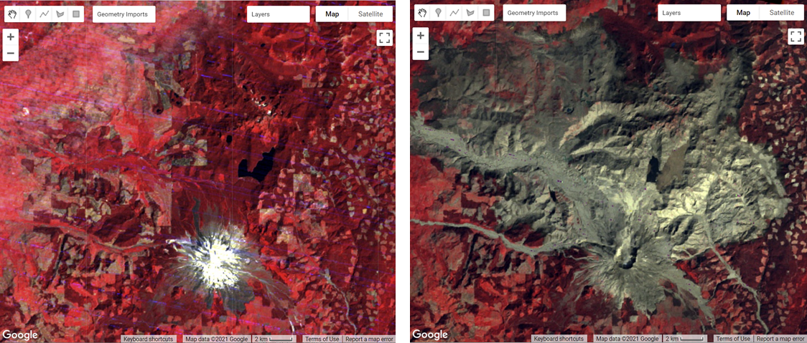

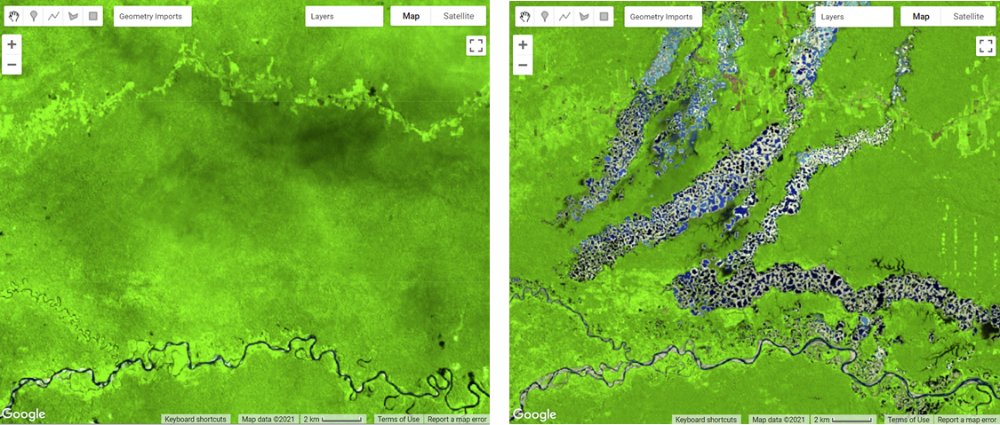

Many change detection techniques use the same basic premise: that most changes on the landscape result in spectral values that differ between pre-event and post-event images. The challenge can be to separate the real changes of interest—those due to activities on the landscape—from noise in the spectral signal, which can be caused by seasonal variation and phenology, image misregistration, clouds and shadows, radiometric inconsistencies, variability in illumination (e.g., sun angle, sensor position), and atmospheric effects.
Activities that result in pronounced changes in radiance values for a sufficiently long time period are easier to detect using remote sensing change detection techniques than are subtle or short-lived changes in landscape conditions. Mapping challenges can arise if the change event is short-lived, as these are difficult to capture using satellite instruments that only observe a location every several days. Other types of changes occur so slowly or are so vast that they are not easily detected until they are observed using satellite images gathered over a sufficiently long interval of time. Subtle changes that occur slowly on the landscape may be better suited to more computationally demanding methods, such as time-series analysis. Kennedy et al. (2009) provides a nice overview of the concepts and tradeoffs involved when designing landscape monitoring approaches. Additional summaries of change detection methods and recent advances include Singh (1989), Coppin et al. (2004), Lu et al. (2004), and Woodcock et al. (2020).
For land cover changes that occur abruptly over large areas on the landscape and are long-lived, a simple two-date image differencing approach is suitable. Two-date image differencing techniques are long-established methods for identifying changes that produce easily interpretable results (Singh 1989). The process typically involves four steps: (1) image selection and preprocessing; (2) data transformation, such as calculating the difference between indices of interest (e.g., the Normalized Difference Vegetation Index (NDVI)) in the pre-event and post-event images; (3) classifying the differenced image(s) using thresholding or supervised classification techniques; and (4) evaluation.
For the practicum, you will select pre-event and post-event image scenes and investigate the conditions in these images in a false-color composite display. Next, you will calculate the NBR index for each scene and create a difference image using the two NBR maps. Finally, you will apply a threshold to the difference image to establish categories of changed versus stable areas (Fig. F4.4.2).

Preparing Imagery
Before beginning a change detection workflow, image preprocessing is essential. The goal is to ensure that each pixel records the same type of measurement at the same location over time. These steps include multitemporal image registration and radiometric and atmospheric corrections, which are especially important. A lot of this work has been automated and already applied to the images that are available in Earth Engine. Image selection is also important. Selection considerations include finding images with low cloud cover and representing the same phenology (e.g., leaf-on or leaf-off).
The code in the block below accesses the USGS Landsat 8 Level 2, Collection 2, Tier 1 dataset and assigns it to the variable landsat8. To improve readability when working with the Landsat 8 ImageCollection, the code selects bands 2–7 and renames them to band names instead of band numbers.
var landsat8 = ee.ImageCollection('LANDSAT/LC08/C02/T1_L2')
.select(
['SR_B2', 'SR_B3', 'SR_B4', 'SR_B5', 'SR_B6', 'SR_B7'],
['blue', 'green', 'red', 'nir', 'swir1', 'swir2']
);Next, you will split the Landsat 8 ImageCollection into two collections, one for each time period, and apply some filtering and sorting to get an image for each of two time periods. In this example, we know there are few clouds for the months of the analysis; if you’re working in a different area, you may need to apply some cloud masking or mosaicing techniques (see Chap. F4.3).
The code below does several things. First, it creates a new geometry variable to filter the geographic bounds of the image collections. Next, it creates a new variable for the pre-event image by (1) filtering the collection by the date range of interest (e.g., June 2013), (2) filtering the collection by the geometry, (3) sorting by cloud cover so the first image will have the least cloud cover, and (4) getting the first image from the collection.
Now repeat the previous step, but assign it to a post-event image variable and change the filter date to a period after the pre-event image’s date range (e.g., June 2020).
var point = ee.Geometry.Point([-123.64, 42.96]);
Map.centerObject(point, 11);
var preImage = landsat8
.filterBounds(point)
.filterDate('2013-06-01', '2013-06-30')
.sort('CLOUD_COVER', true)
.first(); var postImage = landsat8
.filterBounds(point)
.filterDate('2020-06-01', '2020-06-30')
.sort('CLOUD_COVER', true)
.first();Creating False-Color Composites
Before running any sort of change detection analysis, it is useful to first visualize your input images to get a sense of the landscape, visually inspect where changes might occur, and identify any problems in the inputs before moving further. As described in Chap. F1.1, false-color composites draw bands from multispectral sensors in the red, green, and blue channels in ways that are designed to illustrate contrast in imagery. Below, you will produce a false-color composite using SWIR-2 in the red channel, NIR in the green channel, and Red in the blue channel (Fig. F4.4.3).
Following the format in the code block below, first create a variable visParam to hold the display parameters, selecting the SWIR-2, NIR, and red bands, with values drawn that are between 7750 and 22200. Next, add the pre-event and post-event images to the map and click Run. Click and drag the opacity slider on the post-event image layer back and forth to view the changes between your two images.
var visParam = { 'bands': ['swir2', 'nir', 'red'], 'min': 7750, 'max': 22200
};
Map.addLayer(preImage, visParam, 'pre');
Map.addLayer(postImage, visParam, 'post');
Calculating NBR
The next step is data transformation, such as calculating NBR. The advantage of using these techniques is that the data, along with the noise inherent in the data, have been reduced in order to simplify a comparison between two images. Image differencing is done by subtracting the spectral value of the first-date image from that of the second-date image, pixel by pixel (Fig. F4.4.2). Two-date image differencing can be used with a single band or with spectral indices, depending on the application. Identifying the correct band or index to identify change and finding the correct thresholds to classify it are critical to producing meaningful results. Working with indices known to highlight the land cover conditions before and after a change event of interest is a good starting point. For example, the Normalized Difference Water Index would be good for mapping water level changes during flooding events; the NBR is good at detecting soil brightness; and the NDVI can be used for tracking changes in vegetation (although this index does saturate quickly). In some cases, using derived band combinations that have been customized to represent the phenomenon of interest is suggested, such as using the Normalized Difference Fraction Index to monitor forest degradation (see Chap. A3.4).
Examine changes to the landscape caused by fires using NBR, which measures the severity of fires using the equation (NIR − SWIR) / (NIR + SWIR). These bands were chosen because they respond most strongly to the specific changes in forests caused by fire. This type of equation, a difference of variables divided by their sum, is referred to as a normalized difference equation (see Chap. F2.0). The resulting value will always fall between −1 and 1. NBR is useful for determining whether a fire recently occurred and caused damage to the vegetation, but it is not designed to detect other types of land cover changes especially well.
First, calculate the NBR for each time period using the built-in normalized difference function. For Landsat 8, be sure to utilize the NIR and SWIR2 bands to calculate NBR. Then, rename each image band with the built-in rename function.
// Calculate NBR.
var nbrPre = preImage.normalizedDifference(['nir', 'swir2'])
.rename('nbr_pre');
var nbrPost = postImage.normalizedDifference(['nir', 'swir2'])
.rename('nbr_post');Code Checkpoint F44a. The book’s repository contains a script that shows what your code should look like at this point.
Single Date Transformation
Next, we will examine the changes that have occurred, as seen when comparing two specific dates in time.
Subtract the pre-event image from the post-event image using the subtract function. Add the two-date change image to the map with the specialized Fabio Crameri batlow color ramp (Crameri et al. 2020). This color ramp is an example of a color combination specifically designed to be readable by colorblind and color-deficient viewers. Being cognizant of your cartographic choices is an important part of making a good change map.
// 2-date change.
var diff = nbrPost.subtract(nbrPre).rename('change');
var palette = [ '011959', '0E365E', '1D5561', '3E6C55', '687B3E', '9B882E', 'D59448', 'F9A380', 'FDB7BD', 'FACCFA'
];
var visParams = {
palette: palette,
min: -0.2,
max: 0.2
};
Map.addLayer(diff, visParams, 'change');Question 1. Try to interpret the resulting image before reading on. What patterns of change can you identify? Can you find areas that look like vegetation loss or gain?
The color ramp has dark blues for the lowest values, greens and oranges in the midrange, and pink for the highest values. We used nbrPre subtracted from nbrPost to identify changes in each pixel. Since NBR values are higher when vegetation is present, areas that are negative in the change image will represent pixels that were higher in the nbrPre image than in the nbrPost image. Conversely, positive differences mean that an area gained vegetation (Fig. F4.4.4).
b) c)

Classifying Change
Once the images have been transformed and differenced to highlight areas undergoing change, the next step is image classification into a thematic map consisting of stable and change classes. This can be done rather simply by thresholding the change layer, or by using classification techniques such as machine learning algorithms. One challenge of working with simple thresholding of the difference layer is knowing how to select a suitable threshold to partition changed areas from stable classes. On the other hand, classification techniques using machine learning algorithms partition the landscape using examples of reference data that you provide to train the classifier. This may or may not yield better results, but does require additional work to collect reference data and train the classifier. In the end, resources, timing, and the patterns of the phenomenon you are trying to map will determine which approach is suitable—or perhaps the activity you are trying to track requires something more advanced, such as a time-series approach that uses more than two dates of imagery.
For this chapter, we will classify our image into categories using a simple, manual thresholding method, meaning we will decide the optimal values for when a pixel will be considered change or no-change in the image. Finding the ideal value is a considerable task and will be unique to each use case and set of inputs (e.g., the threshold values for a SWIR2 single-band change would be different from the thresholds for NDVI). For a look at a more advanced method of thresholding, check out the thresholding methods in Chap. A2.3.
First, you will define two variables for the threshold values for gain and loss. Next, create a new image with a constant value of 0. This will be the basis of our classification. Reclassify the new image using the where function. Classify loss areas as 2 where the difference image is less than or equal to the loss threshold value. Reclassify gain areas to 1 where the difference image is greater than or equal to the gain threshold value. Finally, mask the image by itself and add the classified image to the map (Fig. F4.4.5). Note: It is not necessary to self-mask the image, and in many cases you might be just as interested in areas that did not change as you are in areas that did.
// Classify change
var thresholdGain = 0.10;
var thresholdLoss = -0.10;
var diffClassified = ee.Image(0);
diffClassified = diffClassified.where(diff.lte(thresholdLoss), 2);
diffClassified = diffClassified.where(diff.gte(thresholdGain), 1);
var changeVis = {
palette: 'fcffc8,2659eb,fa1373',
min: 0,
max: 2
};
Map.addLayer(diffClassified.selfMask(),
changeVis, 'change classified by threshold');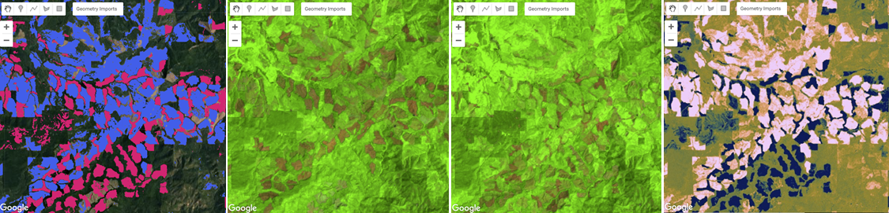
![Fig. F4.4.5 (a) Change detection in timber forests of southern Oregon, including maps of the (left to right) pre-event false-color composite, post-event false-color composite, difference image, and classified change using NBR; (b) the same map types for an example of change caused by fire in southern Oregon. The false-color maps highlight vegetation in green and barren ground in brown. The difference images show NBR gain in pink to NBR loss in blue. The classified change images show NBR gain in blue and NBR loss in red.](images/F4/image17.png)
Chapters F4.5 through F4.9 present more-advanced change detection algorithms that go beyond differencing and thresholding between two images, instead allowing you to analyze changes indicated across several images as a time series.
Code Checkpoint F44b. The book’s repository contains a script that shows what your code should look like at this point.
Conclusion
In this chapter, you learned how to make a change detection map using two-image differencing. The importance of visualizing changes in this way instead of using a post-classification comparison, where two classified maps are compared instead of two satellite images, is that it avoids multiplicative errors from the classifications and is better at observing more subtle changes in the landscape. You also learned that how you visualize your images and change maps—such as what band combinations and color ramps you select, and what threshold values you use for a classification map—has an impact on how easily and what types of changes can be seen.
References
Cohen WB, Healey SP, Yang Z, et al (2017) How similar are forest disturbance maps derived from different Landsat time series algorithms? Forests 8:98. https://doi.org/10.3390/f8040098
Coppin P, Jonckheere I, Nackaerts K, et al (2004) Digital change detection methods in ecosystem monitoring: A review. Int J Remote Sens 25:1565–1596. https://doi.org/10.1080/0143116031000101675
Crameri F, Shephard GE, Heron PJ (2020) The misuse of colour in science communication. Nat Commun 11:1–10. https://doi.org/10.1038/s41467-020-19160-7
Fung T (1990) An assessment of TM imagery for land-cover change detection. IEEE Trans Geosci Remote Sens 28:681–684. https://doi.org/10.1109/TGRS.1990.572980
Hansen MC, Potapov PV, Moore R, et al (2013) High-resolution global maps of 21st-century forest cover change. Science 342:850–853. https://doi.org/10.1126/science.1244693
Kennedy RE, Townsend PA, Gross JE, et al (2009) Remote sensing change detection tools for natural resource managers: Understanding concepts and tradeoffs in the design of landscape monitoring projects. Remote Sens Environ 113:1382–1396. https://doi.org/10.1016/j.rse.2008.07.018
Lu D, Mausel P, Brondízio E, Moran E (2004) Change detection techniques. Int J Remote Sens 25:2365–2401. https://doi.org/10.1080/0143116031000139863
Macleod RD, Congalton RG (1998) A quantitative comparison of change-detection algorithms for monitoring eelgrass from remotely sensed data. Photogramm Eng Remote Sensing 64:207–216
Singh A (1989) Digital change detection techniques using remotely-sensed data. Int J Remote Sens 10:989–1003. https://doi.org/10.1080/01431168908903939
Stehman SV, Czaplewski RL (1998) Design and analysis for thematic map accuracy assessment: Fundamental principles. Remote Sens Environ 64:331–344. https://doi.org/10.1016/S0034-4257(98)00010-8
Woodcock CE, Loveland TR, Herold M, Bauer ME (2020) Transitioning from change detection to monitoring with remote sensing: A paradigm shift. Remote Sens Environ 238:111558. https://doi.org/10.1016/j.rse.2019.111558
Interpreting Annual Time Series with LandTrendr
Overview
Time-series analysis of change can be achieved by fitting the entire spectral trajectory using simple statistical models. These allow us to both simplify the time series and to extract useful information about the changes occurring. In this chapter, you will get an introduction to the use of LandTrendr, one of these time-series approaches used to characterize time series of spectral values.
Learning Outcomes
- Evaluating yearly time-series spectral values to distinguish between true change and artifacts.
- Recognizing disturbance and growth signals in the time series of annual spectral values for individual pixels.
- Interpreting change segments and translating them to maps.
- Applying parameters in a graphical user interface to create disturbance maps in forests.
Assumes you know how to:
- Calculate and interpret vegetation indices (Chap. F2.0)
- Interpret bands and indices in terms of land surface characteristics (Chap. F2.0).
Introduction
Land surface change happens all the time, and satellite sensors witness it. If a spectral index is chosen to match the type of change being sought, surface change can be inferred from changes in spectral index values. Over time, the progression of spectral values witnessed in each pixel tells a story of the processes of change, such as growth and disturbance. Time-series algorithms are designed to leverage many observations of spectral values over time to isolate and describe changes of interest, while ignoring uninteresting change or noise.
In this lab, we use the LandTrendr time-series algorithms to map change. The LandTrendr algorithms apply “temporal segmentation” strategies to distill a multiyear time series into sequential straight-line segments that describe the change processes occurring in each pixel. We then isolate the segment of interest in each pixel and make maps of when, how long, and how intensely each process occurred. Similar strategies can be applied to more complicated descriptions of the time series, as is seen in some of the chapters that follow this one.
For this lab, we will use a graphical user interface (GUI) to teach the concepts of LandTrendr.
Code Checkpoint F45a. The book’s repository contains information about accessing the LandTrendr interface.
Pixel Time Series
When working with LandTrendr for the first time in your area, there are two questions you must address.
First, is the change of interest detectable in the spectral reflectance record? If the change you are interested in does not leave a pattern in the spectral reflectance record, then an algorithm will not be able to find it.
Second, can you identify fitting parameters that allow the algorithm to capture that record? Time series algorithms apply rules to a temporal sequence of spectral values in a pixel, and simplify the many observations into more digestible forms, such as the linear segments we will work with using LandTrendr. The algorithms that do the simplification are often guided by parameters that control the way the algorithm does its job.
The best way to begin assessing these questions is to look at the time series of individual pixels. In Earth Engine, open and run the script that generates the GUI we have developed to easily deploy the LandTrendr algorithms. Run the script, and you should see an interface that looks like the one shown in Fig. 4.5.1.

The LandTrendr GUI consists of three panels: a control panel on the left, a reporting panel on the right, and a Map panel in the center. The control panel is where all of the functionality of the interface resides. There are several modules,and each is accessed by clicking on the double arrow to the right of the title. The Map panel defaults to a location in Oregon but can be manually moved anywhere in the world. The reporting panel shows messages about how to use functions, as well as providing graphical outputs.
Next, expand the “Pixel Time Series Options” function. For now, simply use your mouse to click somewhere on the map. Wait a few seconds even though it looks like nothing is happening – be patient!! The GUI has sent information to Earth Engine to run the LandTrendr algorithms at the location you have clicked, and is waiting for the results. Eventually you should see a chart appear in the reporting panel on the right. Fig. 4.5.2 shows what one pixel looks like in an area where the forest burned and began regrowth. Your chart will probably look different.

The key to success with the LandTrendr algorithm is interpreting these time series. First, let’s examine the components of the chart. The x-axis shows the year of observation. With LandTrendr, only one observation per year is used to describe the history of a pixel; later, we will cover how you control that value. The y-axis shows the spectral value of the index that is chosen. In the default mode, the Normalized Burn Ratio (as described in Chap. F4.4). Note that you also have the ability to pick more indices using the checkboxes on the control panel on the left. Note that we scale floating point (decimal) indices by 1000. Thus, an NBR value of 1.0 would be displayed as 1000.
In the chart area, the thick gray line represents the spectral values observed by the satellite for the period of the year selected for a single 30 m Landsat pixel at the location you have chosen. The red line is the output from the temporal segmentation that is the heart of the LandTrendr algorithms. The title of the chart shows the spectral index, as well as the root-mean-square error of the fit.
To interpret the time series, first know which way is “up” and “down” for the spectral index you’re interested in. For the NBR, the index goes up in value when there is more vegetation and less soil in a pixel. It goes down when there is less vegetation. For vegetation disturbance monitoring, this is useful.
Next, translate that change into the changes of interest for the change processes you’re interested in. For conifer forest systems, the NBR is useful because it drops precipitously when a disturbance occurs, and it rises as vegetation grows.
In the case of Fig. 4.5.2, we interpret the abrupt drop as a disturbance, and the subsequent rise of the index as regrowth or recovery (though not necessarily to the same type of vegetation).

Tip: LandTrendr is able to accept any index, and advanced users are welcome to use indices of their own design. An important consideration is knowing which direction indicates “recovery” and “disturbance” for the topic you are interested in. The algorithms favor detection of disturbance and can be controlled to constrain how quickly recovery is assumed to occur (see parameters below).
For LandTrendr to have any hope of finding the change of interest, that change must be manifested in the gray line showing the original spectral values. If you know that some process is occurring and it is not evident in the gray line, what can you do?
One option is to change the index. Any single index is simply one view of the larger spectral space of the Landsat Thematic Mapper sensors. The change you are interested in may cause spectral change in a different direction than that captured with some indices. Try choosing different indices from the list. If you click on different checkboxes and re-submit the pixel, the fits for all of the different indices will appear.
Another option is to change the date range. LandTrendr uses one value per year, but the value that is chosen can be controlled by the user. It’s possible that the change of interest is better identified in some seasons than others. We use a medoid image compositing approach, which picks the best single observation each year from a date range of images in an ImageCollection. In the GUI, you can change the date range of imagery used for compositing in the Image Collection portion of the LandTrendr Options menu (Fig. F4.5.4).

Change the Start Date and End Date to find a time of year when the distinction between cover conditions before and during the change process of interest is greatest.
There are other considerations to keep in mind. First, seasonality of vegetation, water, or snow often can affect the signal of the change of interest. And because we use an ImageCollection that spans a range of dates, it’s best to choose a date range where there is not likely to be a substantial change in vegetative state from the beginning to the end of the date range. Clouds can be a factor too. Some seasons will have more cloudiness, which can make it difficult to find good images. Often with optical sensors, we are constrained to working with periods where clouds are less prevalent, or using wide date ranges to provide many opportunities for a pixel to be cloud-free.
It is possible that no combination of index or data range is sensitive to the change of interest. If that is the case, there are two options: try using a different sensor and change detection technique, or accept that the change is not discernible. This can often occur if the change of interest occupies a small portion of a given 30 m by 30 m Landsat pixel, or if the spectral manifestation of the change is so subtle that it is not spectrally separable from non-changed pixels
Even if you as a human can identify the change of interest in the spectral trajectory of the gray line, an algorithm may not be able to similarly track it. To give the algorithm a fighting chance, you need to explore whether different fitting parameters could be used to match the red fitted line with the gray source image line.
The overall fitting process includes steps to reduce noise and best identify the underlying signal. The temporal segmentation algorithms are controlled by fitting parameters that are described in detail in Kennedy et al. (2010). You adjust these parameters using the Fitting Parameters block of the LandTrendr Options menu. Below is a brief overview of what values are often useful, but these will likely change as you use different spectral indices.
First, the minimum observations needed criterion is used to evaluate whether a given trajectory has enough unfiltered (i.e., clear observation) years to run the fitting. We suggest leaving this at the default of 6.
The segmentation begins with a noise-dampening step to remove spikes that could be caused by unfiltered clouds or shadows. The spike threshold parameter controls the degree of filtering. A value of 1.0 corresponds to no filtering, and lower values corresponding to more severe filtering. We suggest leaving this at 0.9; if changed, a range from 0.7 to 1.0 is appropriate.
The next step is finding vertices. This begins with the start and end year as vertex years, progressively adding candidate vertex years based on deviation from linear fits. To avoid getting an overabundance of vertex years initially found using this method, we suggest leaving the vertex count overshoot at a value of 3. A second set of algorithms uses deflection angle to cull back this overabundance to a set number of maximum candidate vertex years.
That number of vertex years is controlled by the max_segments parameter. As a general rule, your number of segments should be no more than one-third of the total number of likely yearly observations. The years of these vertices (X-values) are then passed to the model-building step. Assuming you are using at least 30 years of the archive, and your area has reasonable availability of images, a value of 8 is a good starting point.
In the model-building step, straight-line segments are built by fitting Y-values (spectral values) for the periods defined by the vertex years (X-values). The process moves from left to right—early years to late years. Regressions of each subsequent segment are connected to the end of the prior segment. Regressions are also constrained to prevent unrealistic recovery after disturbance, as controlled by the recovery threshold parameter. A lower value indicates greater constraint: a value of 1.0 means the constraint is turned off; a value of 0.25 means that segments that fully recover in faster than four years (4 = 1/0.25) are not permitted. Note: This parameter has strong control on the fitting, and is one of the first to explore when testing parameters. Additionally, the preventOneYearRecovery will disallow fits that have one-year-duration recovery segments. This may be useful to prevent overfitting of noisy data in environments where such quick vegetative recovery is not ecologically realistic.
Once a model of the maximum number of segments is found, successively simpler models are made by iteratively removing the least informative vertex. Each model is scored using a pseudo-f statistic, which penalizes models with more segments, to create a pseudo p-value for each model. The p-value threshold parameter is used to identify all fits that are deemed good enough. Start with a value of 0.05, but check to see if the fitted line appears to capture the salient shape and features of the gray source trajectory. If you see temporal patterns in the gray line that are likely not noise (based on your understanding of the system under study), consider switching the p-value threshold to 0.10 or even 0.15.
Note: because of temporal autocorrelation, these cannot be interpreted as true f- and p-values, but rather as relative scalars to distinguish goodness of fit among models. If no good models can be found using these criteria based on the p-value parameter set by the user, a second approach is used to solve for the Y-value of all vertex years simultaneously. If no good model is found, then a straight-line mean value model is used.
From the models that pass the p-value threshold, one is chosen as the final fit. It may be the one with the lowest p-value. However, an adjustment is made to allow more complicated models (those with more segments) to be picked even if their p-value is within a defined proportion of the best-scoring model. That proportion is set by the best model proportion parameter. As an example, a best model proportion value of 0.75 would allow a more complicated model to be chosen if its score were greater than 75% that of the best model.
Translating Pixels to Maps
Although the full time series is the best description of each pixel’s “life history,” we typically are interested in the behavior of all of the pixels in our study area. It would be both inefficient to manually visualize all of them and ineffective to try to summarize areas and locations. Thus, we seek to make maps.
There are three post-processing steps to convert a segmented trajectory to a map. First, we identify segments of interest; if we are interested in disturbance, we find segments whose spectral change indicates loss. Second, we filter out segments of that type that do not meet criteria of interest. For example, very low magnitude disturbances can occur when the algorithm mistakenly finds a pattern in the random noise of the signal, and thus we do not want to include it. Third, we extract from the segment of interest something about its character to map on a pixel-by-pixel basis: its start year, duration, spectral value, or the value of the spectral change.
Theory: We’ll start with a single pixel to learn how to Interpret a disturbance pixel time series in terms of the dominant disturbance segment. For the disturbance time series we have used in figures above, we can identify the key parameters of the segment associated with the disturbance. For the example above, we have extracted the actual NBR values of the fitted time series and noted them in a table (Fig. 4.5.5). This is not part of the GUI – it is simply used here to work through the concepts.

From the table shown in Fig. 4.5.5, we can infer several key things about this pixel:
- It was likely disturbed between 2006 and 2007. This is because the NBR value drops precipitously in the segment bounded by vertices (breakpoints) in 2006 and 2007.
- The magnitude of spectral change was large: 1175 scaled NBR units out of a possible range of 2000 scaled units.
- There were small drops in NBR earlier, which may indicate some subtle loss of vegetation over a long period in the pixel. These drops, however, would need to be explored in a separate analysis because of their subtle nature.
- The main disturbance had a disturbance duration of just one year. This abruptness combined with the high magnitude suggests a major vegetative disturbance such as a harvest or a fire.
- The disturbance was then followed by recovery of vegetation, but not to the level before the disturbance. Note: Ecologists will recognize the growth signal as one of succession, or active revegetation by human intervention.
Following the three post-processing steps noted in the introduction to this section, to map the year of disturbance for this pixel we would first identify the potential disturbance segments as those with negative NBR. Then we would hone in on the disturbance of interest by filtering out potential disturbance segments that are not abrupt and/or of small magnitude. This would leave only the high-magnitude, short-duration segment. For that segment, the first year that we have evidence of disturbance is the first year after the start of the segment. The segment starts in 2006, which means that 2007 is the first year we have such evidence. Thus, we would assign 2007 to this pixel.
If we wanted to map the magnitude of the disturbance, we would follow the same first two steps, but then report for the pixel value the magnitude difference between the starting and ending segment.
The LandTrendr GUI provides a set of tools to easily apply the same logic rules to all pixels of interest and create maps. Click on the Change Filter Options menu. The interface shown in Fig. 4.5.6 appears.

The first two sections are used to identify the segments of interest.
Select Vegetation Change Type offers the options of gain or loss, which refer to gain or loss of vegetation, with disturbance assumed to be related to loss of vegetation. Note: Advanced users can look in the landtrendr.js library in the “calcindex” function to add new indices with gain and loss defined as they choose. The underlying algorithm is built to find disturbance in indices that increase when disturbance occurs, so indices such as NBR or NDVI need to be multiplied by (−1) before being fed to the LandTrendr algorithm. This is handled in the calcIndex function.
Select Vegetation Change Sort offers various options that allow you to choose the segment of interest based on timing or duration. By default, the greatest magnitude disturbance is chosen.
Each filter (magnitude, duration, etc.) is used to further winnow the possible segments of interest. All other filters are applied at the pixel scale, but Filter by MMU is applied to groups of pixels based on a given minimum mapping unit (MMU). Once all other filters have been defined, some pixels are flagged as being of interest and others are not. The MMU filter looks to see how many connected pixels have been flagged as occurring in the same year, and omits groups smaller in pixel count than the number indicated here (which defaults to 11 pixels, or approximately 1 hectare).
If you’re following along and making changes, or if you’re just using the default location and parameters, click the Add Filtered Disturbance Imagery to add this to the map. You should see something like Fig. 4.5.7.

There are multiple layers of disturbance added to the map. Use the map layers checkboxes to change which is shown. Magnitude of disturbance, for example, is a map of the delta change between beginning and endpoints of the segments (Fig. 4.5.8).

Conclusion
This exercise provides a baseline sense of how the LandTrendr algorithm works. The key points are learning how to interpret change in spectral values in terms of the processes occurring on the ground, and then translating those into maps.
You can export the images you’ve made here using Download Options. Links to materials are available in the chapter checkpoints and LandTrendr documentation about both the GUI and the script-based versions of the algorithm. In particular, there are scripts that handle different components of the fitting and mapping process, and that allow you to keep track of the fitting and image selection criteria.
References
Kennedy RE, Yang Z, Cohen WB (2010) Detecting trends in forest disturbance and recovery using yearly Landsat time series: 1. LandTrendr - Temporal segmentation algorithms. Remote Sens Environ 114:2897–2910. https://doi.org/10.1016/j.rse.2010.07.008
Kennedy RE, Yang Z, Gorelick N, et al (2018) Implementation of the LandTrendr algorithm on Google Earth Engine. Remote Sens 10:691. https://doi.org/10.3390/rs10050691
Fitting Functions to Time Series
Overview
The purpose of this chapter is to establish a foundation for time-series analysis of remotely sensed data, which is typically arranged as an ordered stack of images. You will be introduced to the concepts of graphing time series, using linear modeling to detrend time series, and fitting harmonic models to time-series data. At the completion of this chapter, you will be able to perform analysis of multi-temporal data for determining trend and seasonality on a per-pixel basis.
Learning Outcomes
- Graphing satellite imagery values across a time series.
- Quantifying and potentially removing linear trends in time series.
- Fitting linear and harmonic models to individual pixels in time-series data.
Assumes you know how to:
- Import images and image collections, filter, and visualize (Part F1).
- Perform basic image analysis: select bands, compute indices, create masks (Part F2).
- Create a graph using ui.Chart (Chap. F1.3).
- Use normalizedDifference to calculate vegetation indices (Chap. F2.0).
- Write a function and map it over an ImageCollection (Chap. F4.0).
- Mask cloud, cloud shadow, snow/ice, and other undesired pixels (Chap. F4.3).
Introduction
Many natural and man-made phenomena exhibit important annual, interannual, or longer-term trends that recur—that is, they occur at roughly regular intervals. Examples include seasonality in leaf patterns in deciduous forests and seasonal crop growth patterns. Over time, indices such as the Normalized Difference Vegetation Index (NDVI) will show regular increases (e.g., leaf-on, crop growth) and decreases (e.g., leaf-off, crop senescence), and typically have a long-term, if noisy, trend such as a gradual increase in NDVI value as an area recovers from a disturbance.
Earth Engine supports the ability to do complex linear and non-linear regressions of values in each pixel of a study area. Simple linear regressions of indices can reveal linear trends that can span multiple years. Meanwhile, harmonic terms can be used to fit a sine-wave-like curve. Once you have the ability to fit these functions to time series, you can answer many important questions. For example, you can define vegetation dynamics over multiple time scales, identify phenology and track changes year to year, and identify deviations from the expected patterns (Bradley et al. 2007, Bullock et al. 2020). There are multiple applications for these analyses. For example, algorithms to detect deviations from the expected pattern can be used to identify disturbance events, including deforestation and forest degradation (Bullock et al. 2020).
If you have not already done so, be sure to add the book’s code repository to the Code Editor by entering https://code.earthengine.google.com/?accept_repo=projects/gee-edu/book into your browser. The book’s scripts will then be available in the script manager panel.
Multi-Temporal Data in Earth Engine
As explained in Chaps. F4.0 and F4.1, a time series in Earth Engine is typically represented as an ImageCollection. Because of image overlaps, cloud treatments, and filtering choices, an ImageCollection can have any of the following complex characteristics:
- At each pixel, there might be a distinct number of observations taken from a unique set of dates.
- The size (length) of the time series can vary across pixels.
- Data may be missing in any pixel at any point in the sequence (e.g., due to cloud masking).
The use of multi-temporal data in Earth Engine introduces two mind-bending concepts, which we will describe below.
Per-pixel curve fitting. As you have likely encountered in many settings, a function can be fit through a series of values. In the most familiar example, a function of the form y = mx + b can represent a linear trend in data of all kinds. Fitting a straight “curve” with linear regression techniques involves estimating m and b for a set of x and y values. In a time series, x typically represents time, while y values represent observations at specific times. This chapter introduces how to estimate m and b for computed indices through time to model a potential linear trend in a time series. We then demonstrate how to fit a sinusoidal wave, which is useful for modeling rising and falling values, such as NDVI over a growing season. What can be particularly mind-bending in this setting is the fact that when Earth Engine is asked to estimate values across a large area, it will fit a function in every pixel of the study area. Each pixel, then, has its own m and b values, determined by the number of observations in that pixel, the observed values, and the dates for which they were observed.
Higher-dimension band values: array images. That more complex conception of the potential information contained in a single pixel can be represented in a higher-order Earth Engine structure: the array image. As you will encounter in this lab, it is possible for a single pixel in a single band of a single image to contain more than one value. If you choose to implement an array image, a single pixel might contain a one-dimensional vector of numbers, perhaps holding the slope and intercept values resulting from a linear regression, for example. Other examples, outside the scope of this chapter but used in the next chapter, might employ a two-dimensional matrix of values for each pixel within a single band of an image. Higher-order dimensions are available, as well as array image manipulations borrowed from the world of matrix algebra. Additionally, there are functions to move between the multidimensional array image structure and the more familiar, more easily displayed, simple Image type. Some of these array image functions were encountered in Chap. F3.1, but with less explanatory context.
First, we will give some very basic notation (Fig. F4.6.1). A scalar pixel at time t is given by pt, and a pixel vector by pt. A variable with a “hat” represents an estimated value: in this context, p̂t is the estimated pixel value at time t. A time series is a collection of pixel values, usually sorted chronologically: {pt; t = t0…tN}, where t might be in any units, t0 is the smallest, and tN is the largest such t in the series.

Data Preparation and Preprocessing
The first step in analysis of time-series data is to import data of interest and plot it at an interesting location. We will work with the USGS Landsat 8 Level 2, Collection 2, Tier 1 ImageCollection and a cloud-masking function (Chap. F4.3), scale the image values, and add variables of interest to the collection as bands. Copy and paste the code below to filter the Landsat 8 collection to a point of interest over California (variable roi) and specific dates, and to apply the defined function. The variables of interest added by the function are: (1) NDVI (Chap. F2.0), (2) a time variable that is the difference between the image’s current year and the year 1970 (a start point), and (3) a constant variable with value 1.
///////////////////// Sections 1 & 2 /////////////////////////////
// Define function to mask clouds, scale, and add variables
// (NDVI, time and a constant) to Landsat 8 imagery.
function maskScaleAndAddVariable(image) {
// Bit 0 - Fill
// Bit 1 - Dilated Cloud
// Bit 2 - Cirrus
// Bit 3 - Cloud
// Bit 4 - Cloud Shadow
var qaMask = image.select('QA_PIXEL').bitwiseAnd(parseInt('11111',
2)).eq(0);
var saturationMask = image.select('QA_RADSAT').eq(0);
// Apply the scaling factors to the appropriate bands.
var opticalBands = image.select('SR_B.').multiply(0.0000275).add(-
0.2);
var thermalBands = image.select('ST_B.*').multiply(0.00341802)
.add(149.0);
// Replace the original bands with the scaled ones and apply the masks.
var img = image.addBands(opticalBands, null, true)
.addBands(thermalBands, null, true)
.updateMask(qaMask)
.updateMask(saturationMask);
var imgScaled = image.addBands(img, null, true);
// Now we start to add variables of interest.
// Compute time in fractional years since the epoch.
var date = ee.Date(image.get('system:time_start'));
var years = date.difference(ee.Date('1970-01-01'), 'year');
// Return the image with the added bands.
return imgScaled
// Add an NDVI band.
.addBands(imgScaled.normalizedDifference(['SR_B5', 'SR_B4'])
.rename('NDVI'))
// Add a time band.
.addBands(ee.Image(years).rename('t'))
.float()
// Add a constant band.
.addBands(ee.Image.constant(1));
}
// Import point of interest over California, USA.
var roi = ee.Geometry.Point([-121.059, 37.9242]);
// Import the USGS Landsat 8 Level 2, Collection 2, Tier 1 image collection),
// filter, mask clouds, scale, and add variables.
var landsat8sr = ee.ImageCollection('LANDSAT/LC08/C02/T1_L2')
.filterBounds(roi)
.filterDate('2013-01-01', '2018-01-01')
.map(maskScaleAndAddVariable);
// Set map center over the ROI.
Map.centerObject(roi, 6);
Next, to visualize the NDVI at the point of interest over time, copy and paste the code below to print a chart of the time series (Chap. F1.3) at the location of interest (Fig. F4.6.2).
// Plot a time series of NDVI at a single location.
var landsat8Chart = ui.Chart.image.series(landsat8sr.select('NDVI'), roi)
.setChartType('ScatterChart')
.setOptions({
title: 'Landsat 8 NDVI time series at ROI',
lineWidth: 1,
pointSize: 3,
});
print(landsat8Chart);
We can add a linear trend line to our chart using the trendlines parameters in the setOptions function for image series charts. Copy and paste the code below to print the same chart but with a linear trend line plotted (Fig. F4.6.3). In the next section, you will learn how to estimate linear trends over time.
// Plot a time series of NDVI with a linear trend line
// at a single location.
var landsat8ChartTL = ui.Chart.image.series(landsat8sr.select('NDVI'), roi)
.setChartType('ScatterChart')
.setOptions({
title: 'Landsat 8 NDVI time series at ROI',
trendlines: { 0: {
color: 'CC0000' }
},
lineWidth: 1,
pointSize: 3,
});
print(landsat8ChartTL);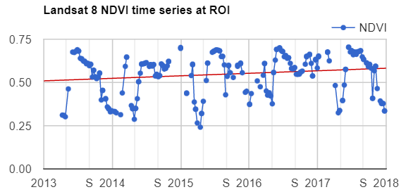
Now that we have plotted and visualized the data, lots of interesting analyses can be done to the time series by harnessing Earth Engine tools for fitting curves through this data. We will see a couple of examples in the following sections.
Code Checkpoint F46a. The book’s repository contains a script that shows what your code should look like at this point.
Estimating Linear Trend Over Time
Time series datasets may contain not only trends but also seasonality, both of which may need to be removed prior to modeling. Trends and seasonality can result in a varying mean and a varying variance over time, both of which define a time series as non-stationary. Stationary datasets, on the other hand, have a stable mean and variance, and are therefore much easier to model.
Consider the following linear model, where et is a random error:
\(p_t = β_0 + β_1t + e_t\) (Eq. F4.6.1)
This is the model behind the trend line added to the chart created in the previous section (Fig. F4.6.3). Identifying trends at different scales is a big topic, with many approaches being used (e.g., differencing, modeling).
Removing unwanted to uninteresting trends for a given problem is often a first step to understanding complex patterns in time series. There are several approaches to remove trends. Here, we will remove the linear trend that is evident in the data shown in Fig. F4.6.3 using Earth Engine’s built-in tools for regression modeling. This approach is a useful, straightforward way to detrend data in time series (Shumway and Stoffer 2019). Here, the goal is to discover the values of the β’s in Eq. F4.6.1 for each pixel.
Copy and paste code below into the Code Editor, adding it to the end of the script from the previous section. Running this code will fit this trend model to the Landsat-based NDVI series using ordinary least squares, using the linearRegression reducer (Chap. F3.0).
///////////////////// Section 3 /////////////////////////////
// List of the independent variable names
var independents = ee.List(['constant', 't']);
// Name of the dependent variable.
var dependent = ee.String('NDVI');
// Compute a linear trend. This will have two bands: 'residuals' and
// a 2x1 (Array Image) band called 'coefficients'.
// (Columns are for dependent variables)
var trend = landsat8sr.select(independents.add(dependent))
.reduce(ee.Reducer.linearRegression(independents.length(), 1));
Map.addLayer(trend, {}, 'trend array image');
// Flatten the coefficients into a 2-band image.
var coefficients = trend.select('coefficients') // Get rid of extra dimensions and convert back to a regular image
.arrayProject([0])
.arrayFlatten([independents]);
Map.addLayer(coefficients, {}, 'coefficients image');If you click over a point using the Inspector tab, you will see the pixel values for the array image (coefficients “t” and “constant”, and residuals) and two-band image (coefficients “t” and “constant”) (Fig. F4.6.4).
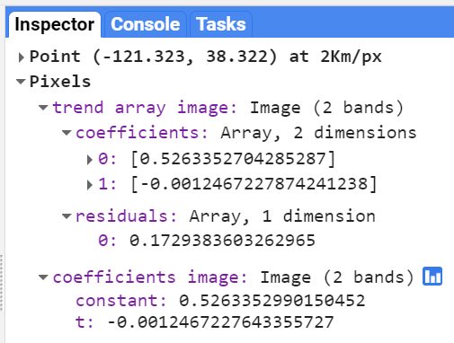
Now, copy and paste the code below to use the model to detrend the original NDVI time series and plot the time series chart with the trendlines parameter (Fig. F4.6.5).
// Compute a detrended series.
var detrended = landsat8sr.map(function(image) { return image.select(dependent).subtract(
image.select(independents).multiply(coefficients)
.reduce('sum'))
.rename(dependent)
.copyProperties(image, ['system:time_start']);
});
// Plot the detrended results.
var detrendedChart = ui.Chart.image.series(detrended, roi, null, 30)
.setOptions({
title: 'Detrended Landsat time series at ROI',
lineWidth: 1,
pointSize: 3,
trendlines: { 0: {
color: 'CC0000' }
},
});print(detrendedChart);
Code Checkpoint F46b. The book’s repository contains a script that shows what your code should look like at this point.
Estimating Seasonality with a Harmonic Model
A linear trend is one of several possible types of trends in time series. Time series can also present harmonic trends, in which a value goes up and down in a predictable wave pattern. These are of particular interest and usefulness in the natural world, where harmonic changes in greenness of deciduous vegetation can occur across the spring, summer, and autumn. Now we will return to the initial time series (landsat8sr) of Fig. F4.6.2 and fit a harmonic pattern through the data. Consider the following harmonic model, where A is amplitude, ω is frequency, φ is phase, and et is a random error.
\(p_t = β_0 + β_1t + Acos(2πωt - φ) + e_t\)
$= β_0 + β_1t + β2cos(2πωt) + β3sin(2πωt) + e_t$ (Eq. F4.6.2)Note that β2 = Acos(φ) and β3 = Asin(φ), implying A = (β22 + β32)½ and φ = atan(β3/β2) (as described in Shumway and Stoffer 2019). To fit this model to an annual time series, set ω = 1 (one cycle per year) and use ordinary least squares regression.
The setup for fitting the model is to first add the harmonic variables (the third and fourth terms of Eq. F4.6.2) to the ImageCollection. Then, fit the model as with the linear trend, using the linearRegression reducer, which will yield a 4 x 1 array image.
///////////////////// Section 4 /////////////////////////////
// Use these independent variables in the harmonic regression.
var harmonicIndependents = ee.List(['constant', 't', 'cos', 'sin']);
// Add harmonic terms as new image bands.
var harmonicLandsat = landsat8sr.map(function(image) { var timeRadians = image.select('t').multiply(2 * Math.PI); return image .addBands(timeRadians.cos().rename('cos'))
.addBands(timeRadians.sin().rename('sin'));
});
// Fit the model.
var harmonicTrend = harmonicLandsat
.select(harmonicIndependents.add(dependent)) // The output of this reducer is a 4x1 array image. .reduce(ee.Reducer.linearRegression(harmonicIndependents.length(), 1));Now, copy and paste the code below to plug the coefficients into Eq. F4.6.2 in order to get a time series of fitted values and plot the harmonic model time series (Fig. F4.6.6).
// Turn the array image into a multi-band image of coefficients.
var harmonicTrendCoefficients = harmonicTrend.select('coefficients')
.arrayProject([0])
.arrayFlatten([harmonicIndependents]);
// Compute fitted values.
var fittedHarmonic = harmonicLandsat.map(function(image) { return image.addBands(
image.select(harmonicIndependents)
.multiply(harmonicTrendCoefficients)
.reduce('sum')
.rename('fitted'));
});
// Plot the fitted model and the original data at the ROI.
print(ui.Chart.image.series(
fittedHarmonic.select(['fitted', 'NDVI']), roi, ee.Reducer
.mean(), 30)
.setSeriesNames(['NDVI', 'fitted'])
.setOptions({
title: 'Harmonic model: original and fitted values',
lineWidth: 1,
pointSize: 3,
}));
Returning to the mind-bending nature of curve-fitting, it is worth remembering that the harmonic waves seen in Fig. F4.6.6 are the fit of the data to a single point across the image. Next, we will map the outcomes of millions of these fits, pixel by pixel, across the entire study area.
We’ll compute and map the phase and amplitude of the estimated harmonic model for each pixel. Phase and amplitude (Fig. F4.6.7) can give us additional information to facilitate remote sensing applications such as agricultural mapping and land use and land cover monitoring. Agricultural crops with different phenological cycles can be distinguished with phase and amplitude information, something that perhaps would not be possible with spectral information alone.

Copy and paste the code below to compute phase and amplitude from the coefficients and add this image to the map (Fig. F4.6.8).
// Compute phase and amplitude.
var phase = harmonicTrendCoefficients.select('sin')
.atan2(harmonicTrendCoefficients.select('cos'))
// Scale to [0, 1] from radians.
.unitScale(-Math.PI, Math.PI);
var amplitude = harmonicTrendCoefficients.select('sin')
.hypot(harmonicTrendCoefficients.select('cos'))
// Add a scale factor for visualization.
.multiply(5);
// Compute the mean NDVI.
var meanNdvi = landsat8sr.select('NDVI').mean();
// Use the HSV to RGB transformation to display phase and amplitude.
var rgb = ee.Image.cat([
phase, // hue
amplitude, // saturation (difference from white)
meanNdvi // value (difference from black)
]).hsvToRgb();
Map.addLayer(rgb, {}, 'phase (hue), amplitude (sat), ndvi (val)');
The code uses the HSV to RGB transformation hsvToRgb for visualization purposes (Chap. F3.1). We use this transformation to separate color components from intensity for a better visualization. Without this transformation, we would visualize a very colorful image that would not look as intuitive as the image with the transformation. With this transformation, phase, amplitude, and mean NDVI are displayed in terms of hue (color), saturation (difference from white), and value (difference from black), respectively. Therefore, darker pixels are areas with low NDVI. For example, water bodies will appear as black, since NDVI values are zero or negative. The different colors are distinct phase values, and the saturation of the color refers to the amplitude: whiter colors mean amplitude closer to zero (e.g., forested areas), and the more vivid the colors, the higher the amplitude (e.g., croplands). Note that if you use the Inspector tool to analyze the values of a pixel, you will not get values of phase, amplitude, and NDVI, but the transformed values into values of blue, green, and red colors.
Code Checkpoint F46c. The book’s repository contains a script that shows what your code should look like at this point.
An Application of Curve Fitting
The rich data about the curve fits can be viewed in a multitude of different ways. Add the code below to your script to produce the view in Fig. 4.6.9. The image will be a close-up of the area around Modesto, California.
///////////////////// Section 5 /////////////////////////////
// Import point of interest over California, USA.
var roi = ee.Geometry.Point([-121.04, 37.641]);
// Set map center over the ROI.
Map.centerObject(roi, 14);
var trend0D = trend.select('coefficients').arrayProject([0])
.arrayFlatten([independents]).select('t');
var anotherView = ee.Image(harmonicTrendCoefficients.select('sin'))
.addBands(trend0D)
.addBands(harmonicTrendCoefficients.select('cos'));
Map.addLayer(anotherView,
{
min: -0.03,
max: 0.03 }, 'Another combination of fit characteristics');

The upper image in Fig. F4.6.9 is a closer view of Fig. F4.6.8, showing an image that transforms the sine and cosine coefficient values, and incorporates information from the mean NDVI. The lower image draws the sine and cosine in the red and blue bands, and extracts the slope of the linear trend that you calculated earlier in the chapter, placing that in the green band. The two views of the fit are similarly structured in their spatial pattern—both show fields to the west and the city to the east. But the pixel-by-pixel variability emphasizes a key point of this chapter: that a fit to the NDVI data is done independently in each pixel in the image. Using different elements of the fit, these two views, like other combinations of the data you might imagine, can reveal the rich variability of the landscape around Modesto.
Code Checkpoint F46d. The book’s repository contains a script that shows what your code should look like at this point.
Higher-Order Harmonic Models
Harmonic models are not limited to fitting a single wave through a set of points. In some situations, there may be more than one cycle within a given year—for example, when an agricultural field is double-cropped. Modeling multiple waves within a given year can be done by adding more harmonic terms to Eq. F4.6.2. The code at the following checkpoint allows the fitting of any number of cycles through a given point.
Code Checkpoint F46e. The book’s repository contains a script to use to begin this section. You will need to start with that script and edit the code to produce the charts in this section.
Beginning with the repository script, changing the value of the harmonics variable will change the complexity of the harmonic curve fit by superimposing more or fewer harmonic waves on each other. While fitting higher-order functions improves the goodness-of-fit of the model to a given set of data, many of the coefficients may be close to zero at higher numbers or harmonic terms. Fig. F4.6.10 shows the fit through the example point using one, two, and three harmonic curves.

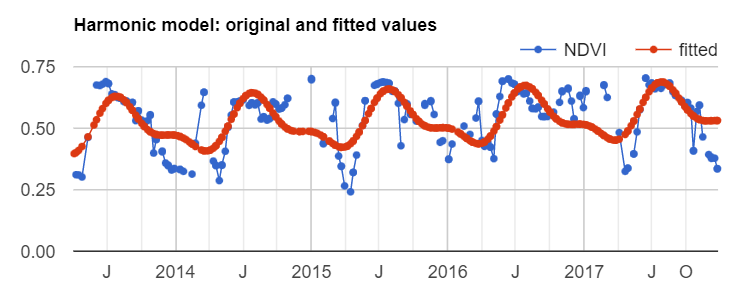

Conclusion
In this chapter, we learned how to graph and fit both linear and harmonic functions to time series of remotely sensed data. These skills underpin important tools such as Continuous Change Detection and Classification (CCDC, Chap. F4.7) and Continuous Degradation Detection (CODED, Chap. A3.4). These approaches are used by many organizations to detect forest degradation and deforestation (e.g., Tang et al. 2019, Bullock et al. 2020). These approaches can also be used to identify crops (Chap. A1.1) with high degrees of accuracy (Ghazaryan et al. 2018).
References
Bradley BA, Jacob RW, Hermance JF, Mustard JF (2007) A curve fitting procedure to derive inter-annual phenologies from time series of noisy satellite NDVI data. Remote Sens Environ 106:137–145. https://doi.org/10.1016/j.rse.2006.08.002
Bullock EL, Woodcock CE, Olofsson P (2020) Monitoring tropical forest degradation using spectral unmixing and Landsat time series analysis. Remote Sens Environ 238:110968. https://doi.org/10.1016/j.rse.2018.11.011
Ghazaryan G, Dubovyk O, Löw F, et al (2018) A rule-based approach for crop identification using multi-temporal and multi-sensor phenological metrics. Eur J Remote Sens 51:511–524. https://doi.org/10.1080/22797254.2018.1455540
Shumway RH, Stoffer DS (2019) Time Series: A Data Analysis Approach Using R. Chapman and Hall/CRC
Tang X, Bullock EL, Olofsson P, et al (2019) Near real-time monitoring of tropical forest disturbance: New algorithms and assessment framework. Remote Sens Environ 224:202–218. https://doi.org/10.1016/j.rse.2019.02.003
Interpreting Time Series with CCDC
Overview
Continuous Change Detection and Classification (CCDC) is a land change monitoring algorithm designed to operate on time series of satellite data, particularly Landsat data. This chapter focuses on the portion that is the change detection component (CCD); you will learn how to run the algorithm, interpret its outputs, and visualize coefficients and change information.
Learning Outcomes
- Exploring pixel-level time series of Landsat observations, as well as the temporal segments that CCDC fits to the observations.
- Visualizing the coefficients of the temporal segments in space.
- Visualizing predicted images made from detected temporal segments.
- Visualizing change information.
- Using array image functions.
- Attaching user-defined metadata to an image when exporting.
Assumes you know how to:
- Import images and image collections, filter, and visualize (Part F1).
- Perform basic image analysis: select bands, compute indices, create masks (Part F2).
- Visualize images with a variety of false-color band combinations (Chap. F1.1).
- Interpret bands and indices in terms of land surface characteristics (Chap. F2.0).
- Work with array images (Chap. F3.1, Chap. F4.6).
- Interpret fitted harmonic models (Chap. F4.6).
Introduction to Theory
“A time series is a sequence of observations taken sequentially in time. … An intrinsic feature of a time series is that, typically, adjacent observations are dependent. Time-series analysis is concerned with techniques for the analysis of this dependency.” This is the formal definition of time-series analysis by Box et al. (1994). In a remote sensing context, the observations of interest are measurements of radiation reflected from the surface of the Earth from the Sun or an instrument emitting energy toward Earth. Consecutive measurements made over a given area result in a time series of surface reflectance. By analyzing such time series, we can achieve a comprehensive characterization of ecosystem and land surface processes (Kennedy et al. 2014). The result is a shift away from traditional, retrospective change-detection approaches based on data acquired over the same area at two or a few points in time to continuous monitoring of the landscape (Woodcock et al. 2020). Previous obstacles related to data storage, preprocessing, and computing power have been largely overcome with the emergence of powerful cloud-computing platforms that provide direct access to the data (Gorelick et al. 2017). In this chapter, we will illustrate how to study landscape dynamics in the Amazon river basin by analyzing dense time series of Landsat data using the CCDC algorithm. Unlike LandTrendr (Chap. F4.5), which uses anniversary images to fit straight line segments that describe the spectral trajectory over time, CCDC uses all available clear observations. This has multiple advantages, including the ability to detect changes within a year and capture seasonal patterns, although at the expense of much higher computational demands and more complexity to manipulate the outputs, compared to LandTrendr.
Understanding Temporal Segmentation with CCDC
Spectral change is detected at the pixel level by testing for structural breaks in a time series of reflectance. In Earth Engine, this process is referred to as “temporal segmentation,” as pixel-level time series are segmented according to periods of unique reflectance. It does so by fitting harmonic regression models to all spectral bands in the time series. The model-fitting starts at the beginning of the time series and moves forward in time in an “online” approach to change detection. The coefficients are used to predict future observations, and if the residuals of future observations exceed a statistical threshold for numerous consecutive observations, then the algorithm flags that a change has occurred. After the change, a new regression model is fit and the process continues until the end of the time series. The details of the original algorithm are described in Zhu and Woodcock (2014). We have created an interface-based tool (Arévalo et al. 2020) that facilitates the exploration of time series of Landsat observations and the CCDC results.
Code Checkpoint F47a. The book’s repository contains information about accessing the CCDC interface.
Once you have loaded the CCDC interface (Fig. F4.7.1), you will be able to navigate to any location, pick a Landsat spectral band or index to plot, and click on the map to see the fit by CCDC at the location you clicked. For this exercise, we will study landscape dynamics in the state of Rondônia, Brazil. We can use the panel on the left-bottom corner to enter the following coordinates (latitude, longitude): -9.0002, -62.7223. A point will be added in that location and the map will zoom in to it. Once there, click on the point and wait for the chart at the bottom to load. This example shows the Landsat time series for the first shortwave infrared (SWIR1) band (as blue dots) and the time segments (as colored lines) run using CCDC default parameters. The first segment represents stable forest, which was abruptly cut in mid-2006. The algorithm detects this change event and fits a new segment afterwards, representing a new temporal pattern of agriculture. Other subsequent patterns are detected as new segments are fitted that may correspond to cycles of harvest and regrowth, or a different crop. To investigate the dynamics over time, you can click on the points in the chart, and the Landsat images they correspond to will be added to the map according to the visualization parameters selected for the RGB combination in the left panel. Currently, changes made in that panel are not immediate but must be set before clicking on the map.
Pay special attention to the characteristics of each segment. For example, look at the average surface reflectance value for each segment. The presence of a pronounced slope may be indicative of phenomena like vegetation regrowth or degradation. The number of harmonics used in each segment may represent seasonality in vegetation (either natural or due to agricultural practices) or landscape dynamics (e.g., seasonal flooding).

Question 1. While still using the SWIR1 band, click on a pixel that is forested. What do the time series and time segments look like?
Running CCDC
The tool shown above is useful for understanding the temporal dynamics for a specific point. However, we can do a similar analysis for larger areas by first running the CCDC algorithm over a group of pixels. The CCDC function in Earth Engine can take any ImageCollection, ideally one with little or no noise, such as a Landsat ImageCollection where clouds and cloud shadows have been masked. CCDC contains an internal cloud masking algorithm and is rather robust against missed clouds, but the cleaner the data the better. To simplify the process, we have developed a function library that contains functions for generating input data and processing CCDC results. Paste this line of code in a new script:
var utils = require( ‘users/parevalo_bu/gee-ccdc-tools:ccdcUtilities/api’);
For the current exercise, we will obtain an ImageCollection of Landsat 4, 5, 7, and 8 data (Collection 2 Tier 1) that has been filtered for clouds, cloud shadows, haze, and radiometrically saturated pixels. If we were to do this manually, we would retrieve each ImageCollection for each satellite, apply the corresponding filters and then merge them all into a single ImageCollection. Instead, to simplify that process, we will use the function getLandsat, included in the “Inputs” module of our utilities, and then filter the resulting ImageCollection to a small study region for the period between 2000 and 2020. The getLandsat function will retrieve all surface reflectance bands (renamed and scaled to actual surface reflectance units) as well as other vegetation indices. To simplify the exercise, we will select only the surface reflectance bands we are going to use, adding the following code to your script:
var studyRegion = ee.Geometry.Rectangle([
[-63.9533, -10.1315],
[-64.9118, -10.6813]
]);
// Define start, end dates and Landsat bands to use.
var startDate = '2000-01-01';
var endDate = '2020-01-01';
var bands = ['BLUE', 'GREEN', 'RED', 'NIR', 'SWIR1', 'SWIR2'];
// Retrieve all clear, Landsat 4, 5, 7 and 8 observations (Collection 2, Tier 1).
var filteredLandsat = utils.Inputs.getLandsat({
collection: 2 })
.filterBounds(studyRegion)
.filterDate(startDate, endDate)
.select(bands);
print(filteredLandsat.first());With the ImageCollection ready, we can specify the CCDC parameters and run the algorithm. For this exercise we will use the default parameters, which tend to work reasonably well in most circumstances. The only parameters we will modify are the breakpoint bands, date format, and lambda. We will set all the parameter values in a dictionary that we will pass to the CCDC function. For the break detection process we use all bands except for the blue and surface temperature bands (‘BLUE’ and ‘TEMP’, respectively). The minObservations default value of 6 represents the number of consecutive observations required to flag a change. The chiSquareProbability and minNumOfYearsScaler default parameters of 0.99 and 1.33, respectively, control the sensitivity of the algorithm to detect change and the iterative curve fitting process required to detect change. We set the date format to 1, which corresponds to fractional years and tends to be easier to interpret. For instance, a change detected in the middle day of the year 2010 would be stored in a pixel as 2010.5. Finally, we use the default value of lambda of 20, but we scale it to match the scale of the inputs (surface reflectance units), and we specify a maxIterations value of 10000, instead of the default of 25000, which might take longer to complete. Those two parameters control the curve fitting process.
To complete the input parameters, we specify the ImageCollection to use, which we derived in the previous code section. Add this code below:
// Set CCD params to use.
var ccdParams = {
breakpointBands: ['GREEN', 'RED', 'NIR', 'SWIR1', 'SWIR2'],
tmaskBands: ['GREEN', 'SWIR2'],
minObservations: 6,
chiSquareProbability: 0.99,
minNumOfYearsScaler: 1.33,
dateFormat: 1,
lambda: 0.002,
maxIterations: 10000,
collection: filteredLandsat
};
// Run CCD.
var ccdResults = ee.Algorithms.TemporalSegmentation.Ccdc(ccdParams);
print(ccdResults);Notice that the output ccdResults contains a large number of bands, with some of them corresponding to two-dimensional arrays. We will explore these bands more in the following section. The process of running the algorithm interactively for more than a handful of pixels can become very taxing to the system very quickly, resulting in memory errors. To avoid having such issues, we typically export the results to an Earth Engine asset first, and then inspect the asset. This approach ensures that CCDC completes its run successfully, and also allows us to access the results easily later. In the following sections of this chapter, we will use a precomputed asset, instead of asking you to export the asset yourself. For your reference, the code required to export CCDC results is shown below, with the flag set to false to help you remember to not export the results now, but instead to use the precomputed asset in the following sections.
var exportResults = false
if (exportResults) {
// Create a metadata dictionary with the parameters and arguments used.
var metadata = ccdParams;
metadata['breakpointBands'] =
metadata['breakpointBands'].toString();
metadata['tmaskBands'] = metadata['tmaskBands'].toString();
metadata['startDate'] = startDate;
metadata['endDate'] = endDate;
metadata['bands'] = bands.toString();
// Export results, assigning the metadata as image properties.
//
Export.image.toAsset({
image: ccdResults.set(metadata),
region: studyRegion,
pyramidingPolicy: {
".default": 'sample'
},
scale: 30
});
}Note the metadata variable above. This is not strictly required for exporting the per-pixel CCDC results, but it allows us to keep a record of important properties of the run by attaching this information as metadata to the image. Additionally, some of the tools we have created to interact with CCDC outputs use this user-created metadata to facilitate using the asset. Note also that setting the value of pyramidingPolicy to ‘sample’ ensures that all the bands in the output have the proper policy.
As a general rule, try to use pre-existing CCDC results if possible, and if you want to try running it yourself outside of this lab exercise, start with very small areas. For instance, the study area in this exercise would take approximately 30 minutes on average to export, but larger tiles may take several hours to complete, depending on the number of images in the collection and the parameters used.
Code Checkpoint F47b. The book’s repository contains a script that shows what your code should look like at this point.
Extracting Break Information
We will now start exploring the pre-exported CCDC results mentioned in the previous section. We will make use of the third-party module palettes, described in detail in Chap. F6.0, that simplifies the use of palettes for visualization. Paste the following code in a new script:
var palettes = require('users/gena/packages:palettes');
var resultsPath = 'projects/gee-book/assets/F4-7/Rondonia_example_small';
var ccdResults = ee.Image(resultsPath);
Map.centerObject(ccdResults, 10);
print(ccdResults);The first line calls a library that will facilitate visualizing the images. The second line contains the path to the precomputed results of the CCDC run shown in the previous section. The printed asset will contain the following bands:
- tStart: The start date of each time segment
- tEnd: The end date of each time segment
- tBreak: The time segment break date if a change is detected
- numObs: The number of observations used in each time segment
- changeProb: A numeric value representing the change probability for each of the bands used for change detection
- *_coefs: The regression coefficients for each of the bands in the input image collection
- *_rmse: The model root-mean-square error for each time segment and input band
- *_magnitude: For time segments with detected changes, this represents the normalized residuals during the change period
Notice that next to the band name and band type, there is also the number of dimensions (i.e., 1 dimension, 2 dimensions). This is an indication that we are dealing with an array image, which typically requires a specific set of functions for proper manipulation, some of which we will use in the next steps. We will start by looking at the change bands, which are one of the key outputs of the CCDC algorithm. We will select the band containing the information on the timing of break, and find the number of breaks for a given time range. In the same script, paste the code below:
// Select time of break and change probability array images.
var change = ccdResults.select('tBreak');
var changeProb = ccdResults.select('changeProb');
// Set the time range we want to use and get as mask of
// places that meet the condition.
var start = 2000;
var end = 2021;
var mask = change.gt(start).and(change.lte(end)).and(changeProb.eq(
1));
Map.addLayer(changeProb, {}, 'change prob');
// Obtain the number of breaks for the time range.
var numBreaks = mask.arrayReduce(ee.Reducer.sum(), [0]);
Map.addLayer(numBreaks, {
min: 0,
max: 5}, 'Number of breaks');With this code, we define the time range that we want to use, and then we generate a mask that will indicate all the positions in the image array with breaks detected in that range that also meet the condition of having a change probability of 1, effectively removing some spurious breaks. For each pixel, we can count the number of times that the mask retrieved a valid result, indicating the number of breaks detected by CCDC. In the loaded layer, places that appear brighter will show a higher number of breaks, potentially indicating the conversion from forest to agriculture, followed by multiple agricultural cycles. Keep in mind that the detection of a break does not always imply a change of land cover. Natural events, small-scale disturbances and seasonal cycles, among others, can result in the detection of a break by CCDC. Similarly, changes in the condition of the land cover in a pixel can also be detected as breaks by CCDC, and some erroneous breaks can also happen due to noisy time series or other factors.
For places with many changes, visualizing the first or last time when a break was recorded can be helpful to understand the change dynamics happening in the landscape. Paste the code below in the same script:
// Obtain the first change in that time period.
var dates = change.arrayMask(mask).arrayPad([1]);
var firstChange = dates
.arraySlice(0, 0, 1)
.arrayFlatten([
['firstChange']
])
.selfMask();
var timeVisParams = {
palette: palettes.colorbrewer.YlOrRd[9],
min: start,
max: end
};
Map.addLayer(firstChange, timeVisParams, 'First change');
// Obtain the last change in that time period.
var lastChange = dates
.arraySlice(0, -1)
.arrayFlatten([
['lastChange']
])
.selfMask();
Map.addLayer(lastChange, timeVisParams, 'Last change');Here we use arrayMask to keep only the change dates that meet our condition, by using the mask we created previously. We use the function arrayPad to fill or “pad” those pixels that did not experience any change and therefore have no value in the tBreak band. Then we select either the first or last values in the array, and we convert the image from a one-dimensional array to a regular image, in order to apply a visualization to it, using a custom palette. The results should look like Fig. F4.7.2.
Finally, we can use the magnitude bands to visualize where and when the largest changes as recorded by CCDC have occurred, during our selected time period. We are going to use the magnitude of change in the SWIR1 band, masking it and padding it in the same way we did before. Paste this code in your script:
// Get masked magnitudes.
var magnitudes = ccdResults
.select('SWIR1_magnitude')
.arrayMask(mask)
.arrayPad([1]);
// Get index of max abs magnitude of change.
var maxIndex = magnitudes
.abs()
.arrayArgmax()
.arrayFlatten([
['index']
]);
// Select max magnitude and its timing
var selectedMag = magnitudes.arrayGet(maxIndex);
var selectedTbreak = dates.arrayGet(maxIndex).selfMask();
var magVisParams = {
palette: palettes.matplotlib.viridis[7],
min: -0.15,
max: 0.15
};
Map.addLayer(selectedMag, magVisParams, 'Max mag');
Map.addLayer(selectedTbreak, timeVisParams, 'Time of max mag');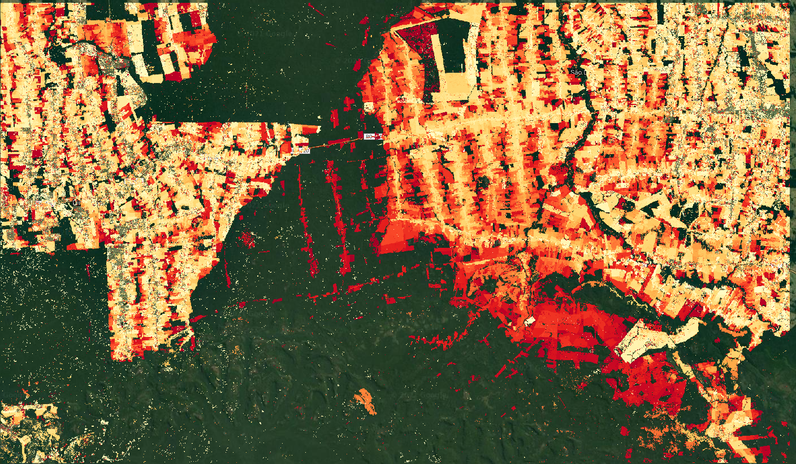

We first take the absolute value because the magnitudes can be positive or negative, depending on the direction of the change and the band used. For example, a positive value in the SWIR1 may show a forest loss event, where surface reflectance goes from low to higher values. Brighter values in Fig. 4.7.3 represent events of that type. Conversely, a flooding event would have a negative value, due to the corresponding drop in reflectance. Once we find the maximum absolute value, we find its position on the array and then use that index to extract the original magnitude value, as well as the time when that break occurred.

Code Checkpoint F47c. The book’s repository contains a script that shows what your code should look like at this point.
Question 2. Compare the “first change” and “last change” layers with the layer showing the timing of the maximum magnitude of change. Use the Inspector to check the values for specific pixels if necessary. What does the timing of the layers tell you about the change processes happening in the area?
Question 3. Looking at the “max magnitude of change” layer, find places showing the largest and the smallest values. What type of changes do you think are happening in each of those places?
Extracting Coefficients Manually
In addition to the change information generated by the CCDC algorithm, we can use the coefficients of the time segments for multiple purposes, like land cover classification. Each time segment can be described as a harmonic function with an intercept, slope, and three pairs of sine and cosine terms that allow the time segments to represent seasonality occurring at different temporal scales. These coefficients, as well as the root-mean-square error (RMSE) obtained by comparing each predicted and actual Landsat value, are produced when the CCDC algorithm is run. The following example will show you how to retrieve the intercept coefficient for a segment intersecting a specific date. In a new script, paste the code below:
var palettes = require('users/gena/packages:palettes');
var resultsPath = 'projects/gee-book/assets/F4-7/Rondonia_example_small';
var ccdResults = ee.Image(resultsPath);
Map.centerObject(ccdResults, 10);
print(ccdResults);
// Display segment start and end times.
var start = ccdResults.select('tStart');
var end = ccdResults.select('tEnd');
Map.addLayer(start, {
min: 1999,
max: 2001}, 'Segment start');
Map.addLayer(end, {
min: 2010,
max: 2020}, 'Segment end');Check the Console and expand the bands section in the printed image information. We will be using the tStart, tEnd, and SWIR1_coefs bands, which are array images containing the date when the time segments start, date time segments end, and the coefficients for each of those segments for the SWIR1 band. Run the code above and switch the map to Satellite mode. Using the Inspector, click anywhere on the images, noticing the number of dates printed and their values for multiple clicked pixels. You will notice that for places with stable forest cover, there is usually one value for tStart and one for tEnd. This means that for those more stable places, only one time segment was fit by CCDC. On the other hand, for places with visible transformation in the basemap, the number of dates is usually two or three, meaning that the algorithm fitted two or three time segments, respectively. To simplify the processing of the data, we can select a single segment to extract its coefficients. Paste the code below and re-run the script:
// Find the segment that intersects a given date.
var targetDate = 2005.5;
var selectSegment = start.lte(targetDate).and(end.gt(targetDate));
Map.addLayer(selectSegment, {}, 'Identified segment');In the code above, we set a time of interest, in this case the middle of 2005, and then we find the segments that meet the condition of starting before and ending after that date. Using the Inspector again, click on different locations and verify the outputs. The segment that meets the condition will have a value of 1, and the other segments will have a value of 0. We can use this information to select the coefficients for that segment, using the code below:
// Get all coefs in the SWIR1 band.
var SWIR1Coefs = ccdResults.select('SWIR1_coefs');
Map.addLayer(SWIR1Coefs, {}, 'SWIR1 coefs');
// Select only those for the segment that we identified previously.
var sliceStart = selectSegment.arrayArgmax().arrayFlatten([
['index']
]);
var sliceEnd = sliceStart.add(1);
var selectedCoefs = SWIR1Coefs.arraySlice(0, sliceStart, sliceEnd);
Map.addLayer(selectedCoefs, {}, 'Selected SWIR1 coefs');In the piece of code above, we first select the array image with the coefficients for the SWIR1 band. Then, using the layer that we created before, we find the position where the condition is true, and use that to extract the coefficients only for that segment. Once again, you can verify that using the Inspector tab.
Finally, what we have now is the full set of coefficients for the segment that intersects the midpoint of 2005. The coefficients are in the following order: intercept, slope, cosine 1, sine 1, cosine 2, sine 2, cosine 3, and sine 3. For this exercise we will extract the intercept coefficient (Fig. 4.7.4), which is the first element in the array, using the code below:
// Retrieve only the intercept coefficient.
var intercept = selectedCoefs.arraySlice(1, 0, 1).arrayProject([1]);
var intVisParams = {
palette: palettes.matplotlib.viridis[7],
min: -6,
max: 6
};
Map.addLayer(intercept.arrayFlatten([
['INTP']
]), intVisParams, 'INTP_SWIR1');
Since we run the CCDC algorithm on Landsat surface reflectance images, intercept values should represent the average reflectance of a segment. However, if you click on the image, you will see that the values are outside of the 0–1 range. This is because the intercept is calculated by the CCDC algorithm for the origin (e.g., time 0), and not for the year we requested. In order to retrieve the adjusted intercept, as well as other coefficients, we will use a different approach.
Code Checkpoint F47d. The book’s repository contains a script that shows what your code should look like at this point.
Section 5. Extracting Coefficients Using External Functions
The code we generated in the previous section allowed us to extract a single coefficient for a single date. However, we typically want to extract a set of multiple coefficients and bands that we can use as inputs to other workflows, such as classification. To simplify that process, we will use the same function library that we saw in Sect. 2. In this section we will extract and visualize different coefficients for a single date and produce an RGB image using the intercept coefficients for multiple spectral bands for the same date. The first step involves determining the date of interest and converting the CCDC results from array images to regular multiband images for easier manipulation and faster display. In a new script, copy the code below:
// Load the required libraries.
var palettes = require('users/gena/packages:palettes');
var utils = require( 'users/parevalo_bu/gee-ccdc-tools:ccdcUtilities/api');
// Load the results.
var resultsPath = 'projects/gee-book/assets/F4-7/Rondonia_example_small';
var ccdResults = ee.Image(resultsPath);
Map.centerObject(ccdResults, 10);
// Convert a date into fractional years.
var inputDate = '2005-09-25';
var dateParams = {
inputFormat: 3,
inputDate: inputDate,
outputFormat: 1
};
var formattedDate = utils.Dates.convertDate(dateParams);
// Band names originally used as inputs to the CCD algorithm.
var BANDS = ['BLUE', 'GREEN', 'RED', 'NIR', 'SWIR1', 'SWIR2'];
// Names for the time segments to retrieve.
var SEGS = ['S1', 'S2', 'S3', 'S4', 'S5', 'S6', 'S7', 'S8', 'S9', 'S10'
];
// Transform CCD results into a multiband image.
var ccdImage = utils.CCDC.buildCcdImage(ccdResults, SEGS.length,
BANDS);
print(ccdImage);In the code above we define the date of interest (2005-09-25) and convert it to the date format in which we ran CCDC, which corresponds to fractional years. After that, we specify the band that we used as inputs for the CCDC algorithm. Finally, we specify the names we will assign to the time segments, with the list length indicating the maximum number of time segments to retrieve per pixel. This step is done because the results generated by CCDC are stored as variable-length arrays. For example, a pixel where there are no breaks detected will have one time segment, but another pixel where a single break was detected may have one or two segments, depending on when the break occurred. Requesting a pre-defined maximum number of segments ensures that the structure of the multi-band image is known, and greatly facilitates its manipulation and display. Once we have set these variables, we call a function that converts the result into an image with several bands representing the combination of segments requested, input bands, and coefficients. You can see the image structure in the Console.
Finally, to extract a subset of coefficients for the desired bands, we can use a function in the imported library, called getMultiCoefs. This function expects the following ordered parameters:
- The CCDC results in the multiband format we just generated in the step above.
- The date for which we want to extract the coefficients, in the format in which the CCDC results were run (fractional years in our case).
- List of the bands to retrieve (i.e., spectral bands).
- List of coefficients to retrieve, defined as follows: INTP (intercept), SLP (slope), COS, SIN,COS32, SIN2, COS3, SIN3, and RMSE.
- A Boolean flag of true or false, indicating whether we want the intercepts to be calculated for the input date, instead of being calculated at the origin. If true, SLP must be included in the list of coefficients to retrieve.
- List of segment names, as used to create the multiband image in the prior step.
- Behavior to apply if there is no time segment for the requested date: normal will retrieve a value only if the date intersects a segment; before or after will use the value of the segment immediately before or after the requested date, if no segment intersects the date directly.
// Define bands to select.
var SELECT_BANDS = ['RED', 'GREEN', 'BLUE', 'NIR'];
// Define coefficients to select.
// This list contains all possible coefficients, and the RMSE
var SELECT_COEFS = ['INTP', 'SLP', 'RMSE'];
// Obtain coefficients.
var coefs = utils.CCDC.getMultiCoefs(
ccdImage, formattedDate, SELECT_BANDS, SELECT_COEFS, true,
SEGS, 'after');
print(coefs);
// Show a single coefficient.
var slpVisParams = {
palette: palettes.matplotlib.viridis[7],
min: -0.0005,
max: 0.005
};
Map.addLayer(coefs.select('RED_SLP'), slpVisParams, 'RED SLOPE 2005-09-25');
var rmseVisParams = {
palette: palettes.matplotlib.viridis[7],
min: 0,
max: 0.1
};
Map.addLayer(coefs.select('NIR_RMSE'), rmseVisParams, 'NIR RMSE 2005-09-25');
// Show an RGB with three coefficients.
var rgbVisParams = {
bands: ['RED_INTP', 'GREEN_INTP', 'BLUE_INTP'],
min: 0,
max: 0.1
};
Map.addLayer(coefs, rgbVisParams, 'RGB 2005-09-25');The slope and RMSE images are shown in Fig. 4.7.5. For the slopes, high positive values are bright, while large negative values are very dark. Most of the remaining forest is stable and has a slope close to zero, while areas that have experienced transformation and show agricultural activity tend to have positive slopes in the RED band, appearing bright in the image. Similarly, for the RMSE image, stable forests present more predictable time series of surface reflectance that are captured more faithfully by the time segments, and therefore present lower RMSE values, appearing darker in the image. Agricultural areas present noisier time series that are more challenging to model, and result in higher RMSE values, appearing brighter.


Finally, the RGB image we created is shown in Fig. 4.7.6. The intercepts are calculated for the middle point of the time segment intercepting the date we requested, representing the average reflectance for the span of the selected segment. In that sense, when shown together as an RGB image, they are similar to a composite image for the selected date, with the advantage of always being cloud-free.

Code Checkpoint F47e. The book’s repository contains a script that shows what your code should look like at this point.
Conclusion
This chapter provided a guide for the interpretation of the results from the CCDC algorithm for studying deforestation in the Amazon. Consider the advantages of such an analysis compared to traditional approaches to change detection, which are typically based on the comparison of two or a few images collected over the same area. For example, with time-series analysis, we can study trends and subtle processes such as vegetation recovery or degradation, determine the timing of land-surface events, and move away from retrospective analyses to monitoring in near-real time. Through the use of all available clear observations, CCDC can detect intra-annual breaks and capture seasonal patterns, although at the expense of increased computational requirements and complexity, unlike faster and easier to interpret methods based on annual composites, such as LandTrendr (Chap. F4.5). We expect to see more applications that make use of multiple change detection approaches (also known as “Ensemble” approaches), and multisensor analyses in which data from different satellites are fused (radar and optical, for example) for higher data density.
References
Arévalo P, Bullock EL, Woodcock CE, Olofsson P (2020) A suite of tools for continuous land change monitoring in Google Earth Engine. Front Clim 2. https://doi.org/10.3389/fclim.2020.576740
Box GEP, Jenkins GM, Reinsel GC (1994) Time Series Analysis: Forecasting and Control. Prentice Hall
Gorelick N, Hancher M, Dixon M, et al (2017) Google Earth Engine: Planetary-scale geospatial analysis for everyone. Remote Sens Environ 202:18–27. https://doi.org/10.1016/j.rse.2017.06.031
Kennedy RE, Andréfouët S, Cohen WB, et al (2014) Bringing an ecological view of change to Landsat-based remote sensing. Front Ecol Environ 12:339–346. https://doi.org/10.1890/130066
Woodcock CE, Loveland TR, Herold M, Bauer ME (2020) Transitioning from change detection to monitoring with remote sensing: A paradigm shift. Remote Sens Environ 238:111558. https://doi.org/10.1016/j.rse.2019.111558
Zhu Z, Woodcock CE (2014) Continuous change detection and classification of land cover using all available Landsat data. Remote Sens Environ 144:152–171. https://doi.org/10.1016/j.rse.2014.01.011
Data Fusion: Merging Classification Streams
Overview
As the ability to rapidly produce classifications of satellite images grows, it will be increasingly important to have algorithms that can sift through them to separate the signal from inevitable classification noise. The purpose of this chapter is to explore how to update classification time series by blending information from multiple classifications made from a wide variety of data sources. In this lab, we will explore how to update the classification time series of the Roosevelt River found in Fortin et al. (2020). That time series began with the 1972 launch of Landsat 1, blending evidence from 10 sensors and more than 140 images to show the evolution of the area until 2016. How has it changed since 2016? What new tools and data streams might we tap to understand the land surface through time?
Learning Outcomes
- Distinguishing between merging sensor data and merging classifications made from sensors.
- Working with the Bayesian Updating of Land Cover (BULC) algorithm, in its basic form, to blend classifications made across multiple years and sensors.
- Working with the BULC-D algorithm to highlight locations that changed.
Assumes you know how to:
- Import images and image collections, filter, and visualize (Part F1).
- Perform basic image analysis: select bands, compute indices, create masks, classify images (Part F2).
- Create a graph using ui.Chart (Chap. F1.3).
- Obtain accuracy metrics from classifications (Chap. F2.2).
Introduction
When working with multiple sensors, we are often presented with a challenge: What to do with classification noise? It’s almost impossible to remove all noise from a classification. Given the information contained in a stream of classifications, however, you should be able to use the temporal context to distinguish noise from true changes in the landscape.
The Bayesian Updating of Land Cover (BULC) algorithm (Cardille and Fortin 2016) is designed to extract the signal from the noise in a stream of classifications made from any number of data sources. BULC’s principal job is to estimate, at each time step, the likeliest state of land use and land cover (LULC) in a study area given the accumulated evidence to that point. It takes a stack of provisional classifications as input; in keeping with the terminology of Bayesian statistics, these are referred to as “Events,” because they provide new evidence to the system. BULC then returns a stack of classifications as output that represents the estimated LULC time series implied by the Events.
BULC estimates, at each time step, the most likely class from a set given the evidence up to that point in time. This is done by employing an accuracy assessment matrix like that seen in Chap. F2.2. At each time step, the algorithm quantifies the agreement between two classifications adjacent in time within a time series.
If the Events agree strongly, they are evidence of the true condition of the landscape at that point in time. If two adjacent Events disagree, the accuracy assessment matrix limits their power to change the class of a pixel in the interpreted time series. As each new classification is processed, BULC judges the credibility of a pixel’s stated class and keeps track of a set of estimates of the probability of each class for each pixel. In this way, each pixel traces its own LULC history, reflected through BULC’s judgment of the confidence in each of the classifications. The specific mechanics and formulas of BULC are detailed in Cardille and Fortin (2016).
BULC’s code is written in JavaScript, with modules that weigh evidence for and against change in several ways, while recording parts of the data-weighing process for you to inspect. In this lab, we will explore BULC through its graphical user interface (GUI), which allows rapid interaction with the algorithm’s main functionality.
Imagery and Classifications of the Roosevelt River
How has the Roosevelt River area changed in recent decades? One way to view the area’s recent history is to use Google Earth Timelapse, which shows selected annual clear images of every part of Earth’s terrestrial surface since the 1980s. (You can find the site quickly with a web search.) Enter “Roosevelt River, Brazil” in the search field. For centuries, this area was very remote from agricultural development. It was so little known to Westerners that when former US President Theodore Roosevelt traversed it in the early 1900s there was widespread doubt about whether his near-death experience there was exaggerated or even entirely fictional (Millard 2006). After World War II, the region saw increased agricultural development. Fortin et al. (2020) traced four decades of the history of this region with satellite imagery. Timelapse, meanwhile, indicates that land cover conversion continued after 2016. Can we track it using Earth Engine?
In this section, we will view the classification inputs to BULC, which were made separately from this lab exercise by identifying training points and classifying them using Earth Engine’s regression tree capability. As seen in Table 4.8.1, the classification inputs included Sentinel-2 optical data, Landsat 7, Landsat 8, and the Advanced Spaceborne Thermal Emission and Reflection Radiometer (ASTER) aboard Terra. Though each classification was made with care, they each contain noise, with each pixel likely to have been misclassified one or more times. This could lead us to draw unrealistic conclusions if the classifications themselves were considered as a time series. For example, we would judge it highly unlikely that an area represented by a pixel would really be agriculture one day and revert to intact forest later in the month, only to be converted to agriculture again soon after, and so on. With careful (though unavoidably imperfect) classifications, we would expect that an area that had truly been converted to agriculture would consistently be classified as agriculture, while an area that remained as forest would be classified as that class most of the time. BULC’s logic is to detect that persistence, extracting the true LULC change and stability from the noisy signal of the time series of classifications.
Table F4.8.1 Images classified for updating Roosevelt River LULC with BULC
| Sensor | Date | Spatial resolution |
|---|---|---|
| Sentinel-2 | 2016: February 8 2017: July 7 2018: May 28 2019: June 17, June 17 2020: May 27, May 27 2021: May 27, July 11, August 15 | 10m |
| Landsat 7 | 2017: August 16 | 30m |
| Landsat 8 | 2021: July 18 | 30m |
| ASTER | 2017: July 15 2018: August 19 2019: June 19 2020: August 8 | 15m–30m |
As you have seen in earlier chapters, creating classifications can be very involved and time consuming. To allow you to concentrate on BULC’s efforts to clean noise from an existing ImageCollection, we have created the classifications already and stored them as an ImageCollection asset. You can view the Event time series using the ui.Thumbnail function, which creates an animation of the elements of the collection. Paste the code below into a new script to see those classifications drawn in sequence in the Console.
var events = ee.ImageCollection( 'projects/gee-book/assets/F4-8/cleanEvents');
print(events, 'List of Events');
print('Number of events:', events.size());
print(ui.Thumbnail(events, {
min: 0,
max: 3,
palette: ['black', 'green', 'blue', 'yellow'],
framesPerSecond: 1,
dimensions: 1000
}));In the thumbnail sequence, the color palette shows Forest (class 1) as green, Water (class 2) as blue, and Active Agriculture (class 3) as yellow. Areas with no data in a particular Event are shown in black.
Code Checkpoint F48a. The book’s repository contains a script that shows what your code should look like at this point.
Basics of the BULC Interface
To see if BULC can successfully sift through these Events, we will use BULC’s GUI (Fig. F4.8.1), which makes interacting with the functionality straightforward. :::{.callout-note} Code Checkpoint F48b in the book’s repository contains information about accessing that interface.

After you have run the script, BULC’s interface requires that a few parameters be set; these are specified using the left panel. Here, we describe and populate each of the required parameters, which are shown in red. As you proceed, the default red color will change to green when a parameter receives a value.
- The interface permits new runs to be created using the Manual or Automated methods. The Automated setting allows information from a previous run to be used without manual entry. In this tutorial, we will enter each parameter individually using the interface, so you should set this item to Manual by clicking once on it.
- Select type of image: The interface can accept pre-made Event inputs in one of three forms: (1) as a stored ImageCollection; (2) as a single multi-banded Image; and (3) as a stream of Dynamic World classifications. The classifications are processed in the order they are given, either within the ImageCollection or sequentially through the Image bands. For this run, select Image Collection from the dropdown menu, then enter the path to this collection, without enclosing it in quotes: projects/gee-book/assets/F4-8/cleanEvents
- Remap: in some settings, you might want to remap the input value to combine classes. Leave this empty for now; an example of this is discussed later in the lab.
- Number of Classes in Events and Number of Classes to Track: The algorithm requires the number of classes in each Event and the number of meaningful classes to track to be entered. Here, there are 3 classes in each classification (Forest, Water, and Active Agriculture) and 3 classes being tracked. (In the BULC-U version of the algorithm (Lee et al. 2018, 2020), these numbers may be different when the Events are made using unsupervised classifications, which may contain many more classes than are being tracked in a given run.) Meaningful classes are assumed by BULC to begin with 1 rather than 0, while class values of 0 in Events are treated as no data. As seen in the thumbnail of Events, there are 3 classes; set both of these values to 3.
- The Default Study Area is used by BULC to delimit the location to analyze. This value can be pulled from a specially sized Image or set automatically, using the extent of the inputs. Set this parameter to Event Geometry, which gets the value automatically from the Event collection.
- The Base Land Cover Image defines the initial land cover condition to which BULC adds evidence from Events. Here, we are working to update the land cover map from the end of 2016, as estimated in Fortin et al. (2020). The ending estimated classification from that study has been loaded as an asset and placed as the first image in the input ImageCollection. We will direct the BULC interface to use this first image in the collection as the base land cover image by selecting Top.
- Overlay Approach: BULC can run in multiple modes, which affect the outcome of the classification updating. One option, Overlay, overlays each consecutive Event with the one prior in the sequence, following Fortin et al. (2016). Another option, Custom, allows a user-defined constant array to be used. For this tutorial, we will choose D (Identity matrix), which uses the same transition table for every Event, regardless of how it overlays with the Event prior. That table gives a large conditional likelihood to the chance that classes agree strongly across the consecutive Event classifications that are used as inputs.
BULC makes relatively small demands on memory since its arithmetic uses only multiplication, addition, and division, without the need for complex function fitting. The specific memory use is tied to the overlay method used. In particular, Event-by-Event comparisons (the Overlay setting) are considerably more computationally expensive than pre-defined transition tables (the Identity and Custom settings). The maximum working Event depth is also slightly lowered when intermediate probability values are returned for inspection. Our tests indicate that with pre-defined truth tables and no intermediate probability values returned, BULC can handle updating problems hundreds of Events deep across an arbitrarily large area.
- Initialization Approach: If a BULC run of the full intended size ever surpassed the memory available, you would be able to break the processing into two or more parts using the following technique. First, create a slightly smaller run that can complete, and save the final probability image of that run. Because of the operation of Bayes’ theorem, the ending probability multi-band image can be used as the prior probability to continue processing Events with the same answers as if it had been run all at once. For this small run, we will select F (First Run).
- Levelers: BULC uses three levelers as part of its processing, as described in Fortin et al. (2016). The Initialization Leveler creates the initial probability vector of the initial LULC image; the Transition Leveler dampens transitions at each time step, making BULC less reactive to new evidence; and the Posterior Leveler ensures that each class retains nonzero probability so that the Bayes formula can function properly throughout the run. For this run, set the parameters to 0.65, 0.3, and 0.6, respectively. This corresponds to a typical set of values that is appropriate when moderate-quality classifications are fed to BULC.
- Colour Output Palette: We will use the same color palette as what was seen in the small script you used to draw the Events, with one exception. Because BULC will give a value for the estimated class for every pixel, there are no pixels in the study area with missing or masked data. To line up the colors with the attainable numbers, we will remove the color ‘black’ from the specification. For this field, enter this list: [‘green’, ‘blue’, ‘yellow’]. For all of the text inputs, make sure to click outside that field after entering text so that the input information is registered; the changing of the text color to green confirms that the information was received.
When you have finished setting the required parameters, the interface will look like Fig. 4.8.2.

Beneath the required parameters is a set of optional parameters that affect which intermediate results are stored during a run for later inspection. We are also given a choice of returning intermediate results for closer inspection. At this stage, you can leave all optional parameters out of the BULC call by leaving them blanked or unchecked.
After clicking the Apply Parameters button at the bottom of the left panel, the classifications and parameters are sent to the BULC modules. The Map will move to the study area, and after a few seconds, the Console will hold new thumbnails. The uppermost thumbnail is a rapidly changing view of the input classifications. Beneath that is a thumbnail of the same area as interpreted by BULC. Beneath those is a Confidence thumbnail, which is discussed in detail later in this lab.
The BULC interpretation of the landscape looks roughly like the Event inputs, but it is different in two important ways. First, depending on the leveler settings, it will usually have less noise than the Event classifications. In the settings above, we used the Transition and Posterior levelers to tell BULC to trust past accumulated evidence more than a single new image. The second key difference between the BULC result and the input classifications is that even when the inputs don’t cover the whole area at each time step, BULC provides an estimate in every pixel at each time step. To create this continuous classification, if a new classification does not have data for some part of the study area (beyond the edge of a given image, for example), the last best guess from the previous iteration is carried forward. Simply put, the estimate in a given pixel is kept the same until new data arrives.
Meanwhile, below the Console, the rest of the interface changes when BULC is run. The Map panel displays BULC’s classification for the final date: that is, after considering the evidence from each of the input classifications. We can use the Satellite background to judge whether BULC is accurately capturing the state of LULC. This can be done by unselecting the drawn layers in the map layer set and selecting Satellite from the choices in the upper-right part of the Map panel. Earth Engine’s background satellite images are often updated, so you should see something like the right side of Fig. F4.8.3, though it may differ slightly.


Question 1. When comparing the BULC classification for 2021 against the current Earth Engine satellite view, what are the similarities and differences? Note that in Earth Engine, the copyrighted year numbers at the bottom of the screen may not coincide with the precise date of the image shown.
In the rightmost panel below the Console, the interface offers you multiple options for viewing the results. These include:
- Movie. This uses the ui.Thumbnail API function to draw the BULC results rapidly in the viewer. This option offers you a control on the frame rate (in frames per second), and a checkbox affecting the drawing resolution. The high-resolution option uses the maximum resolution permitted given the function’s constraints. A lower resolution setting constructs the thumbnail more quickly, but at a loss of detail.
- Filmstrip. This produces an image like the Movie option, but allows you to move on request through each image.
- Mosaic. This draws every BULC result in the panel. Depending on the size of the stack of classifications, this could become quite a large set of images.
- Zoom. This draws the final BULC classification at multiple scales, with the finest-scale image matching that shown in the Map window.
Question 2. Select the BULC option, then select the Movie tool to view the result, and choose a drawing speed and resolution. When viewing the full area, would you assess the additional LULC changes since 2016 as being minor, moderate, or major compared to the changes that occurred before 2016? Explain the reasoning for your assessment.
Detailed LULC Inspection with BULC
BULC results can be viewed interactively, allowing you to view more detailed estimations of the LULC around the study area. We will zoom into a specific area where change did occur after 2016. To do that, turn on the Satellite view and zoom in. Watching the scale bar in the lower right of the Map panel, continue zooming until the scale bar says 5 km. Then, enter “-60.742, -9.844” in the Earth Engine search tool, located above the code. The text will be interpreted as a longitude/latitude value and will offer you a nearby coordinate, indicated with a value for the degrees West and the degrees South. Click that entry and Earth Engine will move to that location, while keeping at the specified zoom level. Let’s compare the BULC result in this sector against the image from Earth Engine’s satellite view that is underneath it (Fig. 4.8.4).

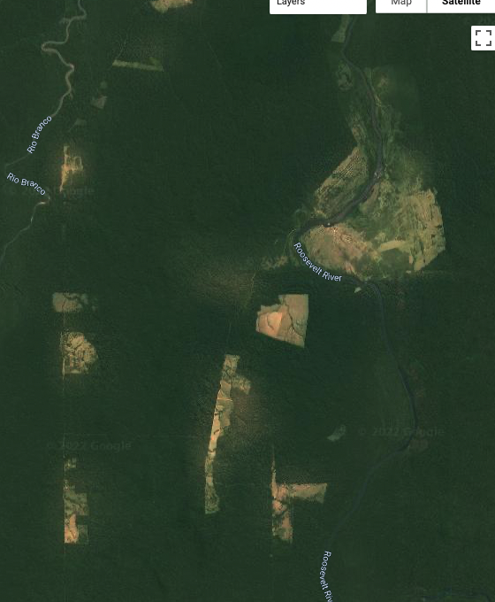
BULC captured the changes between 2016 and 2021 with a classification series that suggests agricultural development (Fig. 4.8.4, left). Given the appearance of BULC’s 2021 classification, it suggests that the satellite backdrop at the time of this writing (Fig. 4.8.4, right) came from an earlier time period.
Now, in the Results panel, select BULC, then Movie. Set your desired frame speed and resolution, then select Redraw Thumbnail. Then, zoom the main Map even closer to some agriculture that appears to have been established between 2016 and 2021. Redraw the thumbnail movie as needed to find an interesting set of pixels.
With this finer-scale access to the results of BULC, you can select individual pixels to inspect. Move the horizontal divider downward to expose the Inspector tab and Console tab. Use the Inspector to click on several pixels to learn their history as expressed in the inputted Events and in BULC’s interpretation of the noise and signal in the Event series. In a chosen pixel, you might see output that looks like Fig. 4.8.5. It indicates a possible conversion in the Event time series after a few classifications of the pixel as Forest. This decreases the confidence that the pixel is still Forest (Fig. 4.8.5, lower panel), but not enough for the Active Agriculture class (class 3) to become the dominant probability. After the subsequent Event labels the pixel as Forest, the confidence (lower panel) recovers slightly, but not to its former level. The next Event classifies the pixel as Active Agriculture, confidently, by interpreting that second Active Agriculture classification, in a setting where change was already somewhat suspected after the first non-Forest classification. BULC’s label (middle panel) changes to be Active Agriculture at that point in the sequence. Subsequent Event classifications as Active Agriculture creates a growing confidence that its proper label at the end of the sequence was indeed Active Agriculture.

 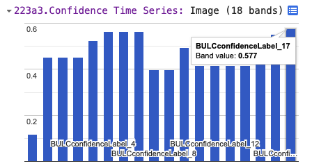
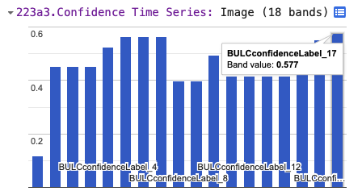
Question 3. Run the code again with the same data, but adjust the three levelers, then view the results presented in the Map window and the Results panel. How do each of the three parameters affect the behavior of BULC in its results? Use the thumbnail to assess your subjective satisfaction with the results, and use the Inspector to view the BULC behavior in individual pixels. Can you produce an optimal outcome for this given set of input classifications?
Change Detection with BULC-D
What if we wanted to identify areas of likely change or stability without trying to identify the initial and final LULC class? BULC-D is an algorithm that estimates, at each time step, the probability of noteworthy change. The example below uses the Normalized Burn Ratio (NBR) as a gauge: BULC-D assesses whether the ratio has meaningfully increased, decreased, or remained the same. It is then the choice of the analyst to decide how to treat these assessed probabilities of stability and change.
BULC-D involves determining an expectation for an index across a user-specified time period and then comparing new values against that estimation. Using Bayesian logic, BULC-D then asks which of three hypotheses is most likely, given evidence from the new values to date from that index. The hypotheses are simple: Either the value has decreased meaningfully, or it has increased meaningfully, or it has not changed substantially compared to the previously established expectation. The details of the workings of BULC-D are beyond the scope of this exercise, but we provide it as a tool for exploration. BULC-D’s basic framework is the following:
- Establish: Fit a harmonic curve with a user-specified number of terms to a stream of values from an index, such as the Normalized Difference Vegetation Index (NDVI), NBR, etc.
- Standardize: For each new image, quantify the deviation of the index’s value from the expectation on that date.
- Contextualize: Assess the magnitude of that deviation in one of several ordered bins.
- Synthesize: Use the BULC framework to adjust the vector of change for the three possibilities: the value went down, the value stayed the same, the value went up.
It is worth noting that BULC-D does not label the change with a LULC category; rather, it trains itself to distinguish likely LULC change from expected variability. In this way, BULC-D can be thought of as a “sieve” through which you are able to identify locations of possible change, isolated from likely background noise. In the BULC-D stage, the likeliness of change is identified across the landscape; in a separate second stage, the meaning of those changes and any changes to LULC classes are identified. We will explore the workings of BULC-D using its GUI.
Code Checkpoint F48c. The book’s repository contains information about accessing that interface.
After you have run the script to initialize the interface, BULC-D’s interface requires a few parameters to be set. For this run of BULC-D, we will set the parameters to the following:
- Expectation years: 2020
- Target year: 2021
- Sensors: Landsat and Sentinel
- Index: NBR
- Harmonic fit: Yes, 1 harmonic term.
Run BULC-D for this area. As a reminder, you should first zoom in enough that the scale bar reads “5 km” or finer. Then, search for the location “-60.7624, -9.8542”. When you run BULC-D, a result like Fig. F4.8.6 is shown for the layer of probabilities.

Fig. 4.8.6 Result for BULC-D for the Roosevelt River area, depicting estimated probability of change and stability for 2021
The BULC-D image (Fig. F4.8.6) shows each pixel as a continuous three-value vector along a continuous range; the three values sum to 1. For example, a vector with values of [0.85, 0.10, 0.05] would represent an area estimated with high confidence according to BULC-D to have experienced a sustained drop in NBR in the target period compared to the values set by the expectation data. In that pixel, the combination of three colors would produce a value that is richly red. You can see Chap. F1.1 for more information on drawing bands of information to the screen using the red-green-blue additive color model in Earth Engine.
Each pixel experiences its own NBR history in both the expectation period and the target year. Next, we will highlight the history of three nearby areas: one, marked with a red balloon in your interface, that BULC assessed as having experienced a persistent drop in NBR; a second in green assessed to not have changed, and a third in blue assessed to have witnessed a persistent NBR increase.
Figure F4.8.7 shows the NBR history for the red balloon in the southern part of the study area in Fig. F4.8.4. If you click on that pixel or one like it, you can see that, whereas the values were quite stable throughout the growing season for the years used to create the pixel’s expectation, they were persistently lower in the target year. This is flagged as a likely meaningful drop in the NBR by BULC-D, for consideration by the analyst.

Fig. 4.8.7 NBR history for a pixel with an apparent drop in NBR in the target year (below) as compared to the expectation years (above). Pixel is colored a shade of red in Fig. 4.8.6.
Figure F4.8.8 shows the NBR history for the blue balloon in the southern part of the study area in Fig. F4.8.4. For that pixel, while the values were quite stable throughout the growing season for the years used to create the pixel’s expectation, they were persistently higher in the target year.
Question 4. Experiment with turning off one of the satellite sensor data sources used to create the expectation collection. For example, do you get the same results if the Sentinel-2 data stream is not used, or is the outcome different. You might make screen captures of the results to compare with Fig. 4.8.4. How strongly does each satellite stream affect the outcome of the estimate? Do differences in the resulting estimate vary across the study area?
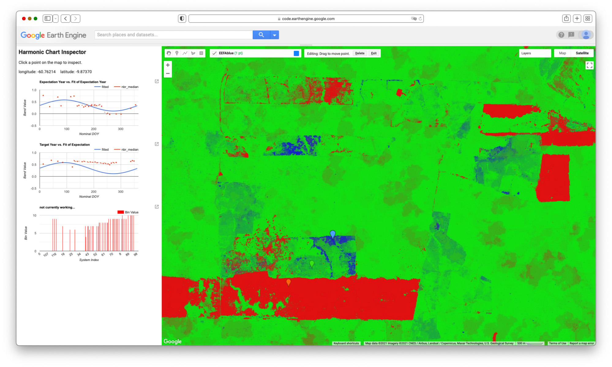
Figure F4.8.8 also shows that, for that pixel, the fit of values for the years used to build the expectation showed a sine wave (shown in blue), but with a fit that was not very strong. When data for the target year was assembled (Fig. F4.8.8, bottom), the values were persistently above expectation throughout the growing season. Note that this pixel was identified as being different in the target year as compared to earlier years, which does not rule out the possibility that the LULC of the area was changed (for example, from Forest to Agriculture) during the years used to build the expectation collection. BULC-D is intended to be run steadily over a long period of time, with the changes marked as they occur, after which point the expectation would be recalculated.

Fig. F4.8.9 shows the NBR history for the green balloon in the southern part of the study area in Fig. F4.8.4. For that pixel, the values in the expectation collection formed a sine wave, and the values in the target collection deviated only slightly from the expectation during the target year.
Change Detection with BULC and Dynamic World
Recent advances in neural networks have made it easier to develop consistent models of LULC characteristics using satellite data. The Dynamic World project (Brown et al. 2022) applies a neural network, trained on a very large number of images, to each new Sentinel-2 image soon after it arrives. The result is a near-real-time classification interpreting the LULC of Earth’s surface, kept continually up to date with new imagery.
What to do with the inevitable inconsistencies in a pixel’s stated LULC class through time? For a given pixel on a given image, its assigned class label is chosen by the Dynamic World algorithm as the maximum class probability given the band values on that day. Individual class probabilities are given as part of the dataset and could be used to better interpret a pixel’s condition and perhaps its history. Future work with BULC will involve incorporating these probabilities into BULC’s probability-based structure. For this tutorial, we will explore the consistency of the assigned labels in this same Roosevelt River area as a way to illustrate BULC’s potential for minimizing noise in this vast and growing dataset.
5.1. Using BULC To Explore and Refine Dynamic World Classifications
Code Checkpoint A48d. The book’s repository contains a script to use to begin this section. You will need to load the linked script and run it to begin.
After running the linked script, the BULC interface will initialize. Select Dynamic World from the dropdown menu where you earlier selected Image Collection. When you do, the interface opens several new fields to complete. BULC will need to know where you are interested in working with Dynamic World, since it could be anywhere on Earth. To specify the location, the interface field expects a nested list of lists of lists, which is modeled after the structure used inside the constructor ee.Geometry.Polygon. (When using drawing tools or specifying study areas using coordinates, you may have noticed this structure.) Enter the following nested list in the text field near the Dynamic World option, without enclosing it in quotes:
[[[-61.155, -10.559], [-60.285, -10.559], [-60.285, -9.436], [-61.155, -9.436]]]
Next, BULC will need to know which years of Dynamic World you are interested in. For this exercise, select 2021. Then, BULC will ask for the Julian days of the year that you are interested in. For this exercise, enter 150 for the start day and 300 for the end day. Because you selected Dynamic World for analysis in BULC, the interface defaults to offering the number 9 for the number of classes in Events and for the number of classes to track. This number represents the full set of classes in the Dynamic World classification scheme. You can leave other required settings shown in green with their default values. For the Color Output Palette, enter the following palette without quotes. This will render results in the Dynamic World default colors.
[‘419BDF’, ‘397D49’, ‘88B053’, ‘7A87C6’, ‘E49635’, ‘DFC35A’, ‘C4281B’, ‘A59B8F’, ‘B39FE1’]
When you have finished, select Apply Parameters at the bottom of the input panel. When it runs, BULC subsets the Dynamic World dataset to clip out according to the dates and location, identifying images from more than 40 distinct dates. The area covers two of the tiles in which Dynamic World classifications are partitioned to be served, so BULC receives more than 90 classifications. When BULC finishes its run, the Map panel will look like Fig. F4.8.10, BULC’s estimate of the final state of the landscape at the end of the classification sequence.


Let’s explore the suite of information returned by BULC about this time period in Dynamic World. Enter “Muiraquitã” in the search bar and view the results around that area to be able to see the changing LULC classifications within farm fields. Then, begin to inspect the results by viewing a Movie of the Events, with a data frame rate of 6 frames per second. Because the study area spans multiple Dynamic World tiles, you will find that many Event frames are black, meaning that there was no data in your sector on that particular image. Because of this, and also perhaps because of the very aggressive cloud masking built into Dynamic World, viewing Events (which, as a reminder, are the individual classified images directly from Dynamic World) can be a very challenging way to look for change and stability. BULC’s goal is to sift through those classifications to produce a time series that reflects, according to its estimation, the most likely LULC value at each time step. View the Movie of the BULC results and ask yourself whether each class is equally well replicated across the set of classifications. A still from midway through the Movie sequence of the BULC results can be seen in Fig. F4.8.11.

As BULC uses the classification inputs to estimate the state of the LULC at each time step, it also tracks its confidence in those estimates. This is shown in several ways in the interface.
- You can view a Movie of BULC’s confidence through time as it reacts to the consistency or variability of the class identified in each pixel by Dynamic World. View that movie now over this area to see the evolution of BULC’s confidence through time of the class of each pixel. A still frame from this movie can be seen in Fig. F4.8.12. The frame and animation indicate that BULC’s confidence is lowest in pixels where the estimate flips between similar categories, such as Grass and Shrub & Scrub. It also is low at the edges of land covers, even where the covers (such as Forest and Water) are easy to discern from each other.
- You can inspect the final confidence estimate from BULC, which is shown as a grayscale image in the set of Map layers in the left lower panel. That single layer synthesizes how, across many Dynamic World classifications, the confidence in certain LULC classes and locations is ultimately more stable than in others. For example, generally speaking, the Forest class is classified consistently across this assemblage of Dynamic World images. Agriculture fields are less consistently classified as a single class, as evidenced by their relatively low confidence.
- Another way of viewing BULC’s confidence is through the Inspector tab. You can click on individual pixels to view their values in the Event time series and in the BULC time series, and see BULC’s corresponding confidence value changing through time in response to the relative stability of each pixel’s classification.
- Another way to view BULC’s confidence estimation is as a hillshade enhancement of the final BULC classification. If you select the Probability Hillshade in the set of Map layers, it shows the final BULC classification as a textured surface, in which you can see where lower-confidence pixels are classified.

5.2. Using BULC To Visualize Uncertainty of Dynamic World in Simplified Categories
In the previous section, you may have noticed that there are two main types of uncertainty in BULC’s assessment of long-term classification confidence. One type is due to spatial uncertainty at the edge of two relatively distinct phenomena, like the River/Forest boundary visible in Fig. F4.8.12. These are shown in dark tones in the confidence images, and emphasized in the Probability Hillshade. The other type of uncertainty is due to some cause of labeling uncertainty, due either (1) to the similarity of the classes, or (2) to persistent difficulty in distinguishing two distinct classes that are meaningfully different but spectrally similar. An example of uncertainty due to similar labels is distinguishing flooded and non-flooded wetlands in classifications that contain both those categories. An example of difficulty distinguishing distinct but spectrally similar classes might be distinguishing a parking lot from a body of water.
BULC allows you to remap the classifications it is given as input, compressing categories as a way to minimize uncertainty due to similarity among classes. In the setting of Dynamic World in this study area, we notice that several classes are functionally similar for the purposes of detecting new deforestation: Farm fields and pastures are variously labeled on any given Dynamic World classification as Grass, Flooded Vegetation, Crops, Shrub & Scrub, Built, or Bare Ground. What if we wanted to combine these categories to be similar to the distinctions of the classified Events from this lab’s Sect. 1? The classes in that section were Forest, Water, and Active Agriculture. To remap the Dynamic World classification, continue with the same run as in Sect. 5.1. Near where you specified the location for clipping Dynamic World, there are two fields for remapping. Select the Remap checkbox and in the “from” field, enter (without quotes):
0,1,2,3,4,5,6,7,8
In the “to” field, enter (without quotes):
1,0,2,2,2,2,2,2,0
This directs BULC to create a three-class remap of each Dynamic World image. Next, in the area of the interface where you specify the palette, enter the same palette used earlier:
[‘green’, ‘blue’, ‘yellow’]
Before continuing, think for a moment about how many classes you have now. From BULC’s perspective, the Dynamic World events will have 3 classes and you will be tracking 3 classes. Set both the Number of Classes in Events and Number of Classes to Track to 3. Then click Apply Parameters to send this new run to BULC.
The confidence image shown in the main Map panel is instructive (Fig. 4.8.13). Using data from 2020, 2021, and 2022, It indicates that much of the uncertainty among the original Dynamic World classifications was in distinguishing labels within agricultural fields. When that uncertainty is removed by combining classes, the BULC result indicates that a substantial part of the remaining uncertainty is at the edges of distinct covers. For example, in the south-central and southern part of the frame, much of the uncertainty among classifications in the original Dynamic World classifications was due to distinction among the highly similar, easily confused classes. Much of what remained (right) after remapping (right) formed outlines of the river and the edges between farmland and forest: a graphic depiction of the “spatial uncertainty” discussed earlier. Yet not all of the uncertainty was spatial; the thicker, darker areas of uncertainty even after remapping (right, at the extreme eastern edge for example) indicates a more fundamental disagreement in the classifications. In those pixels, even when the Agriculture-like classes were compressed, there was still considerable uncertainty (likely between Forest and Active Agriculture) in the true state of these areas. These might be of further interest: were they places newly deforested in 2020-2022? Were they abandoned fields regrowing? Were they degraded at some point? The mapping of uncertainty may hold promise for a better understanding of uncertainty as it is encountered in real classifications, thanks to Dynamic World.
 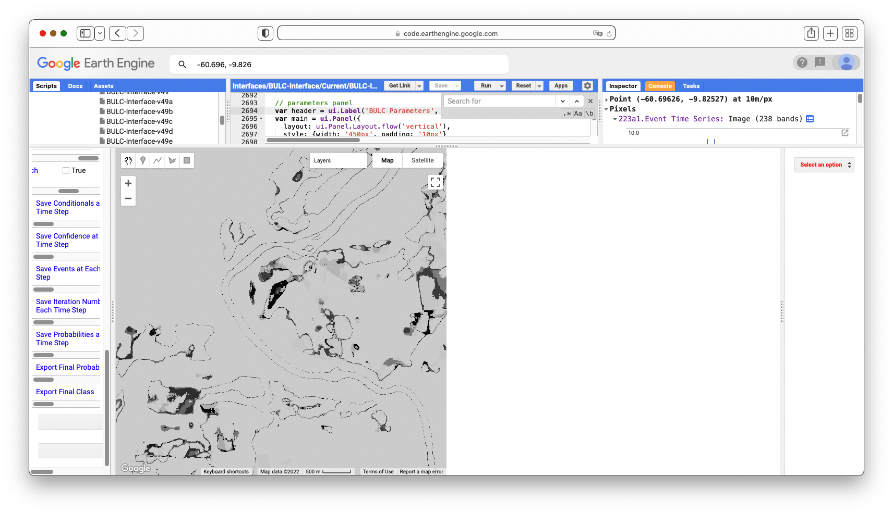
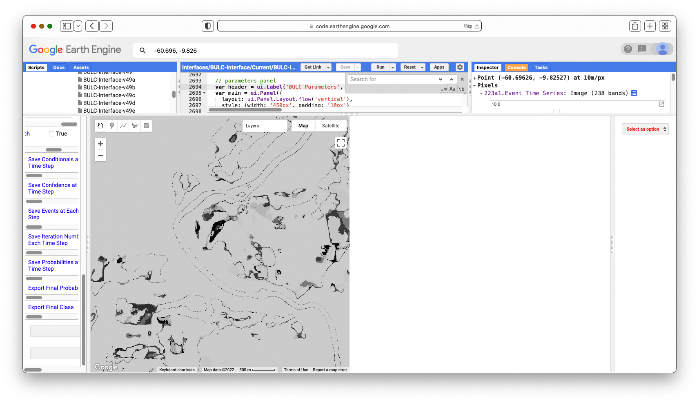
Given the tools and approaches presented in this lab, you should now be able to import your own classifications for BULC (Sects. 1–3), detect changes in sets of raw imagery (Sect. 4), or use Dynamic World’s pre-created classifications (Sect. 5). The following exercises explore this potential.
Conclusion
In this lab, you have viewed several related but distinct ways to use Bayesian statistics to identify locations of LULC change in complex landscapes. While they are standalone algorithms, they are each intended to provide a perspective either on the likelihood of change (BULC-D) or of extracting signal from noisy classifications (BULC). You can consider using them especially when you have pixels that, despite your best efforts, periodically flip back and forth between similar but different classes. BULC can help ignore noise, and BULC-D can help reveal whether this year’s signal has precedent in past years.
To learn more about the BULC algorithm, you can view this interactive probability illustration tool by a link found in script F48s1 - Supplemental in the book’s repository. In the future, after you have learned how to use the logic of BULC, you might prefer to work with the JavaScript code version. To do that, you can find a tutorial at the website of the authors.
References
Brown CF, Brumby SP, Guzder-Williams B, et al (2022) Dynamic World, Near real-time global 10 m land use land cover mapping. Sci Data 9:1–17. https://doi.org/10.1038/s41597-022-01307-4
Cardille JA, Fortin JA (2016) Bayesian updating of land-cover estimates in a data-rich environment. Remote Sens Environ 186:234–249. https://doi.org/10.1016/j.rse.2016.08.021
Fortin JA, Cardille JA, Perez E (2020) Multi-sensor detection of forest-cover change across 45 years in Mato Grosso, Brazil. Remote Sens Environ 238. https://doi.org/10.1016/j.rse.2019.111266
Lee J, Cardille JA, Coe MT (2020) Agricultural expansion in Mato Grosso from 1986-2000: A Bayesian time series approach to tracking past land cover change. Remote Sens 12. https://doi.org/10.3390/rs12040688
Lee J, Cardille JA, Coe MT (2018) BULC-U: Sharpening resolution and improving accuracy of land-use/land-cover classifications in Google Earth Engine. Remote Sens 10. https://doi.org/10.3390/rs10091455
Millard C (2006) The River of Doubt: Theodore Roosevelt’s Darkest Journey. Anchor
Exploring Lagged Effects in Time Series
Overview
In this chapter, we will introduce lagged effects to build on previous work in modeling time-series data. Time-lagged effects occur when an event at one point in time impacts dependent variables at a later point in time. You will be introduced to concepts of autocovariance and autocorrelation, cross-covariance and cross-correlation, and auto-regressive models. At the end of this chapter, you will be able to examine how variables relate to one another across time, and to fit time series models that take into account lagged events.
Learning Outcomes
- Using the ee.Join function to create time-lagged collections.
- Calculating autocovariance and autocorrelation.
- Calculating cross-covariance and cross-correlation.
- Fitting auto-regressive models.
Assumes you know how to:
- Import images and image collections, filter, and visualize (Part F1).
- Perform basic image analysis: select bands, compute indices, create masks, classify images (Part F2).
- Create a graph using ui.Chart (Chap. F1.3).
- Write a function and map it over an ImageCollection (Chap. F4.0).
- Mask cloud, cloud shadow, snow/ice, and other undesired pixels (Chap. F4.3).
- Fit linear and nonlinear functions with regression in an ImageCollection time series (Chap. F4.6).
Introduction
While fitting functions to time series allows you to account for seasonality in your models, sometimes the impact of a seasonal event does not impact your dependent variable until the next month, the next year, or even multiple years later. For example, coconuts take 18–24 months to develop from flower to harvestable size. Heavy rains during the flower development stage can severely reduce the number of coconuts that can be harvested months later, with significant negative economic repercussions. These patterns—where events in one time period impact our variable of interest in later time periods—are important to be able to include in our models.
In this chapter, we introduce lagged effects into our previous discussions on interpreting time-series data (Chaps. F4.6 and F4.7). Being able to integrate lagged effects into our time-series models allows us to address many important questions. For example, streamflow can be accurately modeled by taking into account previous streamflow, rainfall, and soil moisture; this improved understanding helps predict and mitigate the impacts of drought and flood events made more likely by climate change (Sazib et al. 2020). As another example, time-series lag analysis was able to determine that decreased rainfall was associated with increases in livestock disease outbreaks one year later in India (Karthikeyan et al. 2021).
Autocovariance and Autocorrelation
Before we dive into autocovariance and autocorrelation, let’s set up an area of interest and dataset that we can use to illustrate these concepts. We will work with a detrended time series (as seen in Chap. F4.6) based on the USGS Landsat 8 Level 2, Collection 2, Tier 1 image collection. Copy and paste the code below to filter the Landsat 8 collection to a point of interest over California and specific dates, and apply the pre-processing function—to mask clouds (as seen in Chap. F4.3) and to scale and add variables of interest (as seen in Chap. F4.6).
// Define function to mask clouds, scale, and add variables
// (NDVI, time and a constant) to Landsat 8 imagery.
function maskScaleAndAddVariable(image) {
// Bit 0 - Fill
// Bit 1 - Dilated Cloud
// Bit 2 - Cirrus
// Bit 3 - Cloud
// Bit 4 - Cloud Shadow
var qaMask = image.select('QA_PIXEL').bitwiseAnd(parseInt('11111',
2)).eq(0);
var saturationMask = image.select('QA_RADSAT').eq(0);
// Apply the scaling factors to the appropriate bands.
var opticalBands = image.select('SR_B.').multiply(0.0000275).add(-
0.2);
var thermalBands = image.select('ST_B.*').multiply(0.00341802)
.add(149.0);
// Replace the original bands with the scaled ones and apply the masks.
var img = image.addBands(opticalBands, null, true)
.addBands(thermalBands, null, true)
.updateMask(qaMask)
.updateMask(saturationMask);
var imgScaled = image.addBands(img, null, true);
// Now we start to add variables of interest.
// Compute time in fractional years since the epoch.
var date = ee.Date(image.get('system:time_start'));
var years = date.difference(ee.Date('1970-01-01'), 'year');
var timeRadians = ee.Image(years.multiply(2 * Math.PI));
// Return the image with the added bands.
return imgScaled
// Add an NDVI band.
.addBands(imgScaled.normalizedDifference(['SR_B5', 'SR_B4'])
.rename('NDVI'))
// Add a time band.
.addBands(timeRadians.rename('t'))
.float()
// Add a constant band.
.addBands(ee.Image.constant(1));
}
// Import region of interest. Area over California.
var roi = ee.Geometry.Polygon([
[-119.44617458417066,35.92639730653253],
[-119.07675930096754,35.92639730653253],
[-119.07675930096754,36.201704711823844],
[-119.44617458417066,36.201704711823844],
[-119.44617458417066,35.92639730653253]
]);
// Import the USGS Landsat 8 Level 2, Collection 2, Tier 1 collection,
// filter, mask clouds, scale, and add variables.
var landsat8sr = ee.ImageCollection('LANDSAT/LC08/C02/T1_L2')
.filterBounds(roi)
.filterDate('2013-01-01', '2018-01-01')
.map(maskScaleAndAddVariable);
// Set map center.
Map.centerObject(roi, 10);Next, copy and paste the code below to estimate the linear trend using the linearRegression reducer, and remove that linear trend from the time series.
// List of the independent variable names.
var independents = ee.List(['constant', 't']);
// Name of the dependent variable.
var dependent = ee.String('NDVI');
// Compute a linear trend. This will have two bands: 'residuals' and
// a 2x1 band called coefficients (columns are for dependent variables).
var trend = landsat8sr.select(independents.add(dependent))
.reduce(ee.Reducer.linearRegression(independents.length(), 1));
// Flatten the coefficients into a 2-band image
var coefficients = trend.select('coefficients')
// Get rid of extra dimensions and convert back to a regular image
.arrayProject([0])
.arrayFlatten([independents]);
// Compute a detrended series.
var detrended = landsat8sr.map(function(image) {
return image.select(dependent)
.subtract(image.select(independents).multiply(
coefficients)
.reduce('sum'))
.rename(dependent)
.copyProperties(image, ['system:time_start']);
});Now let’s turn to autocovariance and autocorrelation. The autocovariance of a time series refers to the dependence of values in the time series at time t with values at time h = t − lag. The autocorrelation is the correlation between elements of a dataset at one time and elements of the same dataset at a different time. The autocorrelation is the autocovariance normalized by the standard deviations of the covariates. Specifically, we assume our time series is stationary, and define the autocovariance and autocorrelation following Shumway and Stoffer (2019). Comparing values at time t to previous values is useful not only for computing autocovariance, but also for a variety of other time series analyses as you’ll see shortly.
To combine image data with previous values in Earth Engine, the first step is to join the previous values to the current values. To do that, we will use a ee.Join function to create what we’ll call a lagged collection. Copy and paste the code below to define a function that creates a lagged collection.
// Function that creates a lagged collection.
var lag = function(leftCollection, rightCollection, lagDays) {
var filter = ee.Filter.and(
ee.Filter.maxDifference({
difference: 1000 * 60 * 60 * 24 * lagDays,
leftField: 'system:time_start',
rightField: 'system:time_start'
}),
ee.Filter.greaterThan({
leftField: 'system:time_start',
rightField: 'system:time_start'
}));
return ee.Join.saveAll({
matchesKey: 'images',
measureKey: 'delta_t',
ordering: 'system:time_start',
ascending: false, // Sort reverse chronologically
}).apply({
primary: leftCollection,
secondary: rightCollection,
condition: filter
});
};This function joins a collection to itself, using a filter that gets all the images before each image’s date that are within a specified time difference (in days) of each image. That list of previous images within the lag time is stored in a property of the image called images, sorted reverse chronologically. For example, to create a lagged collection from the detrended Landsat imagery, copy and paste:
// Create a lagged collection of the detrended imagery.
var lagged17 = lag(detrended, detrended, 17);Why 17 days? Recall that the temporal cadence of Landsat is 16 days. Specifying 17 days in the join gets one previous image, but no more.
Now, we will compute the autocovariance using a reducer that expects a set of one-dimensional arrays as input. So pixel values corresponding to time t need to be stacked with pixel values at time t − lag as multiple bands in the same image. Copy and paste the code below to define a function to do so, and apply it to merge the bands from the lagged collection.
// Function to stack bands.
var merge = function(image) {
// Function to be passed to iterate.
var merger = function(current, previous) {
return ee.Image(previous).addBands(current);
};
return ee.ImageCollection.fromImages(image.get('images'))
.iterate(merger, image);
};
// Apply merge function to the lagged collection.
var merged17 = ee.ImageCollection(lagged17.map(merge));Now the bands from time t and h are all in the same image. Note that the band name of a pixel at time h, ph, was the same as time t, pt (band name is “NDVI” in this case). During the merging process, it gets a ’_1’ appended to it (e.g. NDVI_1).
You can print the image collection to check the band names of one of the images. Copy and paste the code below to map a function to convert the merged bands to arrays with bands pt and ph, and then reduce it with the covariance reducer. We use a parallelScale factor of 8 in the reduce function to avoid the computation to run out of memory (this is not always needed). Note that the output of the covariance reducer is an array image, in which each pixel stores a 2x2 variance-covariance array. The off-diagonal elements are covariance, which you can map directly using the arrayGet function.
// Function to compute covariance.
var covariance = function(mergedCollection, band, lagBand) {
return mergedCollection.select([band, lagBand]).map(function(
image) {
return image.toArray();
}).reduce(ee.Reducer.covariance(), 8);
};
// Concatenate the suffix to the NDVI band.
var lagBand = dependent.cat('_1');
// Compute covariance.
var covariance17 = ee.Image(covariance(merged17, dependent, lagBand))
.clip(roi);
// The output of the covariance reducer is an array image,
// in which each pixel stores a 2x2 variance-covariance array.
// The off diagonal elements are covariance, which you can map
// directly using:
Map.addLayer(covariance17.arrayGet([0, 1]),
{
min: 0,
max: 0.02
},
'covariance (lag = 17 days)');Inspect the pixel values of the resulting covariance image (Fig. F4.9.1). The covariance is positive when the greater values of one variable (at time t) mainly correspond to the greater values of the other variable (at time h), and the same holds for the lesser values, therefore, the values tend to show similar behavior. In the opposite case, when the greater values of a variable correspond to the lesser values of the other variable, the covariance is negative.

The diagonal elements of the variance-covariance array are variances. Copy and paste the code below to define and map a function to compute correlation (Fig. F4.9.2) from the variance-covariance array.
// Define the correlation function.
var correlation = function(vcArrayImage) {
var covariance = ee.Image(vcArrayImage).arrayGet([0, 1]);
var sd0 = ee.Image(vcArrayImage).arrayGet([0, 0]).sqrt();
var sd1 = ee.Image(vcArrayImage).arrayGet([1, 1]).sqrt();
return covariance.divide(sd0).divide(sd1).rename(
'correlation');
};
// Apply the correlation function.
var correlation17 = correlation(covariance17).clip(roi);
Map.addLayer(correlation17,
{
min: -1,
max: 1
},
'correlation (lag = 17 days)');
Higher positive values indicate higher correlation between the elements of the dataset, and lower negative values indicate the opposite.
It’s worth noting that you can do this for longer lags as well. Of course, that images list will fill up with all the images that are within lag of t. Those other images are also useful—for example, in fitting autoregressive models as described later.
Code Checkpoint F49a. The book’s repository contains a script that shows what your code should look like at this point.
Cross-Covariance and Cross-Correlation
Cross-covariance is analogous to autocovariance, except instead of measuring the correspondence between a variable and itself at a lag, it measures the correspondence between a variable and a covariate at a lag. Specifically, we will define the cross-covariance and cross-correlation according to Shumway and Stoffer (2019).
You already have all the code needed to compute cross-covariance and cross-correlation. But you do need a time series of another variable. Suppose we postulate that NDVI is related in some way to the precipitation before the NDVI was observed. To estimate the strength of this relationship in every pixel, copy and paste the code below to the existing script to load precipitation, join, merge, and reduce as previously:
// Precipitation (covariate)
var chirps = ee.ImageCollection('UCSB-CHG/CHIRPS/PENTAD');
// Join the t-l (l=1 pentad) precipitation images to the Landsat.
var lag1PrecipNDVI = lag(landsat8sr, chirps, 5);
// Add the precipitation images as bands.
var merged1PrecipNDVI = ee.ImageCollection(lag1PrecipNDVI.map(merge));
// Compute and display cross-covariance.
var cov1PrecipNDVI = covariance(merged1PrecipNDVI, 'NDVI', 'precipitation').clip(roi);
Map.addLayer(cov1PrecipNDVI.arrayGet([0, 1]), {}, 'NDVI - PRECIP cov (lag = 5)');
// Compute and display cross-correlation.
var corr1PrecipNDVI = correlation(cov1PrecipNDVI).clip(roi);
Map.addLayer(corr1PrecipNDVI, {
min: -0.5,
max: 0.5}, 'NDVI - PRECIP corr (lag = 5)');What do you observe from this result? Looking at the cross-correlation image (Fig. F4.9.3), do you observe high values where you would expect high NDVI values (vegetated areas)? One possible drawback of this computation is that it’s only based on five days of precipitation, whichever five days came right before the NDVI image.

Perhaps precipitation in the month before the observed NDVI is relevant? Copy and paste the code below to test the 30-day lag idea.
// Precipitation (covariate)
var chirps = ee.ImageCollection('UCSB-CHG/CHIRPS/PENTAD');
// Join the t-l (l=1 pentad) precipitation images to the Landsat.
var lag1PrecipNDVI = lag(landsat8sr, chirps, 5);
// Add the precipitation images as bands.
var merged1PrecipNDVI = ee.ImageCollection(lag1PrecipNDVI.map(merge));
// Compute and display cross-covariance.
var cov1PrecipNDVI = covariance(merged1PrecipNDVI, 'NDVI',
'precipitation').clip(roi);
Map.addLayer(cov1PrecipNDVI.arrayGet([0, 1]), {},
'NDVI - PRECIP cov (lag = 5)');
// Compute and display cross-correlation.
var corr1PrecipNDVI = correlation(cov1PrecipNDVI).clip(roi);
Map.addLayer(corr1PrecipNDVI, {
min: -0.5,
max: 0.5
}, 'NDVI - PRECIP corr (lag = 5)');Observe that the only change is to the merge method. Instead of merging the bands of the NDVI image and the covariate (precipitation), the entire list of precipitation is summed and added as a band (eliminating the need for iterate).
Which changes do you notice between the cross-correlation images—5 days lag vs. 30 days lag (Fig. F4.9.4)?. You can use the Inspector tool to assess if the correlation increased or not at vegetated areas.

As long as there is sufficient temporal overlap between the time series, these techniques could be extended to longer lags and longer time series.
Code Checkpoint F49b. The book’s repository contains a script that shows what your code should look like at this point.
Auto-Regressive Models
The discussion of autocovariance preceded this section in order to introduce the concept of lag. Now that you have a way to get previous values of a variable, it’s worth considering auto-regressive models. Suppose that pixel values at time t depend in some way on previous pixel values—auto-regressive models are time series models that use observations from previous time steps as input to a regression equation to predict the value at the next time step. If you have observed significant, non-zero autocorrelations in a time series, this is a good assumption. Specifically, you may postulate a linear model such as the following, where pt is a pixel at time t, and et is a random error (Chap. F4.6):
\(p_t = β_0 + β_1 p_{t-1} + β_2 p_{t-2} + e_t\) (F4.9.1)
To fit this model, you need a lagged collection as created previously, except with a longer lag (e.g., lag = 34 days). The next steps are to merge the bands, then reduce with the linear regression reducer.
Copy and paste the line below to the existing script to create a lagged collection, where the images list stores the two previous images:
var lagged34 = ee.ImageCollection(lag(landsat8sr, landsat8sr, 34));Copy and paste the code below to merge the bands of the lagged collection such that each image has bands at time t and bands at times t - 1,…, t − lag. Note that it’s necessary to filter out any images that don’t have two previous temporal neighbors.
var merged34 = lagged34.map(merge).map(function(image) {
return image.set('n', ee.List(image.get('images'))
.length());
}).filter(ee.Filter.gt('n', 1));Now, copy and paste the code below to fit the regression model using the linearRegression reducer.
var arIndependents = ee.List(['constant', 'NDVI_1', 'NDVI_2']);
var ar2 = merged34
.select(arIndependents.add(dependent))
.reduce(ee.Reducer.linearRegression(arIndependents.length(), 1));
// Turn the array image into a multi-band image of coefficients.
var arCoefficients = ar2.select('coefficients')
.arrayProject([0])
.arrayFlatten([arIndependents]);We can compute the fitted values using the expression function in Earth Engine. Because this model is a function of previous pixel values, which may be masked, if any of the inputs to equation F4.9.1 are masked, the output of the equation will also be masked. That’s why you should use an expression here, unlike the previous linear models of time. Copy and paste the code below to compute the fitted values.
// Compute fitted values.
var fittedAR = merged34.map(function(image) { return image.addBands(
image.expression('beta0 + beta1 * p1 + beta2 * p2', {
p1: image.select('NDVI_1'),
p2: image.select('NDVI_2'),
beta0: arCoefficients.select('constant'),
beta1: arCoefficients.select('NDVI_1'),
beta2: arCoefficients.select('NDVI_2')
}).rename('fitted'));
});Finally, copy and paste the code below to plot the results (Fig. F4.9.5). We will use a specific point defined as pt. Note the missing values that result from masked data. If you run into computation errors, try commenting the Map.addLayer calls from previous sections to save memory.
// Create an Earth Engine point object to print the time series chart.
var pt = ee.Geometry.Point([-119.0955, 35.9909]);
print(ui.Chart.image.series(
fittedAR.select(['fitted', 'NDVI']), pt, ee.Reducer
.mean(), 30)
.setSeriesNames(['NDVI', 'fitted'])
.setOptions({
title: 'AR(2) model: original and fitted values',
lineWidth: 1,
pointSize: 3,
}));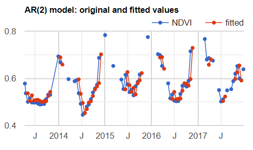
At this stage, note that the missing data has become a real problem. Any data point for which at least one of the previous points is masked or missing is also masked.
Code Checkpoint F49c. The book’s repository contains a script that shows what your code should look like at this point.
It may be possible to avoid this problem by substituting the output from equation F4.9.1 (the modeled value) for the missing or masked data. Unfortunately, the code to make that happen is not straightforward. You can check a solution in the following Code Checkpoint:
Code Checkpoint F49d. The book’s repository contains a script that shows what your code should look like at this point.
Conclusion
In this chapter, we learned how to use autocovariance and autocorrelation to explore the relationship between elements of a time series at multiple time steps. We also explored how to use cross-covariance and cross-correlation to examine the relationship between elements of two time series at different points in time. Finally, we used auto-regressive models to regress the elements of a time series with elements of the same time series at a different point in time. With these skills, you can now examine how events in one time period impact your variable of interest in later time periods. While we have introduced the linear approach to lagged effects, these ideas can be expanded to more complex models.
References
Karthikeyan R, Rupner RN, Koti SR, et al (2021) Spatio-temporal and time series analysis of bluetongue outbreaks with environmental factors extracted from Google Earth Engine (GEE) in Andhra Pradesh, India. Transbound Emerg Dis 68:3631–3642. https://doi.org/10.1111/tbed.13972
Sazib N, Bolten J, Mladenova I (2020) Exploring spatiotemporal relations between soil moisture, precipitation, and streamflow for a large set of watersheds using Google Earth Engine. Water (Switzerland) 12:1371. https://doi.org/10.3390/w12051371
Shumway RH, Stoffer DS (2019) Time Series: A Data Analysis Approach Using R. Chapman and Hall/CRC